| スターシップ・オペレーターズ(1) (電撃文庫) | |
| 水野 良 & 山根 公利 | |
| (2013) | |
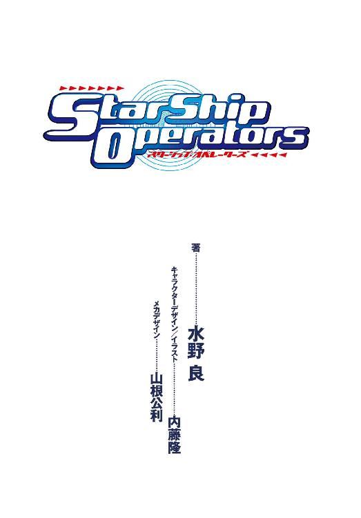
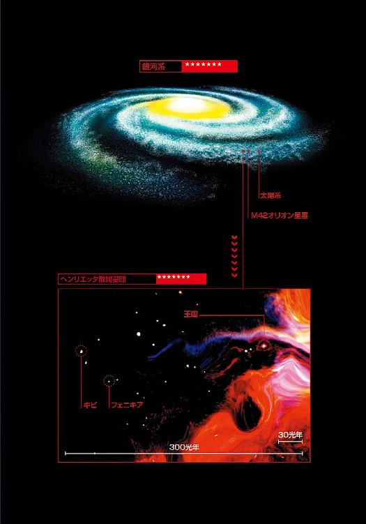
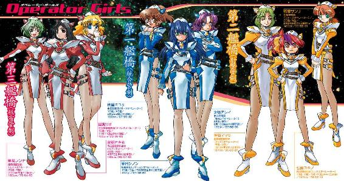
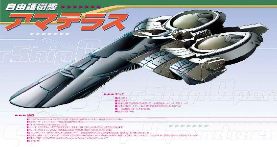
本書（電子版）に掲載されているコンテンツ（ソフトウェア／プログラム／データ／情報を含む）の著作権およびその他の権利は、すべて株式会社ＫＡＤＯＫＡＷＡおよび正当な権利を有する第三者に帰属しています。
法律の定めがある場合または権利者の明示的な承諾がある場合を除き、これらのコンテンツを複製・転載、改変・編集、翻案・翻訳、放送・出版、公衆送信（送信可能化を含む）・再配信、販売・頒布、貸与等に使用することはできません。
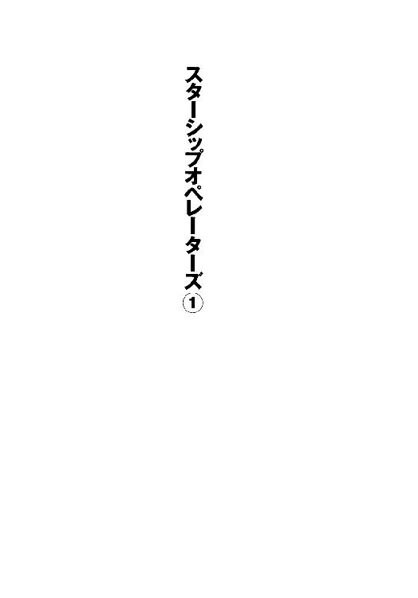
初出 電撃アニメーションマガジン
２０００年７月号～10月号
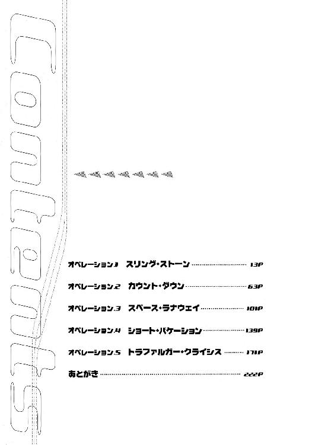
カバーデザイン◎荻窪裕司
編集◎フィールドワイ
キャラクターＣＧ◎内藤隆
メカ＆オブジェクトＣＧ◎コレサワシゲユキ
オペレーション１ スリング・ストーン
１
二三〇〇年二月二八日 東京──
指紋照合と暗証番号による電子ロックを解除し、佐竹マサラは下宿の扉を開いた。
東京都、新宿特別行政区──
大通りを入って五分ほどの所にある小さな集合住宅が立ちならぶ一角。三〇〇年前からさほど変わらぬ街並みが色濃く残っている。
マサラは、今年で二〇歳。歩いて十五分ほどの場所にある私立大学に在籍する二年生だ。
大学入学とともに、関西から今の下宿に越してきた。
扉を入ってすぐ右側の壁にあるタッチパネルを操作して、まず部屋の照明を、それからマルチモニターのスイッチをオンにする。
モニターに映しだされるのは、スタートチャンネル。
モニターに電源が入ると、自動で（自分の意志とは関係なく）最初に映しだされるＴＶチャンネルだ。
銀河ネットワークには何千というＴＶチャンネルがあるから、視聴者に存在を知ってもらうため、モニターの起動時に最初に映るチャンネルとして配信されてくるチャンネルである。
画面の右上にロゴがあって、『スターシップ・チャンネル２３００』と読むことができた。
「知らないチャンネルだな......」
マサラは、つぶやく。ひとり暮らしをはじめるようになってから、モニターに向かって話しかけるのが癖になってしまった。
おそらく、新しくできたチャンネルだろう。宣伝のため、スタートチャンネルを使って、配信しているわけだ。
フローリングの床に転がっていたコントローラーを操作して、チャンネル情報を表示させると、視聴条件は月単位の購入とあった。
価格は、五〇〇〇円──
「高くないか？」
ハイグレードのアダルト系チャンネルと同じぐらいの値段である。もっとも、今日は無料視聴が可能のようだ。
特に見たい番組もなかったので、マサラはチャンネルをそのままにしておく。そして横目で画面を眺めながら、部屋着に着替える。
モニターでは、二〇世紀後半からはじまる宇宙開発の映像が、重厚な雰囲気の音楽に乗って流れていた。
〝世界戦争の世紀〟と呼ばれた二〇世紀。
〝危機の世紀〟と呼ばれた二一世紀。
〝宇宙開拓の世紀〟と呼ばれた二二世紀。
そして二三世紀も、あと一年で終わろうとしている。この一〇〇年間を、歴史学者がどのように評価するかは分からない。
〝倦怠の世紀〟とでも呼ぶのだろうか。
三〇〇年あまりにおよぶ宇宙時代のダイジェストが映しだされたあと、画面はいきなり暗転し、一隻の宇宙戦闘艦が漆黒の宇宙空間を航行する映像に変わった。
見たことのない型の宇宙艦だった。
国連軍の所属ではないな、とマサラは思った。
軍事マニアではないが、国連宇宙軍に所属する五〇余隻の宇宙戦闘艦の形状と名称ぐらいは、子供時代に常識として覚えたものだ。
「──こんにちは、そしてようこそ、スターシップ・チャンネルへ。わたしは、ディータ・ミルコフ。このチャンネルの案内役です」
画面は宇宙艦の艦橋らしき場所に変わり、身体にフィットした簡易宇宙服に身を包んだひとりの女性をカメラが捕らえた。
輝くような金髪をした、なかなかの美人だ。
日本語で聞こえてくるのは、モニターの同時通訳機能をオンに設定しているからだろう。彼女自身は、おそらく英語で話しているはずだった。
「──これから、みなさんにお届けする映像は本物の戦争です。ドラマではありません。演習でもありません。今、この瞬間に、現実に起きていることです。宇宙艦対宇宙艦の戦闘が、今まさにはじまろうとしているのです！ なお、この放送は量子共鳴通信によるリアルタイムの画像と音声で、全世界に同時放送しております......」
緊張した声が、モニターから流れてくる。
「まさか......」
マサラは、自分の耳を疑った。
宇宙空間における戦闘は、ニュース映像で流れることさえ稀なのだ。宇宙艦どうしの戦闘の絶対数が少ないことが最大の理由であり、戦闘の記録映像は最高の軍事機密だからでもある。
それをＴＶで、しかもライブで放送するとは......
五〇〇〇円は痛いが、とりあえず契約しておこうとマサラは決めた。今日は四月一日ではないし、スタート・チャンネルで放映している以上、やらせだとも思えない。
なにより現在、戦争が行われている星域があるのも事実だ。
散開星団ヘンリエッタ──
地球を離れること一五〇〇光年あまり。Ｍ42オリオン大星雲の近傍にある二〇〇〇あまりの星々からなる星団である。代表的な散開星団であるプレアデスとは異なり、ヘンリエッタを構成する星の大半は、太陽と同じ主系列星で、地球に似た環境の惑星も数多く発見された。
そのうち、もっとも条件のよかった三二個の惑星が開拓され、母国から自治権を与えられた惑星国家が次々と成立した。
それが、およそ一〇〇年あまり前のことである。
太陽系からもっとも遠い星域にあること、惑星国家間の距離が比較的近いこと。これらの理由から、ヘンリエッタ星団の惑星国家は軍事的、経済的にひとつのブロックを形作っていた。
しかし、その関係は五年前に崩壊し、星域は戦場となった。
そしてその状態は、現在もなお続いているのだ......
２
「敵艦捕捉！ 距離、約六〇〇万......」
主任観測員の任務を担当している秋里ミユリは緊張した声で叫ぶと、光学観測器が捕らえた敵戦闘艦の映像をメインスクリーンに副映像として表示させる。
「主映像に切り替えてくれ」
その映像を見て、〝艦長〟の神崎キスカは、もったいぶった口調で自分の正面に背中を向けて座っている濃紺の髪の娘に命令をくだす。
（そんなことぐらい、自分でやれるでしょ）
心のなかではそうつぶやきながら、香月シノンは表情にはまったく出さずに、艦長の命令を復唱する。
彼女の担当は、艦長補佐。その名のとおり、艦長の補佐をするのが任務なのだ。
（お仕事、お仕事......）
心のなかで呪文のように唱えながら、シノンは細い指を躍らせて、メインスクリーンを操作する。
すると、第一艦橋前面にある巨大なスクリーンいっぱいに、副映像に小さく映っていた敵艦の映像が大映しにされる。
「みなさん、ご覧ください！ これが〝敵艦〟です。この敵艦と、間もなく壮絶な戦闘が繰り広げられることになるのです!!」
それを見て、番組の案内役を務める金髪の女性が、興奮ぎみの声で叫ぶ。
彼女の名は、ディータ・ミルコフ。
地方放送局のアナウンサー出身で、最近は娯楽番組の司会やレポーターでそれなりに名が知られているらしい。
もっとも、シノンは彼女の出演している番組を見たことはない。量子共鳴通信網で全人類を結ぶ銀河ネットワークには、何千ものＴＶチャンネルがある。そのすべてを見ることなど、物理的に不可能なのだ。
数台のオートカメラが、ディータの全身をありとありゆる角度から捕らえていた。
彼女は素肌の上からボディフィットの簡易宇宙服を直接、身に着けている。そのため、全身のプロポーションがはっきりと分かる。胸の頂にある小さな突起まで......
「戦闘には、ならないと思います」
座席を後方に回して、シノンはディータに指摘する。
その反動でシノンの長い髪がふわりと舞い、無重力下にあるため、そのまま海草のように漂う。しかし、形状記憶効果のある染髪料兼整髪料の効果で、しばらくすると、もとの髪型に落ち着くのだ。
商品を開発した技術者の意図とは違っているだろうが、低重力下で働く女性にとっては、とても便利な商品でこの艦に乗り組んでいる女性の大半が愛用している。
「画面をよく見てください。この敵艦は大破しています。おそらく、戦闘は不可能でしょう」
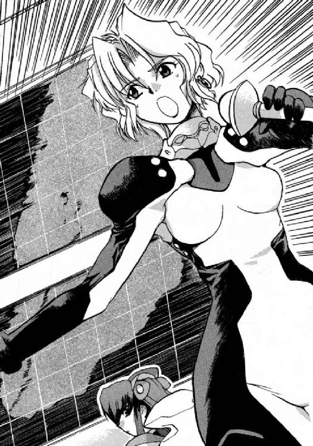
スクリーンに映しだされている敵の戦闘艦は、艦首部分の装甲が大きく熔融しており、兵器や観測器も、おそらくはパルスレーザーの照射を受けて、もとの形が分からないほどに破壊されている。
惑星国家キビの戦略防衛兵器による被害か、それとも第二護衛艦マイヅルとの戦闘によっての被害なのかは、それだけでは分からないが。
「ふ～ん、そうなんだ......」
ディータは感心したようにうなずく。
本番中の声とは違って、どことなく間延びして鼻にかかった声だった。
「それじゃあ、どうするの？」
「それは、艦長が決定することですから......」
シノンは言って、キスカを振り返った。
「退艦を呼びかけよう。そして艦は沈める」
スクリーンを見つめたまま、キスカは言った。
「応じると思うの？」
「それは......、相手しだいだろ」
「応じないときは、どうするの？」
「母星に帰って修理されたら、ふたたび戦力になるんだぞ。見逃せるものか！」
憮然とした表情を見せて、キスカは言った。
「......だ、そうです」
シノンはキスカとの会話を終えて、ふたたびディータに向き直る。
「降伏を呼びかけて、応じなかったら破壊するってことね」
了解の合図を、シノンに送り返して、ディータは頭のなかで、放送用の台詞にまとめなおそうとする。
しかし、そのとき、
「──傷ついた敵を攻撃したら、こっちのイメージが悪くなるだろうが！」
小型スピーカーが内蔵されたピアスを通して、『スターシップ・チャンネル』のプロデューサーであり、番組『スターシップ・ライブ』のディレクターも兼ねるピーター・スパイクスの怒鳴り声が流れでてきた。
「契約者が伸び悩んでいるって、本社からクレームがきてんだ。あくまで正義の味方を演じろと、ガキどもに言え！」
「ＯＫ、ボス......」
ディータは神妙な声でマイクに答えると、彼女のために用意された可動式の補助席に腰掛けて、艦長席に近寄ってゆく。
無重力環境下では、そのほうが安全で確実だからである。そして各座席は、緊急時には宇宙服と直結して、生命維持装置や船外活動用のバックパックともなる。多機能で高価な座席なのだ。
「今は、第二級戦闘配備です。艦長には、直接、話しかけないでください」
シノンはあわてて言ったが、〝艦長〟は小さく首を縦に振って、許可を与える。
「キスカくんさぁ、傷ついて逃げようとしている敵を追いかけて破壊なんかしたら、あなたたちのほうが悪者だと思われちゃうのね。それって、あなたたちにとっても、本意じゃないでしょ」
鼻にかかったような声で、ディータはキスカに言った。
「これは、戦争なんですよ。しかも侵略者は相手のほう......」
その言葉を聞いて、シノンは顔色を変えたが、艦長を務める防衛大学宇宙兵科第七三期生首席は、視線で彼女を制した。
「銀河ネットに協力してもらっている理由は、この艦を運用するための資金を提供してもらうことと、僕たちの戦いの正当性を全世界の人々に理解してもらうためだ。ここは彼女の提案に従うしかない」
「──貴艦の奮闘を讃えるとでも、通信を送ってやれ」
ディータの耳もとで、スパイクスの声がふたたび響く。
ディータは肩をすくめながら、艦長を務める若者に、番組側の意向を伝えた。
「分かりました......」
キスカはうなずくと、事の成り行きを静かに見守っていた主任通信員の氷坂アレイに向かって、通信の指示を与えた。
「貴艦の奮闘に敬意を表する。ふたたび、戦場でまみえんことを──」
「了解しました」
アレイは特徴のあるハスキーな声で答えると、通信文を手早く作成する。
それから、キスカを振り返って、
「そのときは、ぶっ殺す──と通信文に加えてよろしいですか？」
と、真顔で許可を求めた。
「魅力的な提案だけどな......」
怯えたような表情をわずかにのぞかせて、キスカは言った。
そして救いを求めるように、ディータの顔を見つめる。
「今の発言、問題ないですか？」
ディータは、通信管制室のスパイクスに確認を求めた。
「──おもしれぇが、番組ははじまったばかりだからな。今回は、報道っぽくいこうや。今の発言は、編集でカットしておくからリテイクは要らねぇ。その後、欲しいカットの指示出しするから、それまで待機しててくれ。それから、艦長補佐の姉ちゃんに、あんまりでしゃばるなって、釘を刺しとけよ。戦争してるのは、こっちも同じなんだ」
「ＯＫ、ボス......」
銀河ネットワークには、ＴＶチャンネルだけでも何千とあり、毎月その何割かは打ち切りの憂き目を見る。
生きるか死ぬか、まさに戦争なのだ。
ディータは香月シノンのところへ座席を移動させ、微笑みを浮かべながら、彼女の肩を叩く。
「シノンちゃん、ＴＶだからって、はりきりすぎないでね。普通にしてても、あなたの魅力は間違いなく視聴者に伝わるから」
「どういう意味ですか？」
ディータの物言いは穏やかだったが、その言葉の真意を瞬時に理解して、シノンは顔を真っ赤にしながら、彼女を睨み返す。
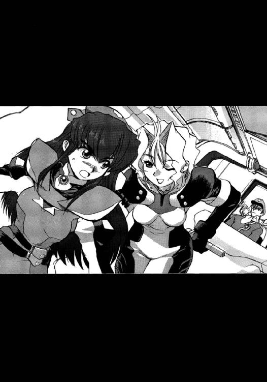
しかし、その視線をディータは柔らかな微笑で受け流した。
「それは、あなたが考えてよ。頭いいんだから」
「......分かりました」
制御盤の下でかたく拳を握りしめながら、シノンはうなずいた。
（なんで、わたしがこんな思いをしなきゃなんないのよ）
彼女は最初から、すべてに反対してきたのだ。
惑星国家キビの第三護衛艦となるはずだったこの宇宙戦闘艦を買い取ったことも。
その代金と運用費用を稼ぐために、銀河ネットワークと契約したことも。
そして、数十隻もの戦闘艦を擁する〝王国〟に戦争をしかけるということも。
（さっさと降ろしてよ！）
命があるうちにと、シノンは心のなかで叫ぶ。
（防衛大学になんて入るんじゃなかった......）
彼女が欲しかったのは学歴と奨学金、そして資格だけだった。
卒業したら入隊は辞退するつもりでいた。母星キビからも、ヘンリエッタ星域からも出て、星間企業に就職しようと思っていた。
ひそかに就職活動をし、いくつか内定ももらっていた。
それなのに......
彼女は今、戦いのまっただなかにいる。それも、勝利は絶望的とも言える戦いの......
（わたしはこんなに若くて、優秀なのに！）
おまけに、まだ処女だと、心のなかで続ける。
しかし、彼女の心の叫びは、誰にもとどかない。
そしてそのときにはすでに、彼女が乗り組んでいる宇宙艦が曳く光の航跡は、数百万キロメートル彼方に設置された光学観測衛星によって、捕らえられていたのである。
３
「──番組ではただいま協賛を募集しております」
「──長期契約のあなたには、特典として一カ月分の視聴料を、なんと無料に！ 今が契約のチャンス」
「──深海魚の運動にヒントを得た、まったく新しいタイプの健康器具サコファリンクス。日頃の運動不足を一日一〇分の使用ですべて解消！」
「──オペレーターの香月シノンです。低重力環境にいるわたしたちには運動不足は最大の障害。この器具を運動プログラムに取り入れてからは、カロリー消費効率がぐ～んとアップ。謳い文句だけの、他の健康器具には騙されないでね」
「──我々、自由護衛艦では艦名の募集を行っております。応募の宛先は銀河ネットワーク、スターシップ・チャンネルまで。メールアドレスはＷＷＷ──」
番組宣伝や広告がモニターから次々と流れでてくる。
その画面を見つめながら、佐竹マサラは友人の片山イアイに電話をかけていた。
画面の片隅では、自由護衛艦なる宇宙戦闘艦の艦橋の映像が映しだされている。
そこにいるのは、ディータ・ミルコフという名の金髪のレポーターの他に、二〇歳前後の若い男の艦長と三人の女性オペレーター。そのひとりは、さっきの健康器具の宣伝にも出演していた。
半端なアイドルなら吹き飛びそうなほどのルックスとスタイルだった。ネイビーブルーのレオタード姿にもそそるものがある。映像データを保存して、動画合成にかける若者は、たぶん何万といることだろう。
あとのふたりの女性オペレーターも、それぞれに魅力的だった。
栗色の髪をポニーテールにしたオペレーターは、各種の観測装置が示すデータを一生懸命に読みあげ、分析している。その必死さが愛らしく、好感を覚えた。
艦内の各区画に命令を伝達している長身のオペレーターのクールな表情とハスキーな声にも、ぞくりとさせられる。
十数回めの呼び出しで、イアイがようやく電話に出た。
「何の用だよ！」
不機嫌な声が返ってきて、マサラはこの友人が今日、下宿に彼女を連れ込んでいることを思いだした。
「モニターつけて、スタートチャンネルを見ろって。今、宇宙戦闘艦どうしの戦争をやってんだ。しかも、乗員の女がすげーいいんだ。もうすぐ戦闘がはじまる。見逃したら、後悔するぞ」
「今、アミィがきてんだ。そんなナマいもん、見れるわけねぇだろ！」
「それなら、データ保存しとけって」
「......分かったよ。睨まれてるからオフるな」
通信は切れ、受話器の表示ランプが緑から赤に変わる。
他にも、何人かに知らせようかとマサラは思ったが、警報音とともに主映像が〝番宣〟から突然、ブリッジに変わったので、画面を注視した。
「いよいよ、か......」
自由護衛艦とかいう宇宙戦闘艦と、彼らが〝王国〟と呼ぶ敵国の宇宙戦闘艦との戦いが、これからはじまるのだ。
４
「なんだ、この敵艦は？」
艦長席から腰を浮かせて、キスカは怪訝そうな声を上げる。
宇宙空間に浮かびあがる敵艦は、全長およそ三〇〇メートル。拳銃のような形状をした奇妙な艦だった。
そしてもっと奇妙なのは、小惑星とおぼしき物体を〝抱えている〟ことである。
「あんな物を繫留して、いったい、どうやって回避行動をとるつもりなんだ？」
質量が大きくなればなるほど、運動速度や方向を変化させるためのエネルギー量も大きくなる。縦長の船体も、回転能率が悪くなるため、回避に適しているとは言えない。
回避行動は速度や方向の変化が大きいほど効果的なわけだから、宇宙艦の質量は小さいにこしたことはないのである。回転モーメントも重要な要素だ。
だが、それでは性能も限られるし、武装や装甲も貧弱になるから、設計者は妥協点を見いだすのに苦労することになる。
「回避する気がないのかしら......」
画面を真剣に見つめながら、シノンがひとりごとのようにつぶやく。
しかし、キスカはその答えを冗談と受け取ったらしく、乾いた笑い声を上げただけで、彼女の意見を取り合おうともしなかった。
（すべての戦闘艦が、同じ設計思想で建造されてるわけじゃないんだから）
戦いのさなかに冗談を言うほどの余裕は、シノンにはない。
そして、次の瞬間──
「敵艦の艦首より閃光！」
緊張した声で、主任観測員の秋里ミユリが報告する。
「攻撃してきた？」
啞然とした表情を浮かべて、キスカはモニターを見つめる。
銃口にあたる部分から、光線状のものが、自艦に向かって放たれている。
「いったいなにを撃ってきてるんだ......」
「敵艦との距離、九七万五〇〇〇です。相対速度、五万七〇〇〇。双方、等速運動です」
ミユリが泣きそうな声になりながら、データを読みあげてゆく。
「九七万キロだって！ いくらなんでも遠すぎやしないか？」
キスカは困惑の表情を、隣にいるシノンに向けた。
光速で走っても、三秒以上かかる距離である。
「遠いなんてもんじゃない。この艦の最大射程の二倍以上の距離よ。現在の速度だと、わたしたちが攻撃を開始できるのは、早くて三時間後......」
攻撃されているという事実に、冷たい汗が滲むのを意識しながら、シノンは答えた。
そして三時間ものあいだ、この攻撃は続くということだ。
「閃光の種類から、敵の武器は特定できない？」
なんの指示も出せなくなったキスカに代わって、シノンがミユリに訊ねた。彼女とは幼い頃からの友人で、ほとんど姉妹のような関係にある。
「......光源の種類は、金属元素の電離気体みたいですね。光度はそれほど強くはありませんが、パルス状に放射されています。周期は、毎秒二〇......」
「軌道式電磁加速砲ではないでしょうか？」
氷坂アレイが、艦長のキスカに許可を求めてからそう発言した。
「パチンコかよ！」
キスカは思わず舌打ちをしてから、オートカメラが自分に向いているのを思いだして、あわてて表情をひきしめる。
プラズマ圧によって、小型の実体弾を高速で射出するレールガンは、単純な運動エネルギー兵器ではあるが、その破壊力は決して侮れない。命中精度こそよくないが、圧倒的な連射性能でそれを補っている。
射出される弾丸の形状や大きさから、〝パチンコ〟と俗称されることもあるが、腕よりも運が頼みという点では、三〇〇年来、廃れることがなかった同名の遊技機に確かに似ている。
「光素子人工脳は、どう判断している？」
キスカの質問に答えるため、シノンはこの戦艦の全システムを制御する『ＡＥＳＯＰ（光素子人工脳）』に問い合わせを行う。
「......八五パーセントの確率でレールガンと判断しています。一三パーセントで近接防御用ビーム兵器、残りは未知の兵器だと......」
そして返ってきたイソップ（古代ギリシャに同名の賢者がいる）の助言を彼に伝えた。
「──第二艦橋射撃管制の桐生だ。氷坂候補生の意見を支持する」
「──第三艦橋航行管制、三上候補生です。同じく氷坂さんの意見を支持します」
メインモニターの副映像と音声回線を通して、ふたつある副艦橋から、桐生タカイと三上シントの二人の男性が、それぞれ意見を述べた。
それを聞いて、キスカはカメラが自分を捕らえているのを意識しながら、重々しくうなずいて見せた。
タカイとシントのふたりはそれぞれ砲術長であり、航宙長であるが、同時に副艦長の立場にもある。彼らは艦長の判断に異を唱える権利があり、またその義務があるのだ。
この自由護衛艦は三つある艦橋のうちのひとつでも生き残っているかぎり、作戦行動が可能なように設計されている。また、戦闘時以外は、それぞれの艦橋が三交替制で艦を運用することになる。
「敵艦の攻撃は、レールガンによるものと判断する。回避行動を取りつつ、主砲の射程内まで接近をはかる」
「正気なの!?」
キスカの言葉に、シノンは血の気の失せた顔を彼に向けた。
「こんな距離で、命中するはずがないからな。そのうち、弾丸が尽きるに決まっている」
「だからこそ、よ。こんな距離から発射してくるなんて、不思議だと思わない？」
「宇宙空間では、レールガンの射程距離は実質、無限だからね。弾幕を張って、大当たりを狙っているのだろう」
キスカの言葉や表情には余裕さえ感じられた。
敵艦の攻撃は、接近されるのを恐れるがゆえの行動だと判断したのだ。
そうなのだろうか、とシノンは心のなかでつぶやく。
敵は、自分たちみたいな戦争の素人ではない。人類世界で唯一と言っていい、実戦経験を持つ宇宙軍の戦闘艦なのだ。
「あなたが言うとおり、最大射程と有効射程は同じじゃない。どんな武器だって、距離が離れるほど命中精度は悪くなる。だからこそ、無駄弾を撃つ意味なんてないはずなのよ。それなのに、敵は攻撃をしかけている。何かあると考えるのは、心配のしすぎかしら」
「命がかかってんだ。心配しすぎるなんてことはないさ」
氷坂アレイが、いつになく優しい笑顔を浮かべて、声をかけてきた。
いつ命を失うか分からない状況なのに、彼女はまったく普段どおりのように、シノンには見えた。
それが羨ましくもあるが、怖いような気もした。彼女には、命知らずとの評判が教官のあいだで流れていたことを思いだす。
「しかし、慎重になりすぎて、好機を逃すこともある......」
キスカは憮然として言った。
自分が下した命令に、異議を唱えられたのが不愉快なのだ。
艦長はボクなのにと、心のなかで文句を言う。
「敵の意図がわかるまで、無理に接近するのは危険だと思う......」
シノンは主張した。
そのとき、メインモニターに副映像がひとつ開き、技術士官である結城シメイの顔が映った。
この艦に乗り組んでいるなかでは最年少で、今年一五歳になったばかり。だが、高等数学と理論物理学の分野では、すでに天才的な才能を示しているらしい。
乗組員のなかで、光素子人工脳をハード、ソフトともにメンテナンスできるのは、彼だけである。そしてこの艦でただひとり、現職の自衛官でもある。階級は、一等宙尉。
「──敵の意図は、明白だよ」
そう言って、シメイはにこりと笑う。
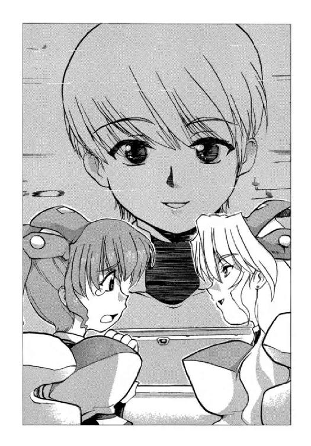
「シノンが言ったとおり、敵艦に回避の意図はない。こちらが射程圏内に入るより先に撃破する気なんだよ。だから、こんな遠距離から攻撃してくる」
「弾が尽きるまで、近寄らなければいいってこと？」
シノンは個人用モニターをシメイの映像に切り替えて、その顔を見ながら訊ねる。
「──それもどうかなぁ」
そう言って、画面のなかのシメイはわずかに苦笑を洩らす。
「──レールガンの口径はわからないけど、弾丸一発あたりの質量はたかが知れたものだしね。あの小惑星を食べつくさないかぎり、敵艦は撃ち続けてくると思うよ......」
「小惑星を食べつくすって、どういうこと？」
「──敵艦が抱えている小惑星だよ。あれは、おそらく金属の塊さ。そして敵艦には、弾丸を製造するためのプラントが搭載されているんだ」
「戦闘艦というより、宇宙砲台と考えたほうがいいってこと？」
「──敵艦の形状と戦術からは、そう推論するのが妥当だと思うよ」
シメイはそう言うと、自分の役目は終わったとばかり、回線を閉じた。
「そんな敵艦に、どうすれば対処できるんだ？」
問いかけるような視線を、キスカはシノンに向けてきた。
「回避行動を取りつつ、最大加速で突撃するというのは、どうでしょうか？」
氷坂アレイが座席から立ち上がって、提案した。反動で宙に浮かないように、片手は座席をつかんでいる。
「射程圏にさえ入れば、回避行動もしていない宇宙艦など一撃で仕留められます」
「それまでに、こちらが仕留められなければね......」
アレイの提案を聞いて、シノンはひとりごとのようにつぶやいた。
「その戦術を実行したとして、成功の確率は、どのくらいなのかしら？」
その瞬間、彼女の個人用モニターに人工脳制御室から通信文が入り、成功率二七パーセントという文字が表示された。
（シメイなの？）
シノンが画面を見つめていると、計算基準が次々と表示されてくる。
射程圏への到達時間、それまでに敵艦から発射されるレールガンの弾数、予測される被弾数と致命的な損傷を受ける確率、等々......
（親切すぎて、涙が出てきそう）
シノンは、思わずため息をついた。
（そしてこの確率に賭けるのは、わたしたちの命なのよね......）
シノンは、艦長席のモニターにだけ、シメイからの通信文を転送した。
そして指で合図して、彼に画面を注目させる。
「これが作戦の成功率か......」
それを見て、キスカはうめく。
「なにか、対策を考えないと。今の瞬間も、敵は攻撃を続けているのよ」
「分かっている......」
シノンの言葉にキスカは反射的に答えたが、対策はなにも思い浮かばなかった。
「こんな戦闘は、模擬戦にはなかった。だいたい、非常識じゃないか。弾丸を自分で製造する砲台なんて......」
「非常識かもしれないけど、有効な戦術だわ。実戦経験の豊富な〝王国〟ならではの発想ね」
そしてシノンはミユリを振り返った。
「近くに、遮蔽物になるようなものはない？」
「小惑星なら、いくつかありますよ」
「だから、敵艦は、ここを戦場に選んだのね......」
弾丸の原料となる小惑星を確保するためだ。
「しばらく、小惑星に隠れましょう。そして対抗策を考えないと......」
「分かった」
不承不承といった感じでうなずきながら、キスカは至近の小惑星に退避するよう命令を下した。
第三艦橋にいる航行士のシントが復唱し、艦の進路を変え、機関を始動させる。
無重力状態だった艦橋に、加速による重力がかかる。
センサーがそれを感知して、重力が床方向にくるように、艦橋を自動で回転させる。
（重力って、やっぱり素敵）
シノンは心の底から思った。
地球の生物は、重力の存在を当然のものとして受け入れ、進化してきたのだ。
無重力、低重力環境にいるというのは、自然に反する行為なのだ。
（それなのに......）
彼女は今、宇宙空間にいる。
絶対温度三度の背景放射と暗黒物質が満ちる真空でも静寂でもない空間に──
５
「ズガガ、ガガ～ン！」
「ピュンピュンピュン！」
「フゥルルフィ─────」
様々な効果音が、スピーカーから流れでてくる。
「どの音が、しっくりくると思う？」
放送作家のトニー・ガリアーノに向かって、チャンネル・プロデューサーでもあり、番組ディレクターのピーター・スパイクスは訊ねた。
「そうですね～」
両生類を思わせる容貌をした放送作家はしゃがれ声で答えると、サンプルのなかからいくつかの候補を選びだした。
「レールガンの発射音はこいつ、弾丸が小惑星を削っているときの音はこいつ、主砲を発射するときには、こいつでいきましょう。爆発音はいくつか用意するとして......」
ガリアーノは答えて、録画映像に効果音を乗せてゆく。
「これで、どうでしょう？」
「なんか、しっくりこねぇな」
「音響は本職じゃないですからね。勘弁してください。次回までに、本局のほうで用意してもらいましょう」
渋々といった表情ながら、スパイクスはＯＫを出した。
そして、
「まったく、宇宙戦闘艦どうしの戦闘が、こんなに地味なもんだとは思いもしなかったぜ」
と、吐き捨てるように言った。
「宇宙空間では、音は伝わりませんからね」
蛙が鳴くような笑い声を響かせて、ガリアーノは言った。
音とは、すなわち空気の振動である。宇宙空間には、原子や分子はほとんど存在しないから、音はまったく伝わらないのだ。
〝王国〟の宇宙艦は、毎分一〇〇〇発もの弾丸をレールガンから発射しているのだが、その発射音はまったく聞こえてこない。
そしてその弾丸は、この艦が遮蔽物にしている小惑星を確実に削り続け、表面を赤熱させているのだが、その破壊音もこの艦には伝わらない。
音がしないというのが現実なのだが、そのままそれを放送しても、番組としてまったく迫力が出ないし、最悪、放送事故だと文句が来かねない。
加入契約はしたものの、解約を申し入れている視聴者も現れはじめているらしい。
この艦もだが、チャンネルとしても危機的な状況である。
この艦が撃沈されれば、なにも考えなくてもいいというか、なにも考えられなくなるわけだが、たとえ、この戦闘に勝っても打ち切りが決まったら、スパイクスとしてはおしまいなのである。
（なんか、手を打たねぇとな......）
スパイクスは、心のなかでつぶやく。
彼にとって、このチャンネルをはじめたのは賭けなのだ。
成功すれば出世するし、失敗したら解雇は確実だ。
スパイクスは髪を搔きむしりながら、ガリアーノを振り返る。
「ガキどもの発言は全部、書き換えてかまわねぇ。おまえの力で、番組を盛りあげてくれ」
「まかしてください」
ガリアーノはうなずくと、艦長と女たちの会話録画を見ながら、猛然とタイプを叩きはじめた。
彼が作成した文章は、彼らの音声に変換され、放送用の台詞となる。素人を使う番組では、ごく当たり前の手法だった。
放送作家は台本を書くだけではなく、映像も台詞も、すべてを創作する能力が要求される。最新のデジタル映像技術の成果だった。
時間さえかければ、どんな素人でも、ドラマなりムービーなりを作ることができる。
銀河ネットワークには、そういう自主制作ドラマやムービーを流すチャンネルがいくつか存在している。
ガリアーノも昔は、そういう素人放送作家のひとりだったのだ。
二〇世紀末から二一世紀にかけて一時代を作ったジャパニメーションを再制作して、数年前までは大きな評価と収入を得ていたのだが、オリジナルを創りだしてからは失敗続きで評判はがた落ち、生活は借金まみれという有様である。
だからこそ、スパイクスの誘いに乗ってきたわけだが......
「彼ら、ひとりひとりに性格と役割を与えて、台詞を変えてゆきます。優柔不断な艦長と口やかましいオペレーターでは数字は取れませんからね。艦長は冷静沈着、シノンとかいう女は、大昔の日本女性の線でいきましょう」
「ありふれてねぇか」
「主人公は、それぐらいでいいんですよ。その代わり、脇に個性的なのを揃えておきます。ミス・アキサトが眼鏡をかけてくれたら、イメージなんですけどね......」
競馬の実況さながらの早口で話しながらも、ガリアーノの手は瞬時も止まっていない。馬力だけは本物だと、スパイクスも認めるところだ。
「それにしても、よく考えましたよね。遮蔽に利用した小惑星の運動方向を変えて、敵艦に直進させる。それを楯に使って、射程圏まで移動しようなんて......」
「だが、その作戦を考えたのが、艦長じゃなく、艦長補佐の小娘ってのが、な」
気に入らない、とスパイクスは吐き捨てるように言った。
香月シノンという娘は、なにかにつけて反抗的で、彼はうとましく思っているのだ。
なまじ頭がいい分、デビューしてすぐ人気の出た〝何様〟アイドルよりも扱いづらい存在だと言える。
「当然、修正しますよ。作戦を考えたのは、沈着冷静な艦長でないと美しくありませんから。そして女性オペレーターたちは、艦長が発案した大胆な作戦に驚きつつも、その有効性を認めて、命令を実行に移す──。これでどうです？」
得意そうに喋りながら、ガリアーノは先刻、艦橋で行われた四人の男女の会話を、次々に書き換えて、試写してゆく。
その映像を見ながら、
（それも、ありふれてるぜ。だから、おまえはいつまでたっても三流なんだ）
心のなかでスパイクスは吐き捨てたが、それは言葉にはせず、ＯＫの合図を出す。
放送作家のなかで、彼が仕掛けたこの賭けに乗ってきたのは、唯一この男だけなのだ。
しょせん、選択の余地は、スパイクスにはなかったのである......
６
敵艦がレールガンを射出する音と、その弾丸が小惑星を崩壊させてゆく不気味な音が、第一艦橋に響いている。
（気がおかしくなりそう......）
香月シノンは、悲鳴を上げたくなる衝動と一時間以上も戦い続けている。
番組として迫力を出すためだと、レポーターのディータ・ミルコフは説明したが、科学的知識のある視聴者は、いったいなんと思うだろう。
しかし大多数の人々が、ドラマやムービーなどの影響で、効果音つきの宇宙戦闘に慣れているのは間違いないところだ。
この艦が戦っているのは〝王国〟だけではなく、メディアという大敵がもうひとつ存在していることを思い知らされる。
（まったく冗談じゃない......）
シノンは思ったが、彼女にはどうせ処置なしである。
乗員にも緊張を感じてほしいという制作側の意向とやらで、艦橋にも放送用の効果音が先刻から流されている。
その意向は見事なまでに反映されていて、シノンは手のひらから汗が滲みでるほどの緊張を覚えていた。
理性では効果音と分かっていても、感情のほうが反応してしまうのだ。
レールガンの発射音は、まるで死神の吐息のように、彼女には聞こえた。
「射程圏内まで、あと一二〇秒」
敵艦との距離と相対速度から弾きだされた数値を、シノンは読みあげる。
それは間違いなく、彼女自身の声だったが、他人が発しているような気がした。
「それまで、小惑星が保ちません！ まもなく崩壊します!!」
泣きそうな声で叫んで、秋里ミユリが艦長席を振り返る。数時間前から眼鏡をかけているので、彼女の顔には違和感を覚える。
それも制作サイドの意向なのだ。
そこまでの権限があるのなら、とシノンは思う。
（敵艦にも、あなたたちの意向とやらを伝えてほしいわ。番組のために、おとなしく沈んでってね）
シノンは心のなかでつぶやいて、〝艦長〟のキスカを振り返った。
「小惑星の陰から出ましょう。敵を正確に観測しないと、攻撃は命中しない。タカイなら、一分もあれば照準をつけてくれます」
「そのあいだに、レールガンの直撃を受けたらどうするんだ？」
「この艦の装甲を信じるしかないでしょ！」
「わ、分かった......」
シノンの迫力に圧されたように、キスカは彼女の提案を採用し、第二艦橋と第三艦橋へ指示するよう、氷坂アレイに伝えた。
「──第二艦橋、了解」
「──第三艦橋、了解」
ふたつある副艦橋から、桐生タカイと三上シントが返信してくる。
そしてそれぞれの役割を実行に移してゆく。
操縦士のシントは、遮蔽物として利用していた小惑星から艦を離脱し、最大加速で敵艦に向かって直進させる。
それと同時に、この艦のすべての観測装置が働いて、敵艦の現在地と運動方向、速度を特定してゆく。
そして数秒後には、それは完了した。
「──主砲発射準備」
自信に満ちあふれたタカイの声が、メインモニターから流れてきた。
「──電離気体媒質装塡、粒子加速用意！」
第二艦橋勤務の副砲術士若菜サンリの声が続く。
「熱いのを、ぶち込んでやりな」
メインモニターの副画面に映るタカイの顔を見つめながら、アレイがブルースでも唄うようにつぶやいたのが、シノンの耳にやけにはっきりと聞こえた。
（ぶち込んでやって）
下品な言葉であるのは承知しつつ、シノンも祈るような気持ちでそう思った。
「──自動照準装置正常に作動、手動補正よろしくお願いします」
「──手動補正も何も、敵艦は回避行動もしてないんだぜ」
タカイがサンリに答えたとおり、敵艦は等速運動を続けたまま、レールガンを発射し続けている。攻撃が失敗する要素はない。
しかし、その瞬間、艦に激しい衝撃が伝わった。
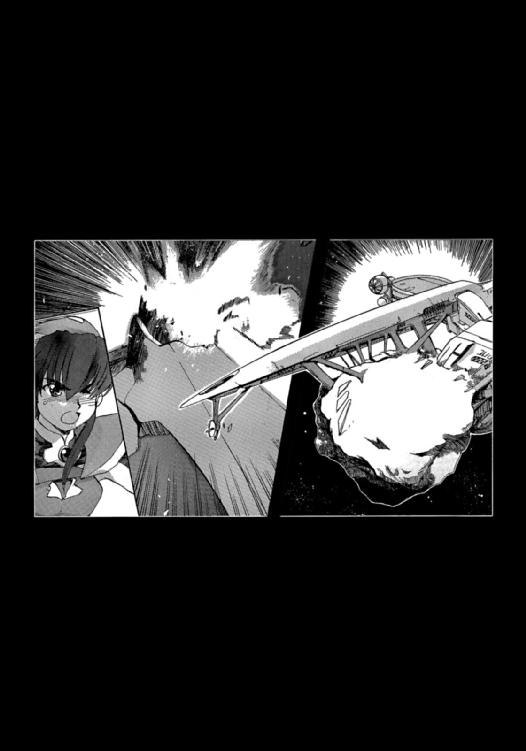
「直撃を受けたのか！ 被害は？」
キスカがあわてて訊ねてきた。
「装甲、貫徹してません！ 電磁的損傷、認められません！ でも、熱衝撃が......。着弾箇所の装甲が熔融しています」
シノンはモニターに表示される被害状況を命じられるままに読みあげた。
だが、それは艦長席のモニターにも表示されているはずなのだ。
（自分で読んだほうが早いでしょうに......）
すべてを他人にさせて、相槌を打つだけが艦長の仕事でもないし、それで威厳が出るわけでもない。
「装甲が溶けているだって！」
シノンの報告を聞いて、キスカがうわずった声を上げる。
レールガンの弾丸に与えられた運動エネルギーが、衝突によって熱エネルギーに変換されて高熱を発している。そして、その熱が、着弾箇所の装甲を溶かしているのだ。
「耐熱装甲は、この艦の売り物なんだぞ!!」
そんなことわたしに言われても、とシノンは心のなかで答える。
クレームなら、この艦を設計、建造した責任者か、造船所を経営する星間企業に言ってほしい。
だが、次の瞬間、高熱を帯びた被弾箇所が、見る見る冷めてゆくのにシノンは気がついた。その代わり、船体のあちこちから光が輝きだす映像が、損害監視専用に切り替えたシノンのモニターに映しだされた。
シノンはそれを、メインスクリーンの副映像のひとつとして映しだす。
艦橋にいる全員の視線が、その小さな映像に釘づけになる。
「きれいね......」
レポーターのディータ・ミルコフが、場違いな感想を洩らす。
「もしかして、この艦、爆発するの？」
ミユリがきょとんとした顔をしながら、誰にとはなしに問う。
「よくわからないけど、放熱システムが作動したみたい......」
シノンも自分の目が信じられないというような顔をしながら、ミユリに答えた。
被弾箇所の温度は、すでに安全なレベルにまで下がっている。
装甲板に編み込まれた熱伝導ファイバーと熱変換発光素子によって、この艦は熱的損傷を電磁波──光の放射──という形で軽減することができる。
キスカがクレームをつけようとした〝売り物〟の耐熱装甲が真価を発揮したのだ。
「最新鋭艦の看板に偽りなしだな」
氷坂アレイはそう言って、微笑を浮かべながら目の前のモニターを軽く拳で小突く。
その後も、自由護衛艦はレールガンの直撃弾を数発、受けたが、観測装置のひとつが機能を停止しただけで、残りはすべて装甲が受け止めた。
「──主砲射程圏内まで、あと一〇秒！ 九、八、七、......」
被害状況の監視に入ったシノンに代わって、第二艦橋のサンリが秒読みを行う。
「──主砲、発射許可を求める」
「許可を与える」
もったいぶった口調でタカイの要請に答えて、キスカは艦長席の制御盤に指を走らせ、主砲の安全装置を解除するための一連の手続きを行う。
主砲の発射態勢は、すべて整った。
「──射程圏内まであと四秒！ 三、二、一。到達しました!!」
「──主砲、発射!!」
タカイは高らかに叫ぶと、四六〇〇ミリの口径をもつプラズマキャノンの発射トリガーを引いた。
その瞬間、轟音──それは、発射トリガーに連動して流された放送用の効果音だったが──が三つある艦橋のすべてに響き、主砲の発射口から、白熱するプラズマ球が、敵艦に向かって亜光速で走ってゆく。
そして、数秒後に、敵艦の艦首を直撃した。
閃光がメインスクリーンを満たし、やはり放送用の効果音である爆発音が艦橋内に流れる。
「──命中確認！」
サンリの震える声が響いた。
「──レールガン、沈黙しました!!」
その言葉を聞いて、シノンは胸に手を当てて、深くため息を洩らした。
「なんとか、生き残れた......」
しかしそれが、とりあえずでしかないことを彼女は知っていた。
〝王国〟は、まだ何十隻という戦闘艦を擁しているのだから。
戦いはまだ、はじまったばかりなのである。
７
三六インチのマルチモニターの画面に映っているのは、〝王国〟に所属する宇宙艦の最期の姿だった。
装甲は真っ赤に熔融し、船体の各所で小爆発が繰り返されている。
合成された効果音が、流されている。タイミングがずれているあたりがお笑いだが、それはかえって、生放送ならではのリアリティを感じさせた。
自由護衛艦の光学観測器に直結された映像であると、金髪のレポーターの興奮ぎみの声が響く。
（彼女らも今、オレと同じ映像を見ているんだ......）
そう思うと、佐竹マサラの胸は熱くなる。
自由護衛艦の乗員たちは、自分とまったく同年代。そして同じ日本人の血が流れている。
それが、一五〇〇光年の彼方で、命がけの戦争に臨んでいるのだ。
副映像では、自由護衛艦の第一艦橋の様子が映しだされている。
撃沈を確信して、若い艦長は得意そうな表情で、艦長補佐の女性に握手を求めてゆく。
ぎこちない笑みを浮かべてそれに応じてから、健康器具の宣伝に出ていた女性オペレーターは移動座席を操作して、観測係の同僚の側に寄ってゆく。そして眼鏡をはずして涙をふいている栗色の髪の娘の肩に優しく手を回した。
長髪の通信員は、モニターの映像をじっと見つめながら、小さく唇を動かしている。祈りの言葉でも捧げているのだろうか。
（五〇〇〇円は高くない）
マサラは思った。
「──これはドラマではありません。演習でもありません！」
女性レポーターが、番組の締めくくりに入っている。
「そのとおりだ......」
マサラは声に出してつぶやく。
本物だからこそ、これほどの興奮が味わえたのだ。
結末は誰にも予想できない。
彼らの艦が撃沈され、放送が終了するという可能性さえある。
そして、そのときには、艦に乗り組んでいるオペレーターの娘たちも戦死しているということだ。
そう思うと、涙がこみあげてくる。
（彼女らを、殺してはいけない）
心の底から、マサラは思った。
（そのためには、この戦争を終わらせるしかないんだ......）
日本政府はなにをやっているんだ、と思う。
政府の首脳は、ヘンリエッタ宙域での戦争に関してだけは、まるで二〇世紀末から二一世紀初頭にかけての虚無政治の時代に逆行したかと思うほど、無策だった。
また、それだけ、国民の関心も薄かったということだ。
しかし、日本民族が国民の九五パーセント以上をしめる惑星国家キビ──その国名は日本の古代国家に由来する──が征服されたことで、国民の世論にもようやく火がつきはじめている。
この番組はきっと話題になる。そして政府としてもなんらかの見解を示すはずだ。日本は拒否権こそないが、国連安全保障理事会の常任理事国であり、五隻もの宇宙戦闘艦を国連軍に派遣しているのである。
その影響力は、決して小さくないはずなのだ。
マルチモニターには、沈みゆく敵艦の映像を背景に、チャンネルの放送予定がテロップで流れでている。
今の戦闘の編集版が、毎日、朝夕にリピート放送される予定になっていた。その合間に、宇宙と戦争に関係した専用番組がいくつか企画されている。そしてニュースや天気予報。提携番組も意外に人気のモノが揃っていた。
オンラインショップやデータ放送も、おいおい充実してゆくとある。
サブチャンネルもいくつか企画されていて、自由護衛艦の艦内の様子が、二四時間モニターされるようだ。
当然、戦闘ということになれば、番組は切り替わって、生放送になるに違いない。
マサラは、マルチモニターの端末をひっぱりだして、とりあえず二四時間のデータ保存を指示した。
いつ、戦闘が起こっても見逃さないために......
そして、マサラには当然、知りようはなかったが、一五〇〇光年の彼方では、次の戦闘はすでにはじまっていたのである。
自由護衛艦に搭載されている中性微子検出器と重力波検出器が、激しい反応をとらえていたから......
それは、新たな宇宙艦の〝出現〟によって生じる特徴的な現象であった。
オペレーション２ カウント・ダウン
１
西暦二二九九年一二月八日 ヘンリエッタ星域内宇宙空間──
「跳躍推進、完了。出現座標は......」
香月シノンは落ち着いた声で、規定どおりの報告を行う。
そして目の前にある制御盤を手早く操作して、やはり規定どおりの確認作業をこなしてゆく。
艦体、運行システムとも異常はまったくなかった。
数光年の距離を一瞬にして跳躍したとは、信じられないほどだ。無数の中性微子が艦体を、そして自分たちの身体を貫いたはずだが実害はまったくない。
しかし、このときに発生するニュートリノ爆発を探知することによって、恒星間宇宙船の出現を探知することが可能となる。この新型戦闘艦にも、チェレンコフ型素粒子検出装置が搭載されている。
他にも一〇メートル級の光学望遠鏡が四器、重粒子加速器が二器、レーザー干渉式重力波検出器など、二〇世紀の物理学や天文学者が見たら、涎が出そうな実験・観測装置が、この艦には搭載されている。
もしも戦争がはじまらなければ、この艦は実験・観測艦として、学術研究のための航海に出る予定である。
だが、それはただの名目でしかないことは、この艦に乗る誰もが知っていた。
多数の実験・観測装置を搭載しているのは、単独での軍事行動を可能にさせるためである。二〇年前に廃艦となった第一護衛艦クレ、それに替わって就航した第二護衛艦マイヅルとは異なり、第三護衛艦となるはずのこの戦闘艦は、敵国への侵攻を前提として設計されているのだ。
そして戦うべき〝敵〟もすでに存在している。
ヘンリエッタ星域惑星国家同盟──俗称〝王国〟である。
ヘンリエッタ星域にある一三の惑星国家が、現在、王国に属している。その大半は進んで加盟したのではなく〝征服〟されたのだ。
そして王国は、侵略の手をさらに広げようとしている。
それに反抗しているのは、およそ三〇年前に発足したヘンリエッタ星域自治連合に加盟している二〇ばかりの惑星国家。王国よりも、連合のほうが結成は古い。
シノンの母国、惑星国家キビも連合に加盟している。
しかし、王国と戦うべき、連合に加盟する国々の足並みは、お世辞にも揃っているとは言えない。
もともとが、地球本星に対して経済的、軍事的に独立色を強めてゆくための連合だっただけに、星域内から侵略が行われることは想定もしていなかったし、それにどう対処するかの取り決めもされてなかった。
それでも、王国の侵略が最初に行われたとき、侵略を受けた惑星国家パルミアの近隣の連合加盟国は、協力して四隻の宇宙戦闘艦を派遣した。パルミアが保有していた戦闘艦を入れると合計五隻となる。
かくして西暦二二九一年九月一六日。王国宇宙軍三隻対連合宇宙軍五隻の宇宙艦隊戦が行われたのである。
それは人類史上初の宇宙戦闘でもあったのだが、結果は王国の圧勝に終わる。
連合軍の五隻の宇宙艦は全滅、王国軍は二隻が小破したのみ。
このパルミア宇宙戦に関しては、軍の専門家から、マスメディアの評論家、さらには素人の軍事マニアまで、こぞって研究対象としているが、明確な分析はいまだにされていない。
王国の戦闘艦二隻は新造艦であり、抑止力としてではなく、実際の戦闘を目的として設計されていたということ。
王国軍の提督オーギュスト・ペリエの指揮能力、艦隊の連携や乗員の士気の違いも指摘されている。
その一方、ただ単に運がよかったとの説もある。
宇宙艦どうしの戦闘では、最初に攻撃を命中させられるかどうかが、勝敗の大きな鍵を握っていると言われている。そして攻撃が当たるかどうかは、乗員の練度もさることながら、運の要素が強いのだ。
何十万キロも離れた敵と光速、亜光速兵器を撃ち合うわけだから、それも当然かもしれない。
勝敗の要因がなんであったかはともかく、その結果は王国と連合の運命を左右することになる。王国は惑星防衛の唯一の戦力である戦闘艦を失った五つの惑星国家を降伏させ、惑星国家同盟に加盟させる。そして新たに三隻分の戦闘艦の建造費を供出させ、二年後には合計六隻の宇宙艦を保有するに至ったのだ。
それでもまだ、連合側は保有艦艇の数では圧倒していた。しかし、どの惑星国家も高価な戦闘艦を失うことを恐れ、動くことができなくなった。
しかも戦闘艦が母星を離れれば、その隙をついて王国の戦闘艦が侵攻してくるかもしれないのである。
自国の惑星軌道上に、敵の戦闘艦がやってくるような事態にでもなれば、その国は征服されたも同然である。
地上からでは宇宙戦闘艦を撃破することは不可能に近く、いっぽう戦闘艦のほうは地上の都市を簡単に廃墟にできるのだから。
王国には、守るべき惑星国家は実質、王都とも言うべきスパルタひとつしかない。母星防衛に一隻を残したとしても、最大五隻もの戦闘艦を、王国は自在に派遣できたのである。
母星を防衛する戦闘艦の他に、侵攻用の戦闘艦を保有するということは、人類世界の辺境に位置するヘンリエッタ星域の惑星国家にとっては財政的に極めて厳しかった。
だが、ある意味で、それは祝福なのだ。
二〇世紀以降、兵器の技術革新はとどまるところがなく、一時期は人類絶滅の危機さえもたらしたのだが、最終的には思いもかけない恩恵となったのである。
すなわち、兵器が非常に高価になり、戦争そのものが割に合わなくなったのだ。
地球本星の国連宇宙軍でさえ、保有している宇宙戦闘艦は五〇隻あまり。
一隻あたりの建造費は、国際基準通貨のひとつである日本円に換算して、兆の単位。当然、維持費もそれに相応して高額なものとなる。
こんな高額の兵器を戦争で消耗させていては、国家財政は簡単に破綻してしまう。それゆえ、宇宙戦闘艦を保有していることが、十分な抑止力と成り得た。
紛争解決の手段として、戦争は高くつきすぎるということである。
人口にして数百から数千万人ほどの惑星国家は、一隻の宇宙戦闘艦を保有するのが精一杯であり、またそれで十分であるはずだった。
二一世紀以降は、大規模戦争のない時代がずっと続いていたのだから。
経済と情報とが国家の枠組みを超えたこともあって、大規模戦争はもはや二度と起こらないと大半の人々が考えていた。
おそらく今も、そうだろう。
ヘンリエッタ星域における戦争も、他の星域で暮らしている人々にとっては、地域紛争でしかない。
だから、国連も宇宙軍を派遣しようとしない。
ヘンリエッタ星域自治連合は、地球からの実質的な独立を標榜していたこともあり、国連はその初期においては王国擁護の立場さえ取っていた。
もっとも、王国が二〇隻を超える戦闘艦を保有するに至って、国連の態度は微妙に変化しだした。その軍事力が国連軍にとって、脅威となってきたからである。
しかし、王国も心得たもので、彼らが今も主張しているのは、地球からの独立を目指す自治連合の企てを阻止するというものだし、国連安保理の常任理事国に対しても十分な政治工作を行っている。
ロシア、中国のふたつの常任理事国は、現時点でも王国擁護の態度を変えていないし、フランス、インド、アラビア連邦は静観の姿勢を貫いている。
王国脅威論を唱えるのは、アメリカ、イギリス、ドイツ、日本などだが、非難決議を出すのが精一杯で国連宇宙軍の派遣を実現させるにはほど遠い状況だ。
国連の組織そのものが二〇世紀からさほど変わっておらず、この宇宙時代に対応できていないことをいみじくもさらけだした格好だった。
新しい国際機関の必要性を説く声は一〇〇年以上前からあるのだが、大国の思惑が一致せず、なかなか実現していない。
その間にも、王国はヘンリエッタ星域における戦争を継続している。
王国の〝領土〟となった惑星国家はすでに一二を数えている。領土といっても、惑星国家それぞれの統治権は認めている。
王国が要求しているのは、軍事力の放棄である。
そして王国が防衛を代行し、惑星国家には防衛費の拠出を要求する。しかし、その金額は、王国の領土となる前の軍事費より何割も少ないのだ。
そして領土となった惑星国家で行われている不正について、王国は独自に調査を行い、報道官を通じて〝発表〟する。
法的措置を取る権限は王国にはないわけだから、その発表をどう受け止めるかは、惑星国家の判断に委ねられている。
王国はただ、警察、司法に公正さを期待すると声明するのみ。
自浄作用を失った惑星国家の政治に対し、王国は監視者という役割を積極的に果たそうとしているわけだ。
（ヘンリエッタ星系の惑星国家が成立してから、一〇〇年。政治の腐敗が起きても無理はない。国民はそれに不満を感じているから、王国の支配を歓迎している住人も、決して少なくはない......）
ワープ終了後の確認事項や、目的地への相対速度の確認などを規定どおりにこなしながら、シノンは思った。
王国は、決して邪悪な覇権国家ではないのだ。
しかし、それは今はまだ、というだけでしかない。王国の統治機構も、そう遠くない将来、かならず腐敗するはずだ。
そのときには、小説や映画に登場するような銀河帝国が成立するかもしれない。
少なくとも、キビの国民の多くは、そう考えている。そして、王国と対決する方向で、世論は動いている。
だからこそ、莫大な国債を発行してまで、敵星系侵攻用にこの戦闘艦を建造したのだ。
今、この新造戦闘艦は、最終の試験航海のさなかにある。
同時に、シノンたち防衛大学宇宙戦科第七三期生の航海実習も兼ねている。
平時では考えられないことだが、第二護衛艦マイズルに練習艦としての任務を与えるような状況ではないのである。
先日、キビの戦略防衛システムが、王国に属する惑星国家所有の貨物船を撃沈させるという事件が起きてしまったからである。
識別信号も出さず、しかも事前通告なしに、星系内にワープしてきた貨物船のほうに非があると、キビの惑星政府は主張している。王国は侵略の口実をつくるために、わざと貨物船が沈められるように工作したのだ、と......
おそらく、キビ政府の主張は正しいはずだ。
だが、王国は、貨物船がキビ星系内で沈められたという事実のみを問題とし、非難の声明を出している。そして、政府首脳の退陣ならびに、高額の損害賠償を要求してきている。
まさに、一触即発の状況なのだ。
しかし、新人の育成も、航宙自衛隊にとっては重要事項である。
そこで今回の決定となった。
第三護衛艦となるはずのこの戦闘艦には、現在、造船所の技術者、現職の航宙自衛官、そして防衛大学生が乗り組んでいる。
平時の定員の三倍以上の乗員数だが、巨大な宇宙艦だけに余裕はまだまだある。シノンたち防衛大学の学生──航宙自衛隊幹部候補生──が、食堂などで集団生活すればいいだけのことだ。
その試験航海にして航海実習も、あと一〇日ほどで終わる。
シノンたちにとっては教官でもある現職自衛官や、造船所の技術者たちの様子を見ているかぎり、大きな問題点が発生したようには思えないから、いったん造船所へと戻って最終調整をしたあと、惑星国家キビの航宙自衛隊が受領するという運びになろう。
そして母国へと帰り、王国との戦いに備えることになる。
あくまでも噂だが、ヘンリエッタ星域自治連合に加盟するいくつかの惑星国家が、キビと同じように侵攻型の宇宙戦闘艦を建造しており、それらと艦隊を組んで、この第三護衛艦は王国の艦隊と戦うことになる。
惑星防衛ではなく、敵星系へ侵攻する形で、だ。
（でも、そのときに、わたしがこの艦に乗り組んでいることはない）
今、この艦に乗っている現職の自衛官たちが、おそらくは乗員として配属されることになるはずだ。
第七三期生からもひとりかふたり、選ばれるという噂は流れているが、シノンはそれをまったく信用していない。
受領してすぐにも実戦に投入されようかという戦闘艦に、素人同然の人間を乗せるほど、航宙自衛隊の首脳は無能ではないはずだ。
たとえ、その噂が本当だったにしても、シノンには無縁の話だ。なにしろ、彼女は航宙自衛隊への入隊を拒否するつもりでいるのだから。
入隊したところで、王国に降伏するような事態にでもなれば、自衛隊は解散となる。そして今や二〇隻を超える宇宙戦闘艦を保有する王国に、戦争で勝てるはずがないと思っている。
すぐに倒産すると分かっている企業に、就職するようなものなのだ。
「......点検終了、全艦異常なし」
心のなかで深刻な問題を考えながらも、シノンはそれを表情にはまったく見せず、この艦の実質的な艦長の立場にある初老の自衛官に向かって、最終報告を行った。
「香月候補生の声は、聞いていてとても気持ちがいいな......」
防衛大学宇宙戦科第四二期首席卒業のエリート自衛官、五島宙将が、穏やかな笑みを浮かべながら、声をかけてきた。
「恐縮です」
シノンはしかし、真顔でそう返事をするにとどめた。どういう意図でそんなことを言ってくれたのかは分からないが、今は訓練中である。
教官でもある現職自衛官に対して、気軽に応じるわけにはゆかないのだ。
「まるで、デジタル音声の案内を聞いているようだよ」
五島宙将はそう言って笑うと、おもむろに制御盤を叩いて、モニターに視線を走らせる。
（からかわれたのかしら......）
シノンは怪訝に思いながら、五島宙将の顔をじっと見つめる。
デジタル音声というのは、ずいぶんな言いようだが、特徴のない声だとは自覚している。友人とカラオケをしていると、よく指摘されることだ。
彼女としてはただ、メロディどおり、リズムどおりに唄っているだけなのだが。
「第七三期首席入学、現在の席次はほぼ平均......」
「申し訳ありません......」
シノンはわずかに顔を赤らめながら、うなだれる。
「一般教養の成績は抜群。実技と専門の成績が、ひどいものだな」
艦長の言葉に、第一艦橋に乗り組んでいる現職の自衛官と、二人の同期生が皆、忍び笑いを洩らす。
「適正がなかったみたいです......」
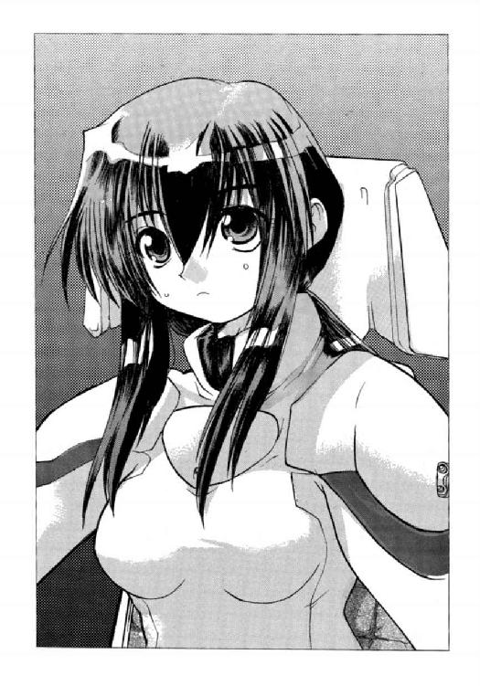
シノンは自分の座席のコンソールを見つめたまま、小声で言った。
別に恥ずかしいとは思っていないが、自慢することでないのは確かだ。
実技で致命的なミスをしでかして（あくまでもシミュレーションだが、宇宙港と宇宙艦の双方を大破させてしまったため）航宙士の資格は取れなかったし、船外作業員の資格は（宇宙遊泳などしたくもなかったので）最初から選択しなかった。
技術者になる気はまったくなかったし、高等数学に適正がないことは、入学する時点で自覚していた。通信士の資格は取ってはいるが、同期生のほとんどがその資格は取得している。
科学士官にも技術士官にも適正はない。航宙士や砲術士の資格もない。船外作業も行えない。
これでは、たとえ宙自に入っても、シノンが宇宙戦闘艦の乗員に選ばれることは、絶対になかっただろう。
また、そのように学科を選択したし、正直に言って、手を抜いた学問もある。
（お父ちゃんなら、たぶん首席で卒業できただろうけど......）
なにをさせても抜群の才能を見せる父親から、半分の血しか受け継いでいないことを、シノンはあらためて意識した。
しかし、そのことに後悔はない。
だからこそ、自分は実社会に適応できると、思っているからだ。
「宇宙戦闘の模擬戦と、戦史研究の成績はすごくいいな」
「ゲームは得意なんです。それと記憶力には自信がありますから。惑星国家キビの歴代首相はもちろん、日本本国の首相の名前まで全部、言えます」
ゲームは父親と遊んでいたら自然に強くなった。
記憶力はいいというか、覚えることで苦労した経験がないといったほうが正確だ。
学校では約三と教えられる円周率の正確な値も五〇〇桁ぐらいは軽く言える。
子供の頃、超越数という概念が理解できなくて（そしてなんとなく許せなくて）、小数点以下の数字を調べたことがあったのだ。
しかし、その後、虚数の存在を知り、シノンは自分の敗北を認め、すべてを受け入れるつもりになった。同時に、自分が高等数学を究められない人間であることを自覚した。
「首相の名前など、覚えていても、なんの役にも立たんな。携帯端末で調べたら、すぐに分かるのだから......」
五島宙将は、呆れたという顔をした。
「自分でも、そう思います」
シノンは相槌を打った。
そんなことは、自慢でもなんでもないのだ。
しかし、暗記しているのは、実はそれだけではない。
アメリカ合衆国の歴代大統領の名前も言えるし、全惑星国家とその首都の名前なども諳じている。
別に丸暗記を趣味にしているわけではないのだが、覚えてしまったものはしかたがないのである。
全部、中高等学校の教育が悪い、と自分では思っている。
「それで入学時には首席だったわけか......」
「銀河ネットのトリビア・チャンネルに出たら、賞金王になれるんじゃないかなって、自分でも思います」
シノンが冗談めかして言うと、五島宙将だけでなく、第一艦橋にいる全員が笑い声を上げた。
「宙自に入隊するより、そのほうが一〇倍は儲かるだろうな」
五島宙将は、笑顔のままで言った。
「しかし、香月候補生は案外、最高の艦長になれるかもしれないぞ。それから、もうひとつ......」
「もうひとつ、なんでしょうか？」
シノンはさすがに気になって、初老のエリート自衛官に訊ねた。
「最低の秘書だよ。わたしがキミの上司なら、少なくともそう思うだろうね」
２
「五島宙将ずいぶん、手厳しかったよね」
重力区画の廊下を並んで歩きながら、栗色の髪をした小柄な娘が、香月シノンに話しかけてきた。
秋里ミユリ──シノンにとっては幼なじみでもあり、防衛大学の同期生のなかでは一番の親友だった。
彼女も先刻、第一艦橋に勤務していたのだ。
彼女が担当していたのは、主任観測員の任務。彼女はそのための資格をいくつも持っているし、適正もある。シノンが担当していた艦長補佐の任務は、要するに艦長の秘書みたいなものだ。
そしてその上司ともいうべき人物から、最低の秘書との烙印を押されてしまったわけだ。
シノンとミユリは、食堂に向かって歩いている。
同期生の女子は全員、そこで寝泊まりしているのだ。ちなみに男子は、倉庫に押し込められている。
「玩具にされた気分だわ......」
さすがに憮然とした表情をしながら、シノンはぶつぶつと言う。
「でも、悪意は感じられなかったよ」
「悪意があると思ったら、その場で泣いてみせたわよ。そしたら、きっと満足したはずだもの......」
「シノンって、そういうの得意だものね。相手が求めているとおりに演じてみせるの」
にこにこと笑いながら、ミユリはシノンに言う。
「あらたまって、言われたくはないんだけど......」
シノンはミユリに苦笑を返したが、身に覚えがあるので、反論はできなかった。
「でも、それが処世術ってものでしょ」
ミユリに向かってというより、自分自身に向かってシノンは言った。
「シノンは、やっぱり入隊しないつもりなのね......」
寂しそうな表情を浮かべて、ミユリはシノンに言った。
「戦争ゲームは嫌いじゃないけど、ううん、だからこそ本物の戦争は嫌い。ゲームのユニットが、本物の人間だと思うとね」
防衛大学に入学してから、シノンは銀河ネットワークのオンラインゲーム・チャンネルに加入し、いくつかのオープン・トーナメント・ゲームに参加して、優勝している。
実は、トリビア・チャンネルにも加入していて、一〇週勝ち抜いて一〇万ドルを仕留めたこともある。
五島宙将に言ったのは、つまり、冗談ではなかったわけだ。
しかし、そういった事実を知っているのは、今、隣にいるミユリだけ。家族にも言っていない。ただ、家族へ毎月、送金している金額は、防衛大学で支給される俸給の倍にしてある。
それでも、シノンの銀行口座には、かなりの残高がある。それは、防衛大学を卒業したときに、免除されていた学費と俸給の一部を返還するために残してあるのだ。
「卒業したら、離れ離れになるんだ......」
ミユリがぽつりとつぶやく。
その言葉に、シノンは胸の痛みを覚えた。
「しかたないわよ。これまで一緒だったのは、たまたま進路が同じだったからなんだもの......」
ミユリが防衛大学に入学したのは、ある目的があってのことだ。
しかし、シノンにとっては学費が免除されることと、必要な資格を取得すること、なにより自分の優秀さを証明するためでしかなかった。
ヘンリエッタ星域のような辺境の人間が、地球に本社を置く、星間企業に就職するというのは、かなり難しいのだ。
防衛大学宇宙兵科卒業という履歴は、就職のとき極めて有利になる。
実際、シノンは履歴書を送付し、簡単な面接をしただけで、いくつかの星間企業から内定をもらっている。
「ミユリは、夢があるからいいよね。わたしはそこそこお金を儲けて、いい男を見つけたら、さっさと結婚するつもり。そのためには、いい企業に入るのが、いちばんだから......」
「そんなこと言って、男子のあいだでは、この艦の装甲よりも硬いとか評判だよ」
「興味ないわけじゃないけど、彼らとは進路が違うんだもの。恋愛したって、あとが続かないでしょ。だったら、意味ないもの......」
「意味ないって、恋愛ってそんなもんじゃないと思うけどな」
ミユリが不満そうに唇をとがらせながらつぶやく。
「わたしのことより、ミユリのほうはどうなの？ この航海のあいだに、卒業パーティの相手を見つけるとかはりきっていたけど」
「ここだけの話だけどね、木下二尉に告白されたの。キビに帰ったら、食事でもどうですか、って......」
ミユリはそう言うと、恥ずかしそうに両手で頰を押さえる。
まるで子供のような反応だが、彼女の場合、それが全然、不自然に感じられない。
「木下二尉ね......」
問題の人物は、二〇代後半ぐらいの機関士である。
機関制御室に配属されたときにシノンも指導を受けたが、さほど強い印象は受けなかった。
「それで、ミユリはどう答えたの？」
「趣味じゃなかったから、ごめんなさいしたよ。あの人、真面目そうに見えるけど、けっこう遊んでいるって思う。たぶん、他の女子にも声をかけてるんじゃないかな」
ミユリは平然と言ってのけた。
「全然、そうは見えなかったけどな......」
でも案外、ミユリの言うとおりかもしれない、とシノンは思った。
兄弟がふたりいることもあって、彼女は自分よりよほど男を見る目がある。
シノンがよく知っている男性は自分の父親だけで、しかもその人物は、普通の男の人と比べるには向いてないときている。
「やっぱり、男の人のことを考えるのは卒業してからにするわ」
「卒業パーティは、どうするの？」
「いざとなったら、お父ちゃんにお願いするわ。嫌とは言わない人だから」
「それ、やめといたほうがいいよ......」
ため息をつきながら、ミユリが言う。
「どうしてよ？」
シノンは不思議そうな顔をして、親友を見つめる。
「その理由は、自分で考えて......」
ふたたび深いため息をついて、ミユリは一歩、先に立って歩く。
会話しているあいだに、ふたりは食堂のすぐ側までやってきていた。
最後の距離を歩き、食堂の扉を開ける。
そして、ふたりは異様な雰囲気をすぐに感じた。いつもの、やかましいぐらいの会話が聞こえない。
銀河ネットの音楽チャンネルのＢＧＭも流れていない。
食堂には、一〇人ばかりの同期の女子たちがいたが、全員がモニターに向かっていて、ニュースと思しき番組を食い入るように見つめている。
「なにかあったの......」
激しい胸騒ぎを覚えながら、シノンは同期生たちに声をかける。
「黙って！」
同期生のひとり、アンティークのフランス人形のような金色の髪をした小柄な娘が、声だけを返してきた。
間宮リオ──惑星国家キビの現国家元首、間宮総理の姪である。
他の人は、誰も口を開かない。
しかたなく、シノンとミユリはモニターに近づいて、画像と音声に注目する。
そして、ふたりは衝撃の事実を知ったのである。
「──ヘンリエッタ星域惑星国家同盟軍は、惑星国家キビに対して、一方的に宣戦を布告。先ほど三隻の宇宙戦闘艦を同星系に派遣した模様。繰り返します......」
アナウンサーが淡々とした口調で話すのを聞いて、シノンは思わず息を飲んだ。
そして、
「戦争がはじまったってこと？」
と、何度か喉をつかえさせながら、うめくように言う。
「そういうことよ。この新型戦闘艦がキビに帰還してくるのを、彼らは待つつもりはなかったようね」
青い瞳をモニターに向けたまま、間宮リオは感情を抑えた声で言った。
そのせいか、彼女の声もまるでモニターの向こうから聞こえてくるように、シノンには聞こえてきた......
３
二二九九年一二月一六日 惑星インカ軌道上──
キビ星系での宇宙戦闘は、一〇日たらずで終了した。
どのような経過で戦いが行われたのかは知るよしもないが、結果だけは王国、キビ政府の双方から発表された。
第二護衛艦マイヅル沈没。
惑星国家キビ、無条件降伏。
惑星国家キビ、ヘンリエッタ星域惑星国家同盟に加盟。
これまでに十数回行われた、王国による〝征服〟がまたも繰り返されたということだ。
その知らせを香月シノンら、防衛大学宇宙戦科第七十三期生が聞いたのは、星間企業が経営する宇宙船造船所がある惑星インカの衛星軌道上でのことだった。
さっそく王国から量子共鳴通信を使った連絡が入り、新造戦闘艦は造船所に返還するよう要求してきた。
王国の領土となった国家は、軍事力の放棄を余儀なくされる。当然、新造戦闘艦も不要ということになる。
しかし、それはただの交渉の一環で、引き取り手のなくなったこの新造艦を安く買い取ろうという王国の意図は明らかだった。
代金の半額はすでに納入されているが、残りは新造艦の引き渡しと同時に決済するとの取り決めになっていたのである。
契約の破棄に伴い、すでに納入した分が違約金として没収される。しかし、それだけの金額では、造船所は赤字のはずだ。それも、笑いごとでは済まされないほどの巨額の損失である。
そんな契約を結んだのが悪いと言うしかない。しかし、発注側が兆の単位の金を無駄に捨てるとは、考えなかったのだろう。
そして今、防衛大学第七三期生の全員が、新造戦闘艦の食堂に集まっている。
現職の自衛官たちは、すでにインカの軌道宇宙港へ移動していた。そのように退艦するよう、政府から命令が送られてきたのだ。
「オレたちは、これから、いったいどうなるんだ？」
興奮したような声で、同期生の誰かが叫んだ。
「政府は迎えの船を手配してくれるそうよ。現職の自衛官ともども、母国に送還されることになるわ......」
その声に、間宮リオが冷静に答えた。
人形のような容貌した愛らしい娘だが、彼女にはすでに政治家に必要なあらゆる知識と能力を備えている。
将来、惑星国家キビの初代の女性元首になると噂されている才女だった。防衛大学に入ったのも、祖国への愛国心が強調できるからである。
「キビへ帰った、その後は？」
「それは、みんながそれぞれに決めることね。確かなのは、惑星国家キビの自衛隊が解散になること......」
それは、すなわち就職先を失ったことを意味している。
キビ政府が今後、どのような政策転換を行うかは知れないが、現職自衛官の再就職先を探すのに追われて、とてもではないが防衛大学の学生の就職までは手が回らないだろう。
「あたし、一般大学の大学院に入ろうかな......」
寂しさと悔しさの入り混じった声で、秋里ミユリがぽつりと言った。
「それがいいと思うよ」
香月シノンは優しい声で囁き、彼女の肩に手を回した。
「戦争に負けたのは残念だけど、犠牲は護衛艦マイヅルの乗員だけで済んだんだもの。戦争がはじまるのが、あとひと月、遅れてたら、みんなのなかからも、戦死者が出たかもしれない......」
その後、しばらくのあいだ誰もなにも言うことができず、何人かがすすり泣く声だけが、やけに大きく響いた。
無言で、ミユリが抱きついてくる。
シノンも彼女を抱き返しながら、わずかに目に涙を滲ませた。
「それにしても、なめられたものだよな。オレたちより先に現職の自衛官から退艦させたのは、逆の順番だと、自衛官たちがこの艦を乗っ取って、キビ星系へと殴り込む可能性があったからだろ」
同期生のひとりで、〝格闘王〟の呼び名を持つ、桐生タカイが怒りに顔をゆがめながら、吐き捨てるように言った。
「間違いなく、そうね」
冷たい笑みを浮かべて、間宮リオが相槌を打つ。
「わたしたちは、しょせん大学生だもの。そう思われても、しかたないわ......」
「でも、逆に言えば、ボクたちには養うべき家族はいない。この艦を奪って、キビ星系へ攻撃をしかけるなら、教官たちより、ボクたちのほうが適任かもしれないな」
七三期生首席卒業予定の神崎キスカが、いつになく落ち着いた声で言った。
首席の座を取るためだけのために、学科を選択したと噂されている男で、同期生のあいだでは評判は悪い。
とくに首席で大学に入ったシノンは、ずいぶん目の仇にされ、うんざりした記憶がある。専門の履修に入り、彼女の成績がふるわなくなると、手のひらを返したように親しい態度を見せるようになったが......
そんな彼が死を覚悟したような発言をしたので、同期生のあいだから、どよめきのようなものが洩れた。
「やれるものなら、やってみたいよな......」
シノンの近くで誰かがそうつぶやく。
（そんなこと、やれるわけがないでしょ）
シノンは、心のなかだけで応じた。
宇宙戦闘艦を奪って、王国と戦う。
それは国家間の正式な戦争とは異なり、犯罪行為でしかない。二〇世紀末から二一世紀にかけて猛威をふるったテロリズムの思想である。
軍人は文民の決定に従うというのが、絶対の規則なのだ。それを犯してしまっては、〝王国〟の行動を非難できなくなる。
王国発足の端緒となったのは、惑星国家スパルタが保有していたたった一隻の宇宙戦闘艦の反乱なのである。
反乱の首謀者は戦闘艦ソロモンの艦長のオーギュスト・ペリエ。今では〝国王〟と呼ばれている優秀ではあるが、野心的な軍人だ。
「一時の感情で行動しても、後悔するだけだわ。たとえ、この艦を奪ったとしても、その後の補給が受けられなかったら、王国と戦い続けることはできないんだもの」
凜とした声で、リオが言う。
その言葉に、シノンは思わずうなずく。
それが現実的な判断というものだ。
「キビ星系に駐留する敵艦を撃沈したら、それで十分さ。その後はキビ政府へ自首するなり、王国に敵対する惑星国家に亡命するなり選べばいい。物資のあるかぎり戦い続けてもいい。そのうち、敵艦が始末してくれるからね」
氷坂アレイという長身の女子が、真剣な顔と声とで、そう言った。
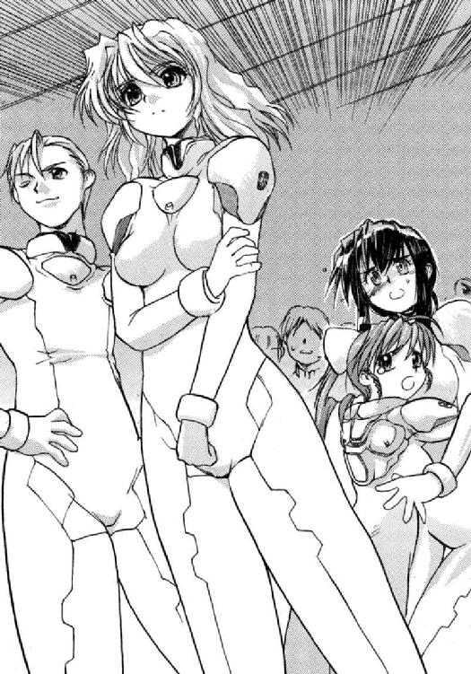
彼女の勇ましい言葉に、数人の男子が賛同の声を上げる。
「みんな、正気なのかしら......」
誰にも聞かれないような声で、シノンはつぶやく。
みんな、それほど死にたいのか、と思う。
「氷坂さんの意見は、心情的には理解できるけど、ただの自殺行為だと、わたしは思うわ......」
シノンがまさに言いたかったことを、リオが代弁する。
「否定はしないさ」
アレイはかすれたような声で、囁くように言った。しかしそれは、彼女の普段からの話し方なのだ。
「たった一隻の戦闘艦で、王国に勝てるなんて思っていないさ。だけど、わたしは王国が憎い。まるで、ゲームをしているように、侵略戦争を続ける連中なんて......」
「その思いは、ここにいるみんなも同じだと思う」
リオはそう言うと、同期生たちを見回す。
ほとんど全員が、彼女にうなずき返した。
シノンも、そうした。
王国は確かに憎いし、許せないと思う。しかし、一介の大学生に、いったいなにができるだろう。
「理由は定かではないが、王国はキビの政府にこの艦の売買契約を解除させた。つまり、この艦は造船所を所有する星間企業のモノだということだ。それを買い取る権利は、誰にでもあるということだ。たとえば、ボクたちにもね」
神崎キスカがもったいぶった口調で話しながら、リオの正面に立つ。
「お金さえあればね。あなた、払ってくれる？」
リオが苦笑を浮かべながら、キスカに訊ねた。
「あいにく出先だから、持ち合わせはない。だけど、スポンサーなら、心当たりがある。うまくゆけば、この艦を購入する代金を支払ってくれる。その後の維持費や修理費などもね......」
「確かに、反王国の惑星国家なら、協力してくれるかもしれないけど......。王国に攻撃の口実を与えることを覚悟してまでやってくれるかしら」
「まず、無理だろうね」
リオの言葉を、キスカは即座に否定した。
「だったら、いったいどこが資金を出してくれるというのよ」
呆れたような顔をしながら、リオは大きく両手を横に開く。
「もしも、交渉が成立したなら、キミはこの艦に残って、王国と戦うのかい？」
「合法的にこの艦を取得できて、しかも、その後の支援も受けられるならね。それなら、決して自殺行為じゃないから......」
でも、そんな魔法みたいなことができるわけがない、とリオは断言するように言った。
シノンも当然、そう思った。
キスカはいつも物事を誇張する傾向にあるが、いよいよ誇大妄想も極まったという感じだった。
「魔法というのは、いいたとえかもしれないな」
キスカは余裕の笑みを浮かべると、これから通信管制室に向かうと宣言した。量子共鳴通信を使って、スポンサーと交渉してみる、と......
「ご自由に......」
リオは冷たい声を返す。
「でも、できれば教えてほしいものだわ。あなたがどこと、あるいは誰と交渉するつもりなのか？」
「いいとも......」
キスカは大きくひとつうなずくと、自分の発言を最大限、効果的にしようと、しばらくの間をおいた。
そして、彼はひと言だけ言った。
交渉相手は、銀河ネットワークであると──
香月シノンにとっては、信じられないことだったが、キスカと銀河ネットワークの交渉は成功する。
そして、造船所を経営する星間企業アリマ・ジェネラル・インダストリ（ＡＧＩ）も、新型戦闘艦の売却を了承してくれた。
おそらく、それは売買契約の一方的解除という暴挙に対する報復なのだろう。そして今後の武器弾薬、必要物資の補給も約束してくれた（もちろん、有償でだが）。
星間企業の恐ろしさを、シノンはあらためて思い知った。
実際、星間企業は、国家と同等の実力を持っている。
たとえば、惑星インカは国家の所有ではなく、企業が所有している惑星である。そこで働く人々は、もちろん、どこかの国に属しているし、母国に税金も納めている。
しかし、母国との繫がりは、それだけなのだ。
企業が所有する惑星には、国家権力はまったく介入することができない。どこの国の領土でもないのだから、それが当然なのである。
だから、法も秩序も、すべては企業の自主管理に置かれている。
国際法により、企業が保有することを禁じられているのは軍事力のみ。だが、それを保有するのは、いつでも可能である。
それぐらいの資金力は、どの星間企業も持っている。
遠い将来においては、星間企業が国家に取って代わると予言する有識者もいるほどだ。
すでに経済と情報は、国家の枠組みを超えている。
次には、軍事力が国家の手から離れるのかもしれない。たとえば、王国の究極の理想は、軍事力による人類世界の統一である。
しかし、そのときにも自治体として、国家は存続しているだろう。王国の〝領土〟となった惑星国家がそうであるように。
経済は星間企業が、軍事は王国が支配する、そんな未来が近づきつつあるのかもしれない。そして情報を支配するものは、銀河ネットワークをおいて他にない。
人類社会を完全に搦め捕った超巨大通信網──
人類が所有する情報のすべては、手のひらに収まる携帯端末に接続している。それはまた、究極のコミニュケーション・ツールでもある。
電話、郵便、印刷物、音楽、映像──
二〇世紀において、それぞれ独立していた情報通信の媒体をすべて統合したのが、銀河ネットワークなのである。
惑星国家キビ防衛大学第七三期生有志の名義で購入され、自由護衛艦と仮称されることになった新造戦闘艦に、銀河ネットワークのＴＶスタッフが乗り込んできたのは、二三〇〇年一月二二日のことである。
天文学的な購入代金の代償として、王国との戦闘を放送する専門チャンネルを立ちあげるために......
オペレーション３ スペース・ラナウェイ
１
西暦二三〇〇年三月三日 惑星キビ軌道上──
惑星国家キビの第三護衛艦となるはずであった宇宙戦闘艦の通信管制室で、『スターシップ・チャンネル２３００』のプロデユーサーであり、番組『スターシップ・ライブ』のディレクターでもあるピーター・スパイクスは、両腕を組んだまま、モニターの画面を凝視していた。
モニターに映っているのは現在、チャンネルでオンエアされている映像。
メイン・チャンネルには提携番組のひとつであるホームコメディが流れている。
いかれた六人家族の物語で、ブラックな笑いとシュールな結末とで、マニアックな若者のあいだで人気が高い。
そして四つあるサブ・チャンネルには、艦内各所に設置した定点カメラの映像がモニターされていて、データ放送では『スターシップ・マガジン創刊準備号』が配信され、メイン・チャンネルで繰り返し放送されているＴＶショップの商品（奇妙奇天烈な健康器具や摩訶不思議な万能洗浄剤などだ！）や、オリジナル・グッズ、オークション・アイテムなどの売買が行われている。
それらの売り上げは、チャンネルの貴重な収入源となる。
メジャー・チャンネルなら、放映料を徴収しなくても、商品の販売収入だけでやってゆけるほどだ。
新規チャンネルを立ち上げ、メジャー・チャンネルに育てあげてゆく。
それが、チャンネル・プロデユーサーの手腕である。
スパイクスは過去に一〇ほどのチャンネルを立ち上げ、ふたつをメジャーにし、五つを定番に仕立てている。
銀河ネットワークには、何千人ものプロデューサーがいるが、これほどの成功を遂げた人間は過去にはいない。
スパイクスの偉業は、すでに伝説のものとなっている。
そう、伝説なのだ。それは彼が、同業者から、もはや〝現役〟ではないと考えられているためでもある。
巨額の資金を投じて立ち上げた、最新の三つのチャンネルは、すべて〝打ち切り〟の憂きめを見ている。
それだけで、銀河ネットワークの重役は、スパイクスの才能が〝枯れた〟と判断しようとしている。
今回のチャンネルが失敗に終わったら、その評価は決定的となるだろう。
銀河ネットワークは、彼との契約を打ち切るだろう。
それを免れるには、このチャンネルをなんとしても、メジャーにしなければならない。そのためには、どんな手段でも使うつもりだった。
幸運なことに、最高の素材が、それも向こうから転がり込んできた。
「ボス......」
そのとき、入口の扉が開いて、本番用の簡易宇宙服に身を包んだディータ・ミルコフが部屋に入ってきた。
彼女は、惑星国家エカテリーナの国営放送のアナウンサーを退局したあと、フリーのレポーターになったという経歴の持ち主である。
母国では、かなり人気があったらしいが、銀河ネットではまったくお呼びがかからなかった。そんな彼女をスパイクスが拾って、「スペースＸゲーマーズ」の体験レポーターに起用したのは、三年前のこと。
今では彼女もそれなりに人気があり、先日までは、メジャーチャンネルのひとつであるレギュラー番組を持っていた。
その番組は、衛星軌道上にあるスタジオから放送していたもので、無重力状態での〝着替え〟が毎回のお約束だった。
先日の番組改編で、某大手芸能事務所の新人タレントと突然、交代することが決まって、彼女のスケジュールが空いた。
それを知ったスパイクスがさっそく交渉に入り、彼女はふたつ返事で、番組の案内役を引き受けてくれたのだ。
命の危険があることを承知のうえで、だ。
（分からねぇ女だ）
自分で口説いておきながら、なぜ彼女がこの番組に出演する気になったのか、スパイクスは理解できないでいる。
しかし、宇宙関連の仕事で名前を知られた女性レポーターを迎え入れられたことは、チャンネルにとって有利に働くのは間違いない。
現在までの視聴契約者の半数は、彼女の熱狂的なファンと言ってもいい。
「......スタートチャンネルの結果は出たの？」
「ああ、さっき報告書をタイプして送ったよ。向こうは始末書として処理するかもしれねぇがな」
「始末書？ そんなに、ひどい数字だったの？」
「ま、見てみな」
その言葉にディータはうなずいて、入口の壁を軽く蹴って、宙を泳ぐようにスパイクスのところへやってくる。
スパイクスは椅子に座ったまま、手を伸ばして、彼女の身体を受け止める。
ディータは礼を言って、番組ディレクターの隣の座席に腰を下ろした。
ベルトで身体を固定し、制御盤を操作し、スパイクスから転送された資料をモニターに表示させ、目を通してゆく。
「......なるほどね」
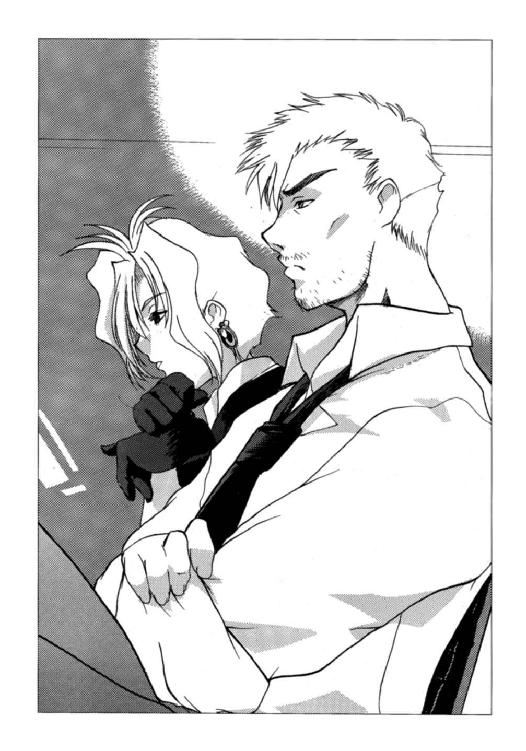
資料を読み終えて、ディータはため息をついた。
スタートチャンネルでの放送には、巨額の費用がかかる。
それだけの投資をしての数字としては、はっきり言って惨敗である。契約者数も、視聴率も、惨憺たるものだった。
「今の数字なんか、オレには関係ない。最初からいい数字が取れるとも思ってなかったしな......」
大事なのは何人の人間が、この番組の存在を知ったかだ。それも情報の発信源となりうる人間が、である。
「状況は最悪だが、この番組は素材としてはおもしろいとオレは思っている。ひょっとすると、〝化ける〟ってな......」
それよりも、と言って、スパイクスはいきなり話題を変える。
「ニュース・チャンネルをいくつかチェックしていたんだが、どのチャンネルでも、この番組について時間を割いていた。この星域の内戦についての特集とともに放映していたものもあったな......」
「どういう論評だったの？」
「録画してあるが、見てみるか？」
スパイクスに問い返されて、ディータは短い金髪を揺らして、首を横に振る。
「やめておく。あなたがそう言うときには、ろくなことがないもの」
「戦争を娯楽にするとは、けしからんと言ったものが大半だったな。そういう批判は歓迎したいぐらいだが、気になることがひとつあった。〝王国〟の報道官の声明なんだが、この艦のことを海賊と決めつけていやがった。どこの国家にも属していない非正規の戦闘艦だって、な。国連安保理も、そのことに関して懸念を表明しているらしい。武装解除の勧告が出てくる可能性も出てきた」
「それって、まずくない？ 下手をすると、わたしたちまで犯罪者ってことに......」
「撃破した敵艦の乗員は、五三名。艦長くんの話では、全員の死亡を確認したそうだ。最新鋭艦だけあって、この艦の主砲はなかなか破壊力があるぜ」
「この艦が正規の軍隊と認められなかったら、あたしたちは人殺しってわけだ......」
「そうなるだろうな」
スパイクスはまるで他人事のように言った。
これまでにも、危ない橋は何度となく渡ってきている。この程度のことで、おたおたしているようでは、銀河ネットでプロデューサーなどやっていられない。
「最悪、〝王国〟だけじゃなく、国連宇宙軍からも狙われるってこった」
「そんな......」
「オレたちが死ぬのは、脳波が止まったときじゃねぇ。量子の波に乗らなくなったときだったろ？」
それは銀河ネットに携わる人間がよく言う言葉だった。
「政治のことは、ガキどもに対策を講じるよう言っておいた。オレたちは、いかに数字を取るかを考えねぇと」
「わたしが〝着替え〟ましょうか？」
ディータが真剣な顔をして言った。
すでに契約済みの視聴者の大半は、それを期待していると、彼女も分かっているのだ。
だが、スパイクスは即座に首を横に振る。
「気持ちは嬉しいが、オレはおまえに、あんな真似をさせる気はねぇ」
「ボス......」
ディータは感激したように、潤んだ視線を向けてくる。
スパイクスは気にするなというようにうなずいたが、内心では、
（おまえが着替えたぐらいじゃ、もはやたいした数字は取れねぇってことだよ）
と、吐き捨てていた。
女を脱がせるのは、誰にでもできる。それで単純に数字が取れるのも事実だが、上限もはっきりしている。
（このチャンネルは、長く続くわけじゃねぇ）
この艦が沈むか、王国との戦闘が終われば、番組は終了するのだ。
だからこそと、スパイクスは思っている。
銀河ネットの伝説に残るようなチャンネルにしてやる、と。
プロデューサーである彼の名前とともに......
２
「わたしたちは、キビ星系に駐留した〝王国〟の戦闘艦を撃破して、祖国を解放したわけでしょ。だったら、本艦を航宙自衛隊に引き渡せば、わたしたちの役目は終わるはずよ」
香月シノンは、自由護衛艦の食堂に集まっている防衛大学の同期生に向かって、訴えかけるように発言していた。
チャンネル・プロデューサーであるピーター・スパイクスから伝えられた懸案事項について、討議するための集会である。そしてもうひとつ、先の戦いで仮に決まった配置を正式に決定するという目的もある。
もっとも、〝艦長〟こと神崎キスカをはじめ、最低限の人間は、それぞれの部署で当直についている。
しかし、モニター画面で、集会の様子は見ているはずだし、発言することも可能だ。
「そう簡単にはいかないだろうな」
食堂のテーブルのすぐ上を気怠そうに漂いながら、氷坂アレイがハスキーな声と囁くような口調で、シノンに反論した。
先日の戦いでは、彼女はシノンと同じく、第一艦橋に配属され、主任通信員を務めていた。
同期生ではあるが四歳も年上だし、どこかしら近寄りがたい雰囲気もあって、シノンは、あまりアレイと話をしたことがない。
「わたしたちの帰還に、国民は熱狂しているみたいだけどね。惑星国家キビの前政権は、すでに王国に降伏している。そして現政権は〝王国〟に対して〝理解〟とやらを示している......」
このまま母星に帰っても、政府に身柄を拘束されるだけだと、アレイはいつもの口調と声とで言った。
「国民はわたしたちを支持してくれてるのだから、政府だって、そう簡単には手出しはできないと思うけど」
「わたしたちだって、完全に無実ってわけじゃないんだから、現政権が見逃してくれるとは思えない。わたしたちをそのままにしておくと、王国の攻撃を受ける口実になるのは間違いないしね......」
そして現実に、今のところはなんの動きもしていないものの、王国の戦闘艦が一隻、この星系に出現しているのである。
「でも、キビ政府に支持されないかぎり、わたしたちは王国の報道官が主張するとおり、海賊も同然だわ。銀河ネットと契約したのは、この艦を運用する資金を提供してもらうためと、わたしたちの正義を全世界に訴えるためでしょ。このままでは、まったく逆効果じゃない？」
「スターパイレーツ・チャンネルと名前を変えないといけないかもね」
アレイが真顔でつぶやく。
「ボクたちが置かれている状況を、もう一度、整理してみてはどうかな......」
三上シントが、穏やかな笑みを浮かべながら言った。
彼は先日の配属では、航宙長として操艦を担当していた。
操艦シミュレーターでは、いつも抜群の成績を示していたが、その手腕が実戦でも通用することを、先日の戦いでは見事に証明している。
敵艦が発射する軌道式電磁加速砲の楯として使った小惑星に対しては、驚くほど短い時間でランデブーを成功させているし、アンカーを打ち込んで捕獲したあとも、小惑星が敵艦に直進するよう、見事に運動方向と速度を変更させた。
光素子人工脳の高速かつ正確な計算に連動した自動操縦によるところも大きいのだが、機械的な誤差を修正するのは、人間の手腕である。
噂では、シントは機械では測定できないほどの運動方向や加速度の変化も〝なんとなく〟感じることができるらしい。
奇跡のような三半規管の持ち主である。宇宙時代に入って、人類は進化をしているなどと言われることもあるが、彼などは間違いなく進化した人間なのだろう。
「おまえらしいよ」
シントの隣にいた桐生タカイが、ぽんと親友の肩を叩く。
食堂は重力区画にあるのだが、今はそれを働かせていなかったので、ふたりはその反動で反対方向に動きはじめる。
驚いたシントがあわててタカイの制服をつかみ、ふたりはしばらくのあいだ、もつれ合うように空中で回転した。
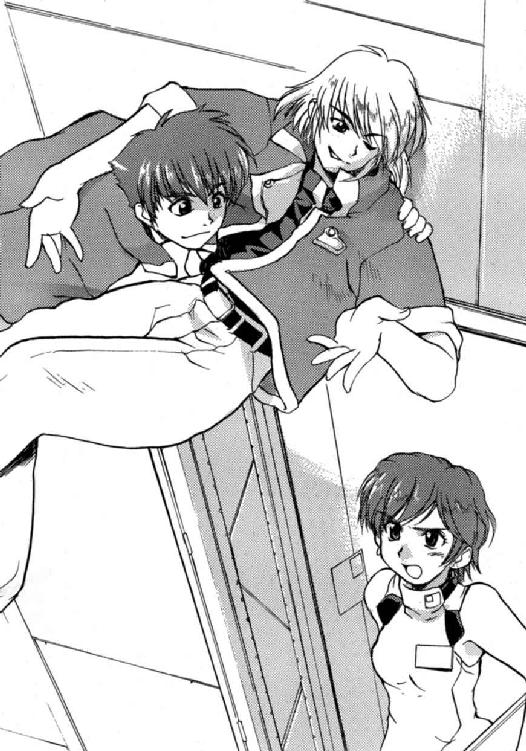
「なに、馬鹿やってる」
防衛医科大の研修医として、この艦に乗り組んでいる篠原ミナセが、頭上に流れてきたタカイの足をつかんで強引に床にひきずりおろした。
「他人の頭の上では、さからない」
「妬くなよ」
タカイは笑いながらも、素直に椅子に落ち着いた。
シントのほうも、いかにも進化した三半規管の持ち主らしく、手足を器用に動かして、空中で完全に制止した。
それを見た何人かが、感嘆の声を洩らす。
（ホント、たいしたものだわ）
シノンも心からそう思った。
無重力下で下手に手足を動かすと、制御不可能の回転に陥ってしまうことも多いのだ。彼女が船外作業員の資格を取らなかったのは、それが嫌だったからである。
宇宙服のなかで、嘔吐することほど、悲惨なものはない。
「この艦の試験航海を兼ねた航海実習にボクたちが出ているとき、母星キビに三隻からなる王国の艦隊の侵略を受けた......」
シントは空中を漂ったまま、何事もなかったかのように続けて、惑星キビの戦略防衛システムと第二護衛艦マイヅルの奮闘によって、敵艦の一隻が撃沈、一隻が大破したことを指摘した。
しかし護衛艦マイヅルも、艦隊司令小沼提督以下、乗組員全員とともに壮絶な最期を遂げている。戦略防衛兵器群も、その大半が機能を停止した。
敗戦の責任を負って、間宮総理ら政府首脳は総辞職。
その後、第一野党と連立与党から離脱したふたつの小政党とが、新たな連立を組んで、新政権を発足させた。
もっとも母星の衛星軌道上に、宇宙砲台とも言うべき王国の戦闘艦が停泊している状況での政権交代である。
内政干渉がなかったとは言い難い。政権交代の有効性は疑問だった。
実際、キビの国民は各都市で暴動を起こし、建国以来はじめての戒厳令まで敷かれたのである。
そんな混乱のさなか、新政権は王国の要求に応じて、自衛権放棄の声明を発表する。
事実上の降伏である。
しかし、惑星防衛の要である護衛艦を撃沈され、戦略防衛システムも機能しなくなっている以上、自衛権を行使しようにもできないというのが現実だった。
「この艦は前政権が星間企業に発注して建造がはじまった。建造費用の半分はすでに支払われていて、残金は艦の引き渡し時に納付される契約だった......」
「しかし新政権は、王国の指導を受けて、その契約を一方的に解除したってわけだ。自衛権を放棄した国が、戦力を保持するわけにはゆかないとの理由でだ」
タカイがシントの言葉を奪い取るように発言した。
「もっとも、我らが本国、日本の憲法には戦力の不保持を謳った条文が、いまだに削除されずに残っているけどな」
しかし日本は五隻もの宇宙戦闘艦を保有しており、国連軍に派遣している。
拒否権こそないものの、安全保障理事会の常任理事国でもある。
問題の条文は将来、実現されるべき理想であるとの注釈を加えられ、〝塩漬け〟の状態のまま、現代まで放置されてきたのだ。
「アカデミックフリーダムは航宙自衛隊の基本方針ですけど、その問題を今、持ちださなくてもよろしいでしょ。重要なのは、わたくしたちがこの自由護衛艦を買い取ったということ。正統な売買契約に基づいて」
タカイをたしなめるようにそう意見を述べたのは、先日の戦いでは第三艦橋で星間気象観測員を担当していた間宮リオだ。
彼女は先日、辞職した間宮総理の実の姪である。
防衛大学卒業後は、航宙自衛隊には入隊せず、間宮総理の私設秘書官になるとの噂がもっぱら流れていた。
たぶんそうだろう、とシノンも思っていた。
間宮家は、日本本国にいた頃から、何百年も続く由緒正しい政治家の家柄なのだ。
そして神崎キスカとともに、今回の計画を提案し、実行した人物（シノンに言わせれば、張本人）でもある。
あのときシノンは、彼女が最初、キスカが出してきた常軌を逸した意見に反対しているのだと思った。
しかし、彼女は反対意見を代表するふりをして、全員がこの計画に参加するように誘導していたのだ。
政治家を志しているだけあって、見事なアジテートだった。
結局、六〇名ほどの人間がこの計画に参加し、王国と戦う決意をした。
「......この艦の購入資金を貸してくれたのは、銀河ネットワーク。この艦と王国との戦いを独占放送するという契約で。つまり、わたくしたちは、借金をしているわけよ。その金額がひとりあたり、どれくらいになるかは、みなさんご存じよね？」
ここにいる全員がもちろん、香月シノンもそれは知っていた。
「違約金まで含むと、その金額は倍になる。キビの国家予算で考えても、かなりの割合かしらね」
追い打ちをかけるように、リオはシノンの顔に視線を向けた。
「キビの現政権が、それだけの金額を払ってくれるとは思えませんわ。わたくしたちはつまり、途中で投げだすことのできないゲームをはじめたということよ。そして、そのゴールはひとつ......」
リオはそこまでを言って、話（演説かもしれない）を終えた。
彼女があえて言わなかったゴールとは、王国を打倒し、銀河ネットとの契約を完了することである。
（だから、それが絶望的なんじゃないの）
シノンは、心のなかで悲鳴を上げる。
しかも、このゲームには、デッドエンドもあるのだ。
惑星国家キビとの戦い、さらにはこの自由護衛艦との戦いで、王国は二隻の戦闘艦を失い、一隻が大破、戦闘不能となった。
しかし王国は、その一〇倍もの戦力をいまだに保有しており、さらに何隻かが建造中であり、また設計されつつある。
いかに最新鋭艦とはいえ、この艦一隻だけで勝てるわけがない。
しかも、帰港地はどこにもないのだ。補給は星間企業ＡＧＩから受けられるにしても、修理などは自分たちの手で、しかも宇宙空間でやるしかないかもしれない。
船外作業による応急修理の実習は経験しているが、現実にそれができるかどうかは分からない。
差し迫った問題として、前回の戦闘で損傷を受けた観測装置や装甲板を交換する必要があるのだ。
「国際世論を動かし、国連軍の派遣を実現させること」
いつのまにか、タカイの隣の席に移動していたシントが、静かに発言した。
「それが、ボクたちにとって、もっとも現実的な戦略だったわけだけど......」
「その国連に、海賊の疑惑を持たれているようでは、望み薄だな」
タカイは腕組みしながらうなずく。
「未来の総理も、こういう状況になるとは予測できなかったのかい？」
「予測もしていたし、対処もできるわよ」
リオが澄ました顔と声で答えたのを聞いて、食堂にざわめきが起こった。
「伯父様を──間宮元総理をこの艦に迎えればいいの。それで、この艦は前政権の亡命政府と主張できますわ」
ざわめきが静まるのを待ってから、リオは事もなげに言った。
しかし、その言葉で、また新たなざわめきが起こる。
「それだけで、王国や国連が納得すると思う？」
シノンが呆れたような顔をして彼女に訊ねる。
「納得なんてされなくってもいいわ。議論が起こればいいのよ。決着がつくまで、何年もかかるような議論を、ね」
勝ち誇った顔で、リオは言った。
「王国は、わたしたちのことを海賊だと主張する。わたしたちは、亡命政権だと反論する。議論は完全な平行線で、たぶん決着がつくことはない。国連の安全保障理事会は、きっと紛糾するでしょうね」
自信に満ちた彼女の言葉に、そんなものかもしれない、とシノンは思った。
同時に、彼女こそが今回の計画の本当の発案者であることに確信を抱いた。ただの秀才でしかない神崎キスカに、できる発想ではない。
自分たちはこのフランス人形のような容貌をした少女に、見事なまでに踊らされているということだ。
問題を自ら提起し、あるいは提起させ、その解決策を示す。
まるでマジックショーでも見ているようなもので、不可能だと思っていたことが目の前で次々と実現してゆくと、すべてが可能であるような気分になってくる。
（でも、マジックにはかならずタネがある）
そのタネがつきないことを祈るしかない、とシノンは思った。
３
口径一〇メートルの反射望遠鏡四基からなる自由護衛艦の光学観測主器〝南十字〟──
宇宙戦闘艦に搭載されている望遠鏡としては、間違いなく世界最大である。
この超大型の観測装置の制御室に、香月シノンはふらふらとやってきていた。
食堂での集会は先ほど終わり、間宮前総理を迎える（誘拐する）ための準備がはじめられている。
シノンは同期生であり、幼なじみでもある秋里ミユリの姿を目で探し、望遠鏡の制御盤の前に座って、モニター画像を真剣な表情で見つめている彼女を見つけだした。
彼女は、Ｔシャツに短パンというラフな格好だった。彼女はそのままの服装で、ベッドにも入る。
移動用のグリップを握って、シノンは親友の側まで移動する。
「シノンなの？」
人の気配を感じて、ミユリは一瞬、驚いたような表情をしてから振り向いたが、自分が名を呼んだ当人の姿を見つけて、すぐに笑顔になった。
「集会は、終わったの？」
「たった今、ね......」
「それで、どう決まったの？」
ミユリの問いに、シノンは不機嫌な顔になりながらも、集会での決議を彼女に伝えた。
間宮前総理をこの艦に迎えること。
全員の任務が、正式に決定したこと。
先日、王国の戦闘艦と戦ったときの配属が、ほとんどそのまま引き継がれ、何人かがお互いの任務を交換し合った。
「艦長はキスカ、副艦長はタカイとシント。艦橋に勤務するのは残りが、全員女子」
それは番組サイドからの要請もあり、そう決まったのだ。
そのほうが〝絵になるから〟という理由からである。彼らから支給された制服のデザインも機能より見た目を重視したものだ。
「天文学的な額の借金を背負わされて、母星に降りたら犯罪者。銀河ネットには無断でレオタード姿を放映され、まったく最高の気分だわ」
「今度のことに、シノンは最初から反対していたものね」
「当然よ。わたしたちはただの大学生なんだから。宇宙戦闘艦を買い取って、軍事国家を相手に戦争をはじめるだなんて、正気の沙汰じゃないわ」
「そう思うなら、銀河ネットとの交渉が成立したときに、艦から降りたらよかったのに。実際、何十人もそうしているんだし......」
ミユリに指摘され、シノンは思わず頭を抱え込んだ。
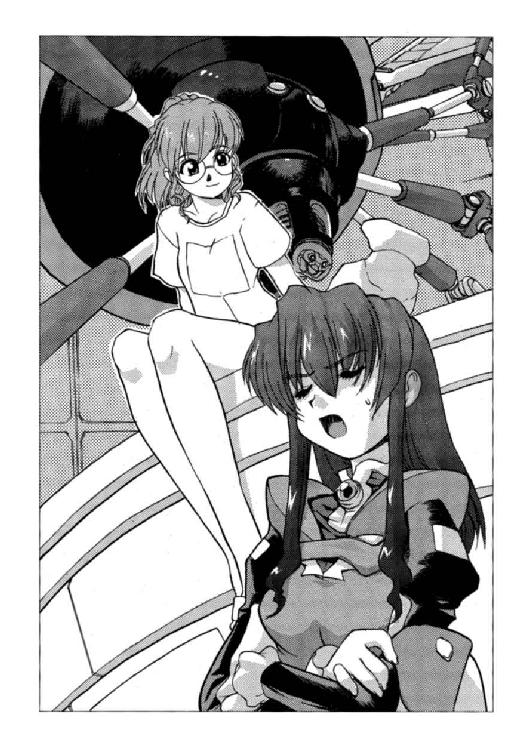
「......まったくだわ。あのとき、どうして降りなかったんだろ」
今のような状況になることは、あの時点で十分に予測できたのだ。
間宮リオと（おまけとして神崎キスカの）提案に、熱病にでもかかったかのように同期生たちが同調してゆくのを批判しながらも、シノンはなぜか艦を降りるという選択をしなかった。
「こんな馬鹿なこと、みんなに思いとどまってほしかった。だから反対し続けた。わたしが降りてしまったら、誰もそんなことをしなさそうで......」
理由になってないことは承知しつつ、シノンはそう言葉にしてみる。
「それに、ミユリまで艦に残るだなんて言うから......」
そしてシノンは、恨めしそうな目で、ミユリを見つめる。
「だって、あたしにはこの子があるから......」
ミユリは笑いながら言って、南十字のモニター画面を優しく手で撫でる。
彼女が天文学者を志望していることは、シノンは当然、知っていた。ミユリがその夢を抱くようになった、そもそものきっかけは自分の父親なのである。
天体観測に連れていって、星空の話をするのが大好きだった父。素直な性格のミユリは天文学に憧れるようになり、現実的で父親に反発を覚えていたシノンは宇宙が嫌いになった。
ミユリが防衛大学に入学したのは、実はこの艦と望遠鏡のためである。
実験・観測艦の建造がキビの国会で承認され、その艦には巨大な光学望遠鏡が搭載されることを知ったからである。
平和目的に使用するというのが、この艦を建造するときの名目であったのだ。宇宙論の研究や、特殊な宇宙環境下での実験を行うなどである。
天文学を志す若者にとっての最大の障害は、国立軌道天文台の定員が限られていることであり、たとえ所員になったとしても、大口径望遠鏡を自由に使う時間がきわめて限られていることである。
この艦の乗員になったら、高性能の望遠鏡に好きなだけ触ることができるとミユリは考えたのだ。
そして、その考えは見事にかなっている。
勤務時間と自由時間のほとんどを、彼女はこの望遠鏡の画像を見つめてすごしている。
しかし今、巨大な四基の反射鏡は、最大加速で加速して五日ほどの距離のところに出現した王国の戦闘艦に向けられている。
それこそが、この艦に南十字が搭載されている本来の目的なのである。
「敵艦は、まだ動く気配はないのね......」
モニター画面を覗き込みながら、シノンはつぶやいた。
「シノンは、どうしてだと思う？」
「増援が来るのを待っているんでしょ。敵に優る戦力を投入するのが、基本にしてもっとも効果的な戦術だもの......」
そしてシノンは左手の親指を唇に当てながら何隻、投入してくるつもりなのかしら、と続ける。
「惑星キビを制圧するためには、三隻を派遣してきている。でも、王国が被った損害を考えると、投入戦力の見積もりは甘かったと言うしかないものね」
いかに王国とて、全艦隊を自由に動かせるわけではない。ヘンリエッタ星域の惑星国家のなかには王国と戦う意志を持っているところも少なくない。
また、王国の〝領土〟になりながらも、それに対し抵抗運動を続けている惑星国家もある。そういった国に対する経済制裁のため、星系封鎖任務に就いている戦闘艦もあるのだ。
「いくら、こちらが新造艦とはいえ、一対一でないと戦いたくはない。今いる敵と戦う気があるなら、さっさと動くべきなんだけどね」
しかし〝艦長〟に決まったキスカは、シノンの提案に対し、消極的な態度を取った。
生き残りの戦略防衛兵器をこの艦の光素子電子脳に同調させて、敵を迎え撃つというのが、彼の考えた作戦である。
そのために、ただ一人の現職自衛官であり、技術士官である結城シメイは光素子人工脳をフル稼働させて、システムの書き換えを急いでいる。
（無駄だと思うけど......）
それがシノンの判断である。
機能している戦略防衛兵器は、わずか二〇パーセントほど。しかも、広域に散らばっているわけだから、防御効果は実質ゼロも同然だ。
「それなら、せめて〝魚雷〟ぐらい、撃ってやればいいのに......」
魚雷というのは高度にステルス化された誘導ミサイルの俗称である。
信頼度こそ高くないが、命中したら一発で敵艦を消滅させるだけの破壊力を持った弾頭を搭載している。
この艦に装備されているのは、ＡＧＩが開発した最新型の金属水素推進式だから、敵の探知能力、近接防御能力が低ければ、命中の可能性も十分にあるのだ。
「でも、あれってすごく高価でしょ。キスカも気軽には発射できないんじゃない。はずれたら自分の責任だって考えるような人だもの」
ミユリの言葉を聞いて、シノンは額に手を当てて、わざとらしくため息をつく。
艦長のキスカは間違いなく責任感の強い人物である。だから、責任が伴うことは、あまりやりたがらないのだ。
「お金の心配をしながら、戦争なんてできっこないのにね......」
シノンは苦笑を洩らす。
この艦の資金源は、銀河ネットが払ってくれる制作費なのである。高額の制作費を請求するには、チャンネルの視聴者数や視聴率を増やす必要もある。
「こんな不利な状況で戦ったことは、銀河ネットのオンラインゲーム・チャンネルでもないわ。五人対戦のゲームで四人に連合されて、苦戦したことはあったけど......」
だが、そのときは、少なくとも命を失う心配はなかったし、対戦者もたいした腕前ではなかったので、なんとか勝利を得ることができた。
しかも、この戦争で、プレイヤーの立場にあるのは自分ではないのだ。
「それなのに、あいつときたら、教科書どおりの作戦しか考えないんだから。有利な状況にあるのならそれでいいんだけど、今のわたしたちがそんな状況じゃないって、どうして分からないんだろ......」
シノンがあれこれ文句を言っていると、ミユリが赤ん坊でも見つめているような優しい笑顔を見せた。
「シノンって、ほんと戦争ゲームうまいものね」
その言葉を聞いて、シノンは思わず顔をしかめる。
「そんなこと、あらたまって言わないでよ。恥ずかしくなる。わたしはただ、賞金目当てで参加してただけなんだから......」
なにかのオンラインゲームのトーナメントを観戦していて、なんとなく勝てそうだと思ったのだ。しかもその優勝賞金は、シノンにとって魅力的な金額だった。
だから参加し、そして優勝した。
「そんなこと言わずに、うまく戦ってよ。あたしだって死にたくはないし、この艦は恒星間移動が可能な世界最大級の天文台なんだもの。沈ませるなんて、もったいなさすぎる」
そう言って、若き天文学者はにこりと微笑んだ。
「乗りかかった船だものね」
シノンは苦笑しながら、古い諺を使った。
「おまけに降りられないときてるし......」
４
二隻の〝王国〟の宇宙艦が、キビ星系に新たに出現してきたのは、シメイが戦略防衛兵器群のプログラムを自由護衛艦に同調させた直後だった。
艦内に警報音が鳴り渡り、全乗員がそれぞれの配置につく。
香月シノンも、秋里ミユリと一緒に第一艦橋に入った。
氷坂アレイはすでに通信員席についていて、特徴のある声で各部署に連絡を送っている。
「遅くなりました......」
シノンは座席に座ると、身体を固定させて、ヘッドセットをつける。
すぐに制御盤を叩き、個人用モニターに必要な情報を表示させてゆく。
そのあいだにミユリは光学観測主器〝南十字〟の四つの望遠鏡を独立させて動かし、合計三隻になった敵艦の映像を捕捉する。
「三隻も投入してくるなんてな」
〝艦長〟キスカが拗ねたような表情をしながら言う。
「勝てるわけないじゃないか」
「番組としては、戦ってほしいところなんだけど......」
番組の案内役ディータ・ミルコフが、キスカに向かって言う。
「無理に決まってます。宇宙艦どうしの戦闘シミュレーションでは、二対一でも勝率は二〇パーセントを切ってしまうんですから」
顔色を変えて、シノンが口を挟んだ。
また、番組のディレクターに釘を刺されるかもしれないが、万が一にもキスカが戦うと決意したら、すべては終わってしまうのである。
「そんなものなの......」
ディータはシノンを振り返って言った。
「この前みたいに、素晴らしい作戦とか考えつかない？」
「そんな作戦がたとえあったとしても、ここは戦うべきではないと思います」
シノンは感情を抑えた声で、金髪の女性レポーターに答えた。
他に選択肢がないならともかく、勝てる確率の低い戦闘をあえて受ける必要はない。
「だそうなんですが、ボス」
ディータがマイクに向かって、事務的な声で言う。
「──また本局から、いろいろクレームがきそうだな」
スピーカーを内蔵したピアスから、チャンネル・プロデューサーであり、番組ディレクターでもあるスパイクスの声が返ってくる。
「──しかし、負けると決まった戦いをしてもな」
スパイクスは渋々とだが、キスカたちの判断を容認した。
「逃げてもいいって」
ディータはにっこりと笑って、キスカに声をかけた。
「しかし、ここから逃げだしたら、母星を見捨てたってことにならないか？」
キスカが焦ったような声で言って、シノンを見つめる。
「しかたないじゃない。戦っても勝てないんだから......」
シノンは平然と答えた。
「わたしたちは、亡命政府なのよ。守るべき惑星も、国民も今はない。だからこそ、不利な戦いからは逃げられる。それが、最大の強みじゃないの」
「でも、キビの国民は、ボクたちを支持してくれているのに......」
呆然とした表情で、キスカはつぶやく。
「英雄として死にたいというなら止めないけど」
シノンは冷たく言って、キスカをじっと見つめる。
「仕方がないな......」
ため息混じりにつぶやいたあと、キスカは覚悟を決めたように続けた。
「最大加速で、惑星キビの衛星軌道上から離れる。跳躍推進可能領域に到達したら、即座にワープだ」
「初動推進始動、最大加速でワープドライブ可能領域に向かってください」
主任通信員である氷坂アレイが、艦長の決定を各部署に伝達する。
機関室から、第三艦橋から、復唱が返ってくる。
そしてそれぞれの部署で命令が実行に移される。
「──ワープの目的地は、どこに設定しましょう？」
第三艦橋の間宮リオの声が、第一艦橋に響いた。
通信員を通さず、直接、訊いてくるあたりが、いかにも彼女らしいとシノンは思った。
「どこって言われても......」
ふてくされたような顔をして、キスカはシノンを振り向く。
「あてなんか、どこにもないしな」
「それはそうね」
苦笑を浮かべて、シノンはうなずく。
「個人的な希望でいいなら、フェニキアなんてどうかしら？ 星間企業が保有する非武装中立惑星だから、王国は攻めてこないと思うし、宇宙港の設備も充実しているし......」
惑星フェニキアはヘンリエッタ星域で唯一の保養地であり、観光や娯楽、賭博などの施設も充実している。
「これは、遊びじゃないんだぜ」
「そうかといって、緊張ばかりもしてられないでしょ。楽しめるのも、最後なのかもしれないんだから」
シノンはさらりと言って、ミユリとアレイに意見を求める。
「あたしも一度、行ってみたかったんだ」
「別に、問題ないんじゃないか」
「......わかった。ワープ座標は、惑星フェニキアに設定する」
ふたりがシノンの提案に賛成したのを聞いて、わざとらしくため息をつきながら、キスカは決定を下した。
アレイが、それを今度は全艦内に放送で知らせた。
歓声にも似た声が、彼女のヘッドセットに次々と返ってくる。
フェニキア星系は、キビ星系から一回のワープで到達可能な距離にあるものの、そうそう行ける場所ではない。
一回の恒星間旅行にかかる費用は、高級車が一台、買えるほどの値段なのだ。
（これで、とうとう帰る場所がなくなるわけね......）
シノンは自嘲の笑みを洩らす。
もう、後戻りはできない。
母星の政府も、国民も見捨てて（そして見捨てられ）、天文学的な借金を背負い、人類史上初、前代未聞にして空前絶後の宇宙海賊だと糾弾されながら、圧倒的な敵と戦わねばならない。
（覚悟を決めるしかないんだ......）
シノンは心のなかで、自分自身にそう言い聞かせた。
オペレーション４ ショート・バケーション
１
西暦二三〇〇年三月一八日 惑星フェニキア軌道上──
惑星国家キビ亡命政府所属となった自由護衛艦（名前はまだない）が、跳躍推進を行ってから一五日が過ぎた。
移動した先は、星系フェニキア。その第三惑星フェニキアⅢは、原始地球を思わせる水の惑星である。
重力は一〇のマイナス三乗まで地球と同じ。入植前の大気組成は窒素と二酸化炭素で、分解して酸素を得るのもきわめて容易であった。
この星で、なぜ生命が誕生しなかったのかのほうが謎とされ、大勢の学者が研究のために（そしておそらくは保養も兼ねて）訪れる。
二〇世紀の人類は、火星や木星の衛星にさえ生命体がいる可能性を考えていた。
水があって、海底火山や落雷があれば、生命はかならず誕生すると、思われていたのである。生命の起源を宇宙に求める学説も、真剣に検討されていた。
だが、二三〇〇年の人類は知っている。
人類が、孤独であることを。
太陽系第三惑星が、奇跡の惑星だったということを。
今、宇宙に生命の種を蒔いているのは、人類しかいないことを......
人類は四種類の塩基配列を太陽系の外へ運びだすために進化したのだと、二二世紀初頭の人間なら、真剣に主張するかもしれない。
利己的な遺伝子が命じているのだと、大昔の学説（多重交際の言い訳にはとても便利だ）を電子書庫から持ちだしてくるような人物が、日本本国の首相に就任していた時代なのだから。
そして、キビのような惑星国家がいくつも建国された。
それで分かったことは、いかに人類が地球とともに進化してきたかというあたりまえの事実である。
生命体には理想形などない。
遺伝子には意志などない。
個体として、そして種として生きるために、自身の遺伝子のなかにある道具を精一杯、使っているにすぎないのだ。
今の自分と同じだと、香月シノンは思う。
生きるために、自分に与えられている道具を、すべて使う覚悟でいる。
「覚悟はしているんだけどね......」
声に出して、シノンはつぶやく。
「なにか言った？」
親友の秋里ミユリがきょとんとした顔で訊ねてくる。
「なんで、今、わたしたちは水着なの。それもＴＶカメラの前で！」
「番組の撮影でしょ。シノンも了解したじゃない」
確かに、シノンは、了解はした。
休暇中の行動を映像で撮ることについては。
ただし、その行動を指定されるとまでは、思ってもいなかったのだ。
（しかも、いきなり海水浴とはね）
またやられた、とシノンは思った。
番組のために宣伝に出てくれと頼まれたときと同じだった。確かに、出演はＯＫしたのだが、実際に撮影したのはデジタル映像処理するための素材でしかなかったのだ。
データさえあれば、衣装から演技から台詞から、すべてデジタル処理で作ることができる。シノンは奇怪な健康器具のＣＭのために、レオタード姿を銀河ネットワークで放映されることになった。
そして、今度は水着だ。
彼女としては久しぶりにムービーやミュージカルを見まくり、本物のショッピングを楽しんで、有意義な休暇をすごすつもりだったのだ。
「そんなに嫌なら、水着に着替えなければよかったのよ。引き受けておいて愚痴るのって、シノンの悪い癖よ」
痛いところを指摘されて、シノンはがっくりとうなだれる。
自由護衛艦から降りなかったときと、まったく同じだ。
反対はするし、文句も言う。だけど、行動はできなかった。
（わたしって、つくづく日本民族だわ）
シノンは、ため息をつく。
（あきらめがいいというか、優柔不断というか......）
「せっかくだから、遊ぼうよ。こんなにたっぷりの水に浸れるなんて、艦のなかでは、絶対できないんだから」
ワンピースの水着を身に着けたミユリに手をひかれて、シノンは苦笑混じりにうなずいた。
シノンにとっても、青い海の誘惑は魅力的だった。
「霧みたいなシャワーや、揮発性洗髪剤の毎日だったものね」
シノンが今、身に着けている水着は、クラシックなセパレート。
ＴＶショップの宣伝に出たときのレオタード姿より、よほど清楚な印象である。
浜辺にはセミヌードやオールヌードの男女も大勢いた。
シノンにとっては信じられないことだった。
惑星国家キビでは建国当初、懐古的な風潮が広がった時期があり、一〇〇年近く経った現在でも、その影響はずいぶん残っている。
プールにおいても水着の着用が義務づけられている。
ちなみに、キビの海は有害物質が多いため、泳ぐことができない。水質改善の計画は進行しているが、予算不足で滞っているそうだ。
そういう国で生まれ育ったので、シノンはヌードになるなどは論外で、レオタード姿や水着姿が放映されることにも抵抗があるのだ。
（しかも、それが戦争を続けるためなんだものね......）
シノンはふたたびため息を洩らす。
「ねぇ、シノン......」
耳もとで突然、ミユリの声がしたので、シノンははっとなって、彼女を振り返った。
「そんな格好で深刻ぶっていても、全然、サマにならないよ」
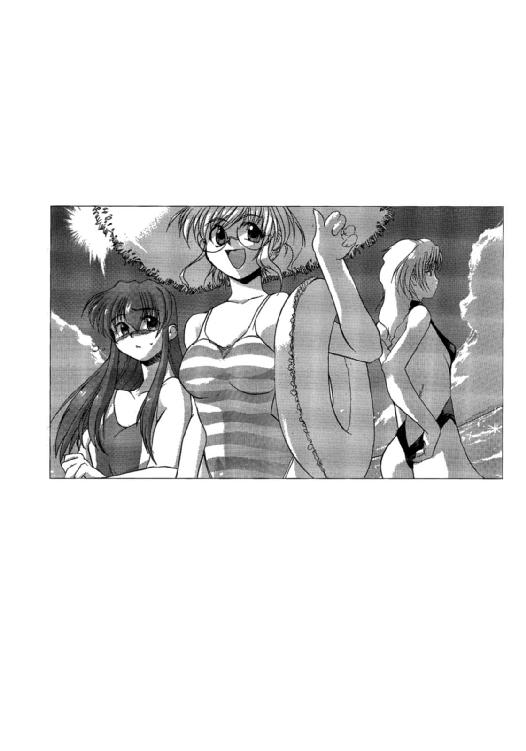
その言葉で、シノンは自分が拳を握りしめたまま、眉間に皺を寄せているのに気がついた。
水着姿で浜辺に突っ立ったままでは、たしかにサマにならない。
「そろそろ本番だって。放送作家先生の台本どおりに演技しないと」
台詞はあとから吹き替えが利くし、演技が下手なのもデジタル処理でなんとでもなるのだが、そのためにも映像や音声の素材はたくさん撮っておいたほうがいいのだ。
ふと気がつくと、氷坂アレイが大胆に肌が露出した黒のハイカットの水着に身を包み、腕組みしながら、シノンを見つめていた。
放送作家のトニー・ガリアーノは、勤務外でも自分たち三人が親友であることにしたいらしい。
ミユリとは本当に親友だからいいのだが、アレイは正直言って、ちょっと苦手なタイプだった。
四年も年上だし、いかにも大人の女性といった雰囲気で、一緒にいると妙に緊張して、なにを話していいかも分からなくなる。
（でも、この先もずっとそんな役割なんだものね）
シノンは自分に言い聞かせて、アレイに微笑みかけた。
しかし、よほどぎこちない笑顔だったのだろう。アレイから返ってきたのは、怪訝そうな視線だった。
２
「彼女たち、けっこういい感じなんじゃない」
惑星フェニキアの地上から送信されてくる映像や音声を見ながら、レポーターのディータ・ミルコフはつぶやいた。
香月シノンたち第一艦橋勤務の三人の女性オペレーターは、地元の若者を相手に、今、ビーチバレーをプレイしている。
放送作家トニー・ガリアーノの下心が見え透いてくるような台本だった。
実際、三台のカメラは、ありとあらゆる角度から、彼女たち三人の健康的かつ刺激的な映像を捕らえている。
（編集しがいがあるでしょうね）
両生類のような顔をした放送作家を横目で見ながら、ディータは苦笑を洩らす。
しかし、ゲームそのものは、なかなかに白熱していた。
長身の氷坂アレイをアタッカーとブロッカーに専念させ、残るふたりがレシーバーとセッターを兼ねる。
そのフォーメーションが有効に機能していて、いかにも遊び慣れしている感じのふたりの地元の若者を相手に、互角に戦っている。
「宇宙軍の軍人だけあって、頭はいいし、訓練を欠かしていないからスタイルも問題なし。しかも幸運なことにルックスがともなっているんだから、言うことなしね」
「娘どもは、当然、人気になるさ」
ディータの言葉に、『スターシップ・チャンネル』のプロデューサーであり、番組『スターシップ・ライブ』のディレクターでもあるピーター・スパイクスは、にやりとうなずいてみせる。
「なにしろ、彼女らはいつ死ぬかもしれねぇんだからな。見ている男どもにとっては、たまらないだろうさ」
実際、その手のメールが、チャンネルには殺到している。彼女らと戦っているという理由だけで、王国を邪悪だと決めつけている視聴者も何千人といた。
彼女らのなかに、ひとりでも戦死者が出れば、番組の人気は急騰するに違いない。
もっとも、宇宙戦闘の性格上、ひとりだけ戦死するという状況にはなりにくい。死ぬときには、全員が戦死していることだろう。
「それにしても、戦争をやっているわりに、あの子たちって明るいわよね」
そう言って、ディータはモニターに映る三人の女性オペレーターを不思議そうに見つめる。
「それが、軍人ってもんだろ」
スパイクスは、関心なさそうに言った。
彼にとってむしろ不思議なのは、ディータのほうだ。
この艦が沈めば、彼女は（当然、自分もだが）運命を共にすることになるのである。スパイクスは、そんなことは端から承知しているし、覚悟も決めているからいいのだが、ディータは、この事実をまったく自覚していないように感じられるときがあるのだ。
（この番組は、作り物じゃないんだぜ）
モニターに映っている映像はすべて虚構であるかのように思えてくるのが、ＴＶの恐ろしさだ。そしてそれは映像を流している側の人間にも、同じ感覚を抱かせるのである。
（オレも、心のどこかで、自分は不死身だと思っているのかもしれねぇな）
神に祝福され、成功を約束された人間だと。
そうだといい、とスパイクスは思った。自分のためだけではなく、ディータやガリアーノや、この艦の乗員たちに対しても......
と、そのとき、ふたりがいる通信制御室の扉をノックする音がした。
入りな、とスパイクスは声をかける。
すると、
「失礼いたします」
という礼儀正しい応答があって、ひとりの娘が、部屋のなかに入ってきた。
彼女は無重力状態の室内をゆっくりと漂って、スパイクスの隣の座席をつかむと、静止した。
「あなたは確か......」
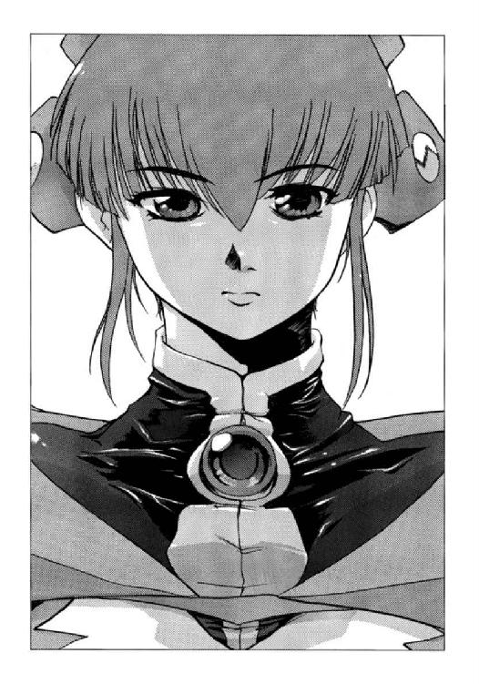
「補給を担当しております荻野セイです」
そう名乗った娘は座席に落ち着くと、やおら制御盤を叩きはじめた。
「フェニキア軌道宇宙港の使用許可が正式におりました。食糧や飲料水等、一般物資の補給にも応じてくれるそうです」
「それで？」
あからさまに不機嫌な声を出して、スパイクスはセイに視線を向ける。
「代金の決済はオンライン・キャッシュにしてほしいとのことですが、番組開設時に開いた当艦の銀行口座は残高不足ということで......」
「金を振り込め、ということか？」
「お願いいたします。国際基準通貨であればなんでもいいとのことです。今の為替レートだと、ユーロが有利と思えますが......」
そしてセイは必要な金額を入力し、番組ディレクターのモニターに転送した。
「銀河ネットは、すべてドルで決済するのが規則なんだ」
スパイクスは答えながら、コンソールを操作し、チャンネルの口座から番組の口座へ要求された金額を振り込んだ。
「予算は無限にあるわけじゃねぇんだからな......」
戦闘艦の維持費が莫大なものだとは承知しているし、それだけの予算申請もしてあるが、チャンネルの今の数字では、極端に金を浪費するのは危険だった。
「承知しております」
セイは神妙な顔でうなずいた。
「つきましては、我々のほうから提案があります」
「提案だと？」
スパイクスは座席を回し、正面からセイを見つめる。
その目は剃刀のように細く、鋭くなっていた。
（立場ってものを考えやがれ）
と、心のなかで吐き捨てる。
「この艦を使って、お金を稼ぐ手段は、実はいくらでもあります。それを許可していただきたいのです」
「銀河ネットの制作費だけじゃ、不足だってか？」
「高価な武器を大量に消費したり、戦闘などにより、損傷した箇所によっては、その可能性も考えられるということです。お金はあるにこしたことはありません」
セイは言うと、彼女自身の個人フォルダを開いて、ファイルを選択し、それをプログラムにかけてから、スパイクスのモニターに転送表示させる。
モニターには資料が映しだされ、スパイクスがつけているヘッドセットのスピーカーからは、音声データが流れでてくる。
どうやら、企画のプレゼンのようだった。
銀河ネットと契約したての頃、嫌というほど作らされたものだ。それも、一〇〇〇万ドルほどの予算を引きだすために......
うんざりとした表情をしながら、スパイクスはモニターに目を走らせ、音声に耳を傾ける。
しかし、時間が経つにつれ、彼の表情は徐々に変わっていったのである。
３
第一艦橋のメインスクリーンには、『スターシップライブ特番』なる映像が主映像で映っている。
第一艦橋に配属の香月シノン、秋里ミユリ、氷坂アレイの三人の女性オペレーターが、保養地としても観光地としても名高い惑星フェニキアを見物して回るという企画である。
いきなり海水浴からはじまったのには驚かされたが、番組の内容は惑星国家キビの国営チャンネルで放映されている『フェニキア星域惑星紀行』とそれほど変わらない。
モニターを見ているのは、神崎キスカと間宮リオのふたりだけ。
もっとも、自由護衛艦は今、惑星フェニキアの衛星軌道上にある宇宙港の真空ドックに繫留されていて、整備、点検、補修がはじめられている。
忙しいのは技術系の乗員たちで、三つある艦橋の機能はほとんど停止していると言っていい。
手の空いている乗員は、交替で休暇を取ることになり、レーザー推進式軌道昇降機を使って、惑星フェニキアに上陸している。
キスカとリオは、言ってしまえば、留守番をしているわけだ。
この艦には今、賓客として間宮前総理が滞在しているから、姪であるリオや艦長であるキスカが、おいそれと休暇を取るわけにはゆかないという事情もある。
なにしろ、前総理は名目的には、この自由護衛艦の指導者なのだ。もっとも、惑星国家キビの現政権は、反乱者が前総理を誘拐したと主張しているのだが......
その間宮前総理は、この艦に乗り込んでから、ずっと提督室に閉じこもっている。
「シノンたち、まるでアイドルみたいね」
モニターの画面を見つめながら、リオが皮肉っぽく言った。
「キミも、水着姿を銀河ネットで披露したかったのかい？」
キスカが、からかうように言った。
「そ、そんなはしたない真似しないわ」
わずかに頰を赤くして、リオは同期生の首席である艦長を睨みつける。
（つまり、彼女たちははしたない真似をしてるってことか？）
キスカは心のなかで指摘しておいたが、それは言葉にはせず、
「キミにはキミの役割があるということだろ？」
と、声をかけておいた。
間宮リオには通常の勤務の他に、この艦の報道官という役割が期待されている。
番組では近々、量子共鳴通信による有料記者会見を行う予定なのだ。参加料はかなり高額らしいが、参加申し込みは殺到しているらしい。
「記者会見には、王国の報道官も参加してくるはずだ。手厳しい質問がやってくるぞ」
「わたしは中高生のとき、弁論大会で決勝にまで行った人間よ」
肩をそびやかすように言って、リオは自信の笑みを浮かべた。
「そして金メダルを持って帰ってきたんだろ......」
キスカはうんざりとした顔で言った。
間宮リオは英語、北京語、フランス語の三つの国際共通語と、母国語である日本語のすべてを使って演説や討論を行える。さすが三〇〇年あまりも、政治家を家業としてきた間宮家の人間だった。
（でも、総合成績では、ボクのほうが上だからな）
キスカは心のなかで、そう付け加えておいた。
「今までのところ、計画どおりにいっているってことね」
複雑な表情を見せながら、リオは言った。
「ほとんど完壁にね」
キスカも渋い表情になってうなずく。
「みんなは、今度の計画を、ボクたちが作ったって思ってるんだからな」
「発案者が他にいるなんて、誰も思ってもいないでしょうね」
間宮リオは、ぼんやりとスクリーンを見つめながらつぶやく。
画面のなかでは、シノンたち三人が、本物のショッピングを楽しんでいた。
最初、ぎこちないように見えた彼女らの表情も、今ではすっかりくつろいでいるように見える。
「でも、ボクたちは彼の提案に乗ったわけだからな。荻野もね」
荻野セイもまた、今回の計画の発案者である人物から話を持ちかけられ、それに乗ったひとりだ。
彼女は、この艦のマネージャーのような役割をこれから果たしてゆくはずである。有料記者会見を開くと決めたのも、彼女の発案だった。
「これからも、彼の計画どおりに進んでゆくかしら......」
「物理法則は決定論的ではないと、大学では教わったんだけどな」
量子力学が登場したことにより、それまでの物理学はすべて古典的とされた。極微の世界では、すべては確率的に振る舞うのである。
つまり、未来を正確に予測することは、不可能だということだ。
「でも、あの人が立てた計画って、予言みたいに的中しているじゃない」
この艦を造った星間企業が、売却に応じたこと。
銀河ネットが、スポンサーになることを承諾したこと。
母星での戦いが、一対一になることも予測していたし、その後、王国が別の戦闘艦を派遣してくることまで、その人物は予測していた。
そしてそのときには迷わず星系を脱出することも指示されていた。
移動先は、惑星フェニキアが妥当ではないかということも......
「もしかすると、シノンも彼の計画を知っているのかもね」
リオが、ぽつりとつぶやく。
計画を知らないにしては、彼女がキスカに提案してきたことは一致しすぎているのである。
「それだけ、彼女の提案が正当だってことなんだろ。ボクたちが計画を皆に持ちかけたときから、彼女は反対し続けてきたんだぜ」
「でも、艦を降りなかったじゃない。それに、今は積極的に見えるし......」
「ボクでは頼りないと思っているだろ」
顔をしかめながら、キスカは言った。
同期生たちが自分のことをどう評しているかぐらい、彼も知っている。
誇りが高く、負けず嫌いだが、小心者だと......
そのとおりだと、キスカは自分でも思っている。
だからこそ、誰よりも努力して、首席の名誉を勝ち取ったのだ。本当は、逃げだしたかったのを我慢して、首席としてふさわしく行動した。
自分では、もっと賞賛されていいと思うのだが、他人はなぜか、悪口しか言わない。
「計画に反対することが、シノンがあの人に与えられていた役割だったとしたら？」
「考えられないこともないが、あの人がボクらまで騙しているとは思いたくないね」
「確かにね......」
リオは、同感だというようにうなずく。
その人物の言葉は信用できると思えばこそ、彼の提案に積極的に乗ったのである。
「あの人の計画だと、この次は......」
リオの言葉は、突然の警報音で中断させられた。
「どうしたんだ？」
艦長席でくつろいでいたキスカは、あわてて上体を起こし、あやうく反動で座席から飛びだしそうになってしまった。
「中性微子検出器と重力波検出器が反応したみたい。ワープアウトした船があるのかも」
「なんだって？」
キスカは大急ぎで、艦長席の制御盤を操作し、彼女の言葉を自分の目で確かめた。
それから、キスカとリオのふたりは気味悪そうに顔を見合わせる。
「もしも、次に通信が入ってきたとしたら......」
「まさか。貨物船か、旅客船だろ」
リオに答えながらも、キスカは通信回線の表示に視線を向けていた。
艦は停泊中であっても、さまざまな通信データを受信し、あるいは送信している。
ふたりがそれぞれ、モニターを見つめていると、軍用回線のひとつに受信の表示が点灯した。
「その、まさかみたいよ......」
緊張した表情で言うと、リオはヘッドセットを着用した。
「──通信が入っているみたいだけど......」
艦橋内のスピーカーから、通信室にいるディータ・ミルコフの声が流れでてきた。
「こちらで、切り替えます」
キスカもヘッドセットを装着し、ディータに答えたあと、リオに操作を指示した。
「わたしは、艦長補佐ではないんだけど......」
不満そうに言いながらも、リオはキスカの指示を実行する。
通信回線が開かれ、宇宙戦闘艦の艦橋とおぼしき映像が映しだされる。
「本艦は、ヘンリエッタ惑星国家同盟に所属する第二一戦闘艦トラファルガーである。わたしは艦長のジョセフ・マイヤーだ......」
「また、彼の〝予言〟が的中したな......」
キスカはひきつったような顔をして、忌々しそうにつぶやいた。
──キビ星系から、ワープして逃げたら、敵艦の一隻が追撃してくる。そして通信を送ってきて、こう言うのさ──
今度の計画の発案者である人物は、そう予言したのだ。
「貴艦との交戦を希望する、か......」
キスカは声に出して、彼の言葉をつぶやいてみる。
そして通信回線からは、まったく同じ内容の言葉が流れてきたのである。
４
返信を待つ、と言い残して、王国の戦闘艦からの通信は一方的に切れた。
神崎キスカと間宮リオは、疲れたような表情で互いに見つめ合う。
なにを言う気にもなれない。
この番組の台本を書いているのは、両生類のような顔をした放送作家ではない、とだけふたりは思った。
「──今の通信、聞いたんだけど......」
そのとき、ヘッドセットのスピーカーから、ディータ・ミルコフの声が聞こえてきた。どこかしら、媚びるような口調であった。
「当然、敵艦の挑戦は、受けてくれるわよね。そうでないと、番組が成り立たないのよ」
それはそうだろうな、とキスカは思う。
視聴者が期待しているのは〝戦争〟なのだ。不利な戦いならいざしらず、一対一の戦いから逃げるわけにはゆかない。
キスカは、敵の増援がワープしてこないことを条件に、挑戦に応じると、ディータに答えた。
「──そうこないとね」
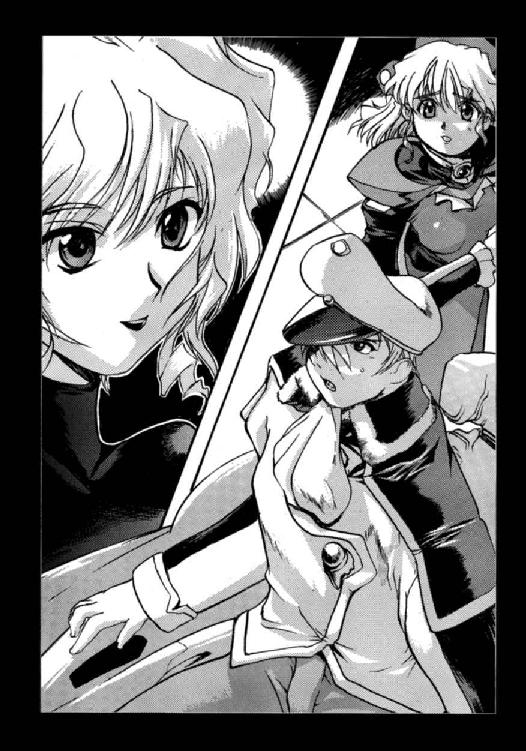
ディータは、安堵したように言った。
おそらく、ディレクターのスパイクスから、厳命が下っていたのだろう。
「──それじゃあ、さっそく、今の通信を番組で流すわね」
ディータはそう言って、通信を切った。
「これで、あとに退けなくなったわね」
間宮リオはため息混じりに立ち上がると、伯父様に報告してくる、と言った。
「頼むよ」
神崎キスカはうなずくと、艦内の全区画と全乗員の携帯端末に、第三級戦闘配備に移行するとの指令を送った。
そのとき、間宮リオと入れ替わりに、補給担当の荻野セイが第一艦橋に入ってきた。
キスカはセイと宇宙軍式の敬礼を交わす。
「戦闘になるようですね」
「聞いたとおりさ」
キスカはセイに答えながら、面倒そうに制御盤を操作してゆく。
観測器の多くは点検、整備のため、機能を止めている。生き残っている観測器のすべてをチェックし、敵艦の分析にあたるよう指示を与えてゆかねばならないのだ。
（ボクは、艦長なのに......）
留守番をしていて、面倒な来客を迎えたような気分だった。
敵が戦闘距離まで移動してくるには、最低でも五日はかかる。それまでに、補修作業は終わっているだろうし、惑星フェニキアに上陸している乗員も艦に帰ってくる。艦内に待機している乗員も、今頃はそれぞれの部署に向かっているはずだった。
「手伝ってくれるのか？」
「補修作業がはじまっているのですよ。手伝えるはずなんてありません」
素っ気なく、セイは答えた。
「それなら、どうして第一艦橋に来たんだ」
キスカが責めるように言うと、セイは得意そうな笑顔を浮かべた。
「ブックメーカーと交渉して、敵艦との戦闘を賭けの対象にする許可をいただきたいと......。わたしの試算では、一〇億ドル以上の売り上げが見込まれ、当艦には二二五二年制定の〝ダービー法〟によって、その五パーセントが報酬として入ってきます」
日本円では五億から六億ほどの収入となる。この艦の運用に要する経費から考えれば、雀の涙のような値段ではあるものの、ないよりはあるほうがいいに決まっている。
「認めない理由はないな」
キスカは、許可を与えた。
荻野セイはこの宇宙艦を使って、様々なビジネスをはじめようとしている。そしてその利益を、この艦の軍資金にしようとしているのだ。
平均的な生涯獲得賃金から計算すれば、この艦の乗員は全員、人生一〇回分以上の借金を背負っていることになる。金利まで考えたら、完済するのは不可能に決まっている。
もっとも、借金を苦に自殺する必要はない。
戦闘に敗れれば戦死するわけだし、生き延びられたら借金はなくなっているのだから。
「ありがとうございます」
満面に笑みを浮かべて敬礼をして、荻野セイは第一艦橋から去っていった。
防衛大学に入った頃から、金儲けが趣味だと公言している女性ではあったが、これほどとは思わなかった。
キスカは艦長席に深く身を沈め、メインスクリーンを見つめる。
そして副映像のひとつで、香月シノンがカメラに向かって手を振っているのに気づいた。
「特番が終わったのかな？」
疑問に思いながら、キスカは映像を切り替える。
すると、
「──艦長、聞いておられますか？」
という声が、ヘッドセットから流れてきた。
制御盤に目をやると、通信回線の表示ランプがひとつ明滅している。
「撮影中じゃないのか？」
回線を開き、姿勢を正しながら、キスカは問いかけた。
「──そうなんですけど、艦長に連絡しろって、番組のほうからありまして」
モニターのなかのシノンは、困ったような顔をしていた。
彼女が今、身に着けているのは、黒のフォーマルドレスで、ほっそりとした肩があらわになっている。
「──わたしたち今、カジノに遊び......いえ、取材に来てるんですけど、そうしたら、第三級戦闘配備の緊急連絡が入ったから......」
なにがあったのですか、とモニターの向こうからシノンが訊ねてくる。
キスカは事実を簡略にまとめて、彼女に伝える。
「──敵艦が挑戦状を......」
キスカの話を聞いて、シノンの顔色が変わる。
「──申し訳ありません」
殊勝な態度を装いながら、彼女は頭を下げる。
しかし心のなかでは、面倒な作業をしなくて済んだと、胸を撫で下ろしているに違いない。
「敵艦が来たのは、キミたちの責任じゃない。休暇中、申し訳ないが、早く艦に戻ってきてくれたまえ。休暇の続きは、敵艦を倒したあとにな」
キスカは冷静沈着な艦長という自分の役割を思い出し、感情を抑えた声で言った。
「──了解しました」
シノンは答えて、さっさと通信を切った。
「だって、さ」
自由護衛艦との連絡を終えると、香月シノンは秋里ミユリと氷坂アレイのふたりを振り返った。
ミユリは〝南十字〟を触れるので内心、喜んでいるかもしれない。アレイはその表情からはなにを考えているのかわからない。それも、いつものことだった。
「──番組のまとめに入ってください」
そのとき、シノンのヘッドセットから、現地採用の撮影スタッフの声が響いた。
「惑星フェニキア最大のカジノの魅力をたっぷりと紹介しようと思ったのですが、無粋な敵が攻めてきちゃいました」
「せっかく大儲けしようと思ってたのにね......」
シノンの言葉に、ミユリは残念そうな顔で相槌を打つ。
「敵艦との戦闘の模様は、もちろんこのチャンネルで、みなさんにお伝えいたします。お楽しみに」
氷坂アレイが独特の声と口調とで言う。
「頑張ろうね、みんな！」
シノンの声に合わせて、三人は幾分、照れながらも笑顔で拳を突き上げた。
「──はい、ご苦労さまでした」
撮影終了の合図が入り、シノンは深くため息をついた。
だいぶ慣れてはきたものの、やはりカメラが回っていると緊張する。
「さて、本業に戻ろうか」
氷坂アレイが軽く伸びをしながら言う。
大人びた雰囲気の女性なので、黒のフォーマルがとても似合っている。
「本業に、ね」
シノンは苦笑まじりにうなずく。
その本業というのは、他でもない戦争である。
王国の敵艦との二度目の戦いが、はじまろうとしているのだ。
オペレーション５ トラファルガー・クライシス
１
西暦二三〇〇年三月二五日 フェニキア星系内宇宙空間──
「これからお送りする番組は、本物の戦争です。ドラマではありません、演習でもありません......」
番組『スターシップ・ライブ』の案内役ディータ・ミルコフの興奮ぎみの声が、自由護衛艦の第一艦橋に流れている。
その声と、ボディラインを強調した簡易宇宙服に身を包んだ彼女の姿は、量子共鳴通信によって、銀河ネットにリアルタイムで放送されている。
今は、混じりっけのない生放送。しかし、まもなく録画、編集済みの映像に切り替わる予定だ。
もっとも、撮影はずっと続く。そうして収録された映像は、三〇分の時間差をおいて、銀河ネットに放映されることになる。
「敵艦との距離、二〇〇万。相対速度、八万五〇〇〇。敵艦は加速中です」
制御盤のモニターに、表示されているデータを艦長補佐の任務にある香月シノンは幾分、緊張した声で読み上げた。
だいぶカメラ慣れはしてきたのだが、生放送だと、どうしても意識が過剰になってしまう。
なにしろ〝王国〟の軍人たちも、この放送を見ているに違いないのだ。そしてこの自由護衛艦の性能を分析している。
だから、迂闊なことは言えないと、二重に緊張するのである。
「宣伝に入りました。明けから、録画撮りになります......」
ディータが微笑みながら、伝える。
今の映像もカメラは収めているが、編集が加えられることになる。
台詞を差し替えたり、演技を修正したり、完成するものは、ほとんど別物の映像だ。
もっとも、シノンは最近、その別物の映像を参考に〝演技〟をしているので、あまり変更は加えられなくなっているのだが......
「敵艦が加速をしているってことは、主武器の射程が短いってことだよな......」
艦長の神崎キスカが、どこかしら余裕の表情を見せながら、声をかけてきた。
「艦長の判断のとおりだと思います」
デジタル音声の案内だと五島宙将に評されたことのある声で、シノンは答えた。
「それなら、敵が射程距離に入るまでに主砲を命中させたら、終わりってことだ」
「そうだといいですね」
シノンはうなずいたが、心のなかでは、そんなに単純に事が運ぶかどうか、疑問だった。
〝王国〟は、この艦の主砲の有効射程をほぼ正確に知っている。
前回の戦闘のとき、最大有効射程で主砲を発射したからだ。そのうえで一対一の戦いを挑んできているのだから、なにか有効な作戦があるに違いないのだ。
「敵艦の姿を最大まで拡大してみて」
「拡大します」
主任観測員の秋里ミユリはシノンの要請を復唱してから、光学観測主器〝南十字〟の四つのレンズを操作する。
四つの反射鏡で集められた映像は、光素子人工脳によって重ね合わされ、口径二〇メートル超の望遠鏡と同等の倍率を得ることができる。宇宙空間にあるため、大気の揺らぎもなく、角分解能も地上にある望遠鏡では比較にならない。
ミユリに言わせると、サザンクロスの性能は、地球軌道天体観測衛星ハッブルⅢとアメリカ合衆国が保有する天体観測艦カール・セーガンに搭載の光学望遠鏡に次ぐのだそうである。
そしてメインスクリーンに、王国の戦闘艦〝トラファルガー〟の姿が主映像で映しだされる。
その映像を、シノンは食い入るように見つめる。
形状からだけでも、敵艦の性能を分析することは可能なのだ。
攻撃兵器は特に艦首に集中しているから、今の映像からだけでも、どんな攻撃を仕掛けてくるかは想像がつく。
「艦首中央に巨大な発射口、その左右にあるのはレーザー砲ね......」
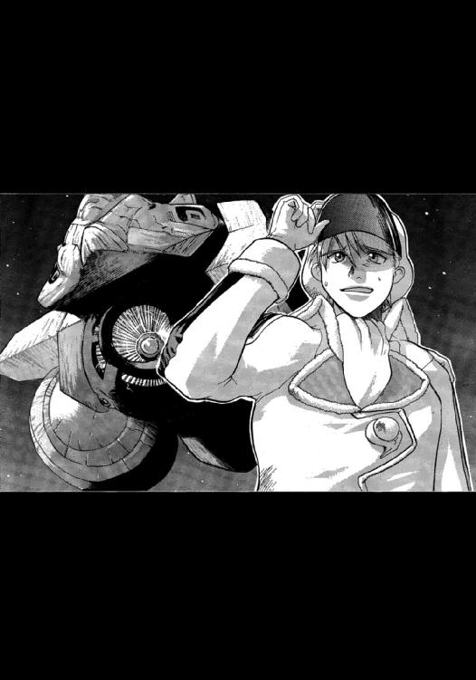
シノンは声に出してつぶやく。
それから、各種の観測装置──
「あの発射口だけどな。電離気体砲の砲口ってことあるかな」
不安そうな表情を覗かせて、キスカが言った。
「でも、口径一〇メートルを超えてますよ......」
ミユリが顔だけを振り返らせて言った。
プラズマキャノンの砲弾ともいうべきプラズマ球は、その口径が大きくなればなるほど不安定になり、崩壊時間も短くなる。
光速の三〇パーセントの速度で発射されても三秒で崩壊してしまったら、その到達距離は基本戦闘単位とされる一光秒──およそ三〇万キロにも満たない。
自由護衛艦に搭載されている四六〇〇ミリ・プラズマキャノンは、最新式だけに口径も大きいし、プラズマスフィアの安定性も優れている。発射速度も光速の三五パーセントにまで達している。
「口径一〇メートルのプラズマキャノンだとしたら、至近弾でも電磁的損傷で致命的な被害を受けるだろうな......」
通信員の氷坂アレイが独特の声を響かせる。
「艦だけじゃなく、わたしたちもね」
シノンは相槌を打つ。
高エネルギーの電磁波は電子機器にとってだけでなく、生命体にとっても有害である。
キスカが言ったとおり、たとえ直撃しなくても深刻な被害を受けるだろう。
「光素子人工脳は、どう判断しているかな......」
キスカのひとりごとめいたつぶやきを聞いて、アレイが制御盤を操作して、人工脳制御室に単身、詰めている結城シメイとの回線を開いた。
「敵艦艦首の未確認兵器について意見を求めたいのですが......」
「──プラズマ兵器の一種に間違いなさそうだね。でも、攻撃兵器としての有効性は疑問かな。安定性と初速とが十分じゃないから。最大射程は一光秒を超えないだろうね」
「レーザーキャノンより、射程が短いなら」
問題なさそうだな、とキスカが胸に手を当てて安堵の吐息をつく。
（分かりやすい人......）
その様子を見て、シノンは心のなかでつぶやく。
しかし、番組スターシップ・ライブでは、キスカは冷静沈着な艦長として描かれていたりする。
番組のなかの彼は、乗員たちのあいだでも評判がいい。
「世界標準時で二〇時から、戦闘開始直前の一時間の特別番組に入ります。いくつかの人気チャンネルでも、提携番組として放映されるから、みんな張り切ってね」
ディータ・ミルコフが笑顔で言った。
加入促進効果を狙っての宣伝である。
契約者は徐々に増えてきているそうだが、莫大な制作費を黒字にするには、ほど遠い状況なのだ。全世界で億単位の加入者を獲得してはじめて、天文学的な制作費もペイできる試算らしい。
「今は世界標準時で七時五〇分か......。敵との戦闘開始時刻は特番終了直後の二一時になるように、相対速度の調整を頼むと、第三艦橋に連絡してくれ」
「いいんですか？ いったん速度がついたら、すぐには減速できませんよ」
敵艦が加速していることを考慮しなければ、射程圏内に到達するのは、日付が変わって、明日の七時二〇分頃となる。
敵は加速中だが、戦闘開始時間を確実に早めるためには、こちらも加速する必要がある。
しかし、もしも自艦の射程距離が敵艦よりも長いのなら、敵艦との相対速度はできるかぎり遅くしておくほうが有利なのである。
敵の射程圏内に入らないあいだは、一方的な攻撃が可能だからだ。
番組の放送時間に合わせるため、相対速度を上げるということは、そのアドバンテージを放棄することにもなりかねないのである。
「しかたないだろ。番組にも協力しないと......」
「ぜひとも、そうしてほしいわ。でも、速度を上げすぎて、特番がはじまるまえに、敵艦を撃破なんてことは絶対にやめてよね」
ディータ・ミルコフが微笑みながら言う。
「努力しますよ」
キスカは言って、シノンに目で合図を送る。
「了解いたしました」
またも番組側の意向というわけだ。しかし、このパターンにはもはや、慣れっこになっているので、シノンはしおらしい声で答えた。
「アレイ、第三艦橋に連絡して。戦闘開始予定時間を、世界標準時二一時に調整するようにって」
シノンの言葉に氷坂アレイは冷たい笑みを浮かべながらうなずくと、その命令を実行に移した。
２
「......変わった注文だね。戦闘開始時間を、二一時きっかりにしろだなんて」
第三艦橋で、浮遊物監視員を担当している里見レンナは、第一艦橋からの通信を受けて、思わず首を傾げた。
「また番組から要請があったんでしょ。それとも、荻野さんが何か、提案したか......」
同じく第三艦橋で星間気象観測員を担当している間宮リオが無関心そうに答えた。
「敵艦は今、加速しているみたいだけど、いつまで加速するのか予想もつかないからなあ」
航宙士の三上シントが苦笑混じりに言う。
「計算しましょうか？」
副航宙士の摩耶アキホが、シントに話しかける。
「シメイさんに頼んだほうが早そうだね。敵艦の加速時間を変数として、目標時間ジャストに主砲の射程距離に到達するための航法プログラムを作ってほしいって。あの人なら、数分で完了してくれると思うから」
宇宙艦の操船は九九パーセントまで自動で行われる。航宙士の仕事も、ほとんどがその監視である。
手動操船は、最後の一パーセントの仕事なのだ。
航法プログラムの作成が間に合わないような状況のときなどに、各種の観測装置を頼りに、航宙士が手動操船を行うことになる。
そのときのために、航宙士は厳しい訓練を受けて資格を得る。
自由護衛艦には航宙士課程を修了した候補生が五名、乗り組んでいる。第三艦橋のシントとアキホ。第一艦橋の、氷坂アレイ、第二艦橋の桐生タカイ、そして補給班に配属されている黒木リュウヤも有資格者だ。
第三艦橋が機能しなくなったときには、アレイかタカイのいずれかが、操船を担当することになる。
「了解しました。結城一尉に通信します」
シントの命令を復唱して、アキホは人工脳制御室の結城シメイに、連絡を送った。
「......分かった。すぐに取りかかるよ」
第三艦橋からの通信に結城シメイは答えると、光素子人工脳の端末を叩いて、実行すべき仕事を入力する。
──一〇分後に、指定の航法プログラムファイルを第三艦橋の航法管制コンピューターに転送すること。
結城シメイが人工脳に要求したタスクは、それが、すべてであった。
３
通信管制室には、何十というモニターがあり、それぞれ様々な映像やデータが表示されている。
その画面を眺めながら、チャンネルプロデューサーであり、番組ディレクターでもあるピーター・スパイクスは細々とした指示を与えていた。
この艦には、量子共鳴通信が五回線用意されているが、そのうちの三つまでは、銀河ネットが使用している。
通信の相手先は、ヘンリエッタ星域内の惑星国家パルミアにある銀河ネットの支局であり、地球の本局だ。
それぞれには、スパイクスの直属の部下が待機していて、彼の指示に従い、仕事をこなしている。
「効果音は、届いているな」
スパイクスは隣の座席で放送台本を叩いている放送作家のトニー・ガリアーノに声をかけた。
「五日前にデータ転送されてきました。ハリウッドの音響チームが、この番組を面白がってくれて、格安で作ってくれたみたいです。さすがに仕上がりは完璧ですよ。科学士官の坊やに頼んで、艦との連動も終えてます」
「敵艦の攻撃に対しては、どうなんだ？」
「本局のほうで、乗せてくれるそうです。今回は、データ送信から編集まで、三〇分の時間差がありますからね。問題ないでしょう」
「本当なら、完全な生でいきてぇんだけどな......」
味方の作戦を相手に知られると不利になると、艦長補佐の小娘から要請があって、やむなく三〇分という時間差を認めたのだ。
それだけの時間があれば音声データの〝吹き替え〟だけでなく、映像データの〝差し替え〟も可能だ。
完成度の高い番組に仕上げることも可能なのだが、肝心の放送作家が三流なので、時間を与えてもたいした効果はないと、スパイクスは踏んでいる。
それぐらいなら、ライブならではの偶発感を前面に出したいのだ。
（なかなか思うようにはいかねぇもんだな......）
スパイクスは、苦笑を洩らす。
彼自身、このチャンネルを完全には手の内には入れられていない。
（だからこそ、化けるって可能性もあるってわけさ）
４
東京都新宿特別行政区──
佐竹マサラは自分の下宿で、マルチモニターの画面を見つめながら、アイスコーヒーのパックに口をつけている。
彼の隣には友人の一人、片桐イアイがまるで自分の部屋にいるかのように寝そべりながら、携帯端末の液晶画面でパズルゲームに興じている。
「次の戦闘でどっちが勝つか、ブックメーカーで賭けをやってるんだって？」
ゲームを一面クリアしたのか、イアイは顔を持ち上げ、マサラに声をかける。
「今、副映像のひとつで予想番組をやってる。さっき覗いてみたけど、軍事評論家が適当なこと言ってた」
「それで、オッズはどうなんだ？」
「賭け方は色々みたいだ。『赤か黒か』だと、自由護衛艦の二・三倍ぐらいだったかな」
「王国の戦闘艦に賭けている奴が多いってことか......」
イアイは言って、モニターの画面を何気なく見上げる。
画面に映っているのは、第一艦橋にいる女性オペレーターと艦長とが真剣な表情で話し合いをしている映像。
戦闘開始直前の特別番組だそうだ。
あと、一時間ほどで、戦闘がはじまる。
「敵艦に乗っているのは、実戦経験豊富な正規の軍人。一方、自由護衛艦の乗員は、正規の軍人どころか防衛大学生。オッズは妥当だと思う。でもボクは自由護衛艦に六万、賭けたけどな」
「ずいぶん、張り込んだな」
イアイは呆れたように言った。
「負けたときには、このチャンネルの一年分の契約料が返ってくるわけだから、チャラになるんだ......」
マサラは視線を画面に注いだまま、答える。
「それに、彼女らが負けるはずはない」
根拠もなにもなくそう言い切るマサラの言葉に、イアイは返事をする気も起こらず、携帯端末の画面に目を転じて、パズルゲームの次の面が転送されてきているのを確認する。
その解法をあれこれ考えながら、
「ヘンリエッタ星域の内戦なんか、このあいだまで他人事だと思っていたけどな」
と、つぶやく。
「ボクだって、そうさ......」
マサラは悔しそうに言う。
「だけど、彼女らが実際に戦っている姿を見たら......」
「無関心ではいられない、か」
その言葉に、マサラは真剣な顔でうなずいた。
「そう言えば、この前、国会前で数千人規模のデモがあったよな。自由護衛艦を救え、とネットで呼びかけた奴がいて、それに応えて集まってきたらしいが......。おまえも、行ったんじゃないだろうな」
「行ったに決まっているじゃないか。そのデモを呼びかけたのは、ボクなんだから......」
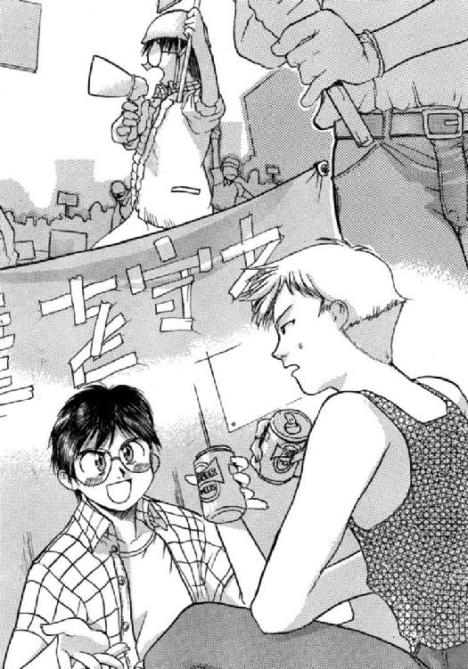
マサラはさも当然というように、さらりと答えた。
しかし、イアイは呼吸が止まりそうなほどに驚いていた。
そして気味悪そうに、友人だと思っていた男の横顔を見つめる。
「おまえって、政治活動のサークルと関係あったか？」
「あのデモは政治集会じゃない。〝オペレーターズ〟のファン集会なんだ......」
「なんだよ、それ」
「彼女たちに死んでほしくない、と思っている人間は多いってことさ。そのためには、〝王国〟との戦いを終わらせるしかないじゃないか。政府でも、国連でも、オレたちは働きかけるつもりさ」
それを聞いて、イアイは本気なのかと声をかけようとした。
しかし、佐竹マサラの横顔から決意の表情を読みとって、言葉を飲み込んだ。
モニターに映っている女性たちを救うためならば、あらゆる努力を彼は惜しまないだろう。
（ご苦労なこったな......）
と、イアイは思う。
彼女たちがいるのは、一五〇〇光年も彼方の宇宙空間である。
地球から、もっとも遠い場所なのだ。
５
「......あと二分で、特別番組、終わります」
そのあとは、いつもの番組『スターシップ・ライブ』に戻るからと、ディータ・ミルコフが第一艦橋の乗員に向かって励ますように言った。
特番のための素材撮りやら、敵艦の情報分析やらで、艦長の神崎キスカも、三人の女性オペレーターたちも、ほとんど休息も取っていない。
いや、自由護衛艦の全乗員が同じだろう。
キスカと香月シノンは模擬戦闘を何度となく繰り返したが、結果はいつも自由護衛艦の勝利に終わっている。
だが、与えている条件がひとつでも違っていたら、結果もまた違うものになる。
「主砲の射程圏到達まで、あと一〇〇秒。カウントダウンに入ります......」
秋里ミユリが言って、数値を読み上げてゆく。
「──電離気体媒質装塡、粒子加速開始」
第二艦橋に所属の若菜サンリの声が響く。
「──主砲発射許可を求める」
攻撃主任である桐生タカイの声が、さらに続いた。
「発射許可を与える」
キスカは答えて、主砲の発射装置のロックを解除した。
「敵艦、回避運動に入っています」
シノンが規定に従って、報告を行う。もっともそれは、本来なら第二艦橋の分担なのだが......
（サンリ、緊張してるな）
と、シノンは思う。
そして自分が案外、落ち着いていることに驚きを覚える。
（わたしって、本当に戦争が好きなのかな......）
シノンは苦笑を洩らす。
だが、第一艦橋の乗員として、重い責任がかかっていることは自覚している。
教科書的かつ短絡的な思考しかできない艦長を補佐することが、彼女に与えられた役割なのだから。
「敵艦が、攻撃してくる様子は？」
キスカが恐る恐るといった感じで、訊ねてくる。
「今のところ、ありません」
彼を安心させようと、シノンは微笑みながら答えた。
「そ、そうか。どうやら、こっちのほうが射程が長かったみたいだな」
キスカは言うと、安堵の表情を一瞬、挟んだあと、自信に満ちた顔になると、メインスクリーンを見つめる。
どうやら、勝利を確信したらしかった。
（そうだといいけど......）
敵の射程外から主砲を撃つだけで、簡単に勝てたとしたら、王国は戦略の段階から失策をおかしていたことになる。
だが、王国の幕僚部がそれほど無能だとは思えない。
なにかしら、対策があるはずだった。
「──主砲発射準備完了」
「射程圏到達まで、あと一五秒。一四、一三、一二......」
第二艦橋のサンリの声が、そしてミユリの声が響く。
そしてメインモニターの副映像では、タカイが照準の微調整に入っている映像が映しだされている。
普段は粗野な印象を受ける男性だが、今の表情は、真剣そのものである。
敵の回避運動を先読みして照準をつける能力は、機械よりも人間のほうが、いまだに優れているのだ。
高度な訓練を受けた人間の経験則や直感といったものは、人工脳の判断より勝ることもあるということだ。
砲術士としてのタカイの成績は、自動照準に対して、プラス一三ポイントという驚くべきものだ。
当人に言わせると「なんとなく撃ってるだけ」だそうだから、彼もまた宇宙時代になって進化した遺伝子を持つ人間のひとりなのかもしれない。
「──照準完了！ 主砲発射!!」
嬉々としたタカイの声と発射トリガーに連動したプラズマキャノン発射の効果音が、艦内に響いた。
「当ったれぇ！」
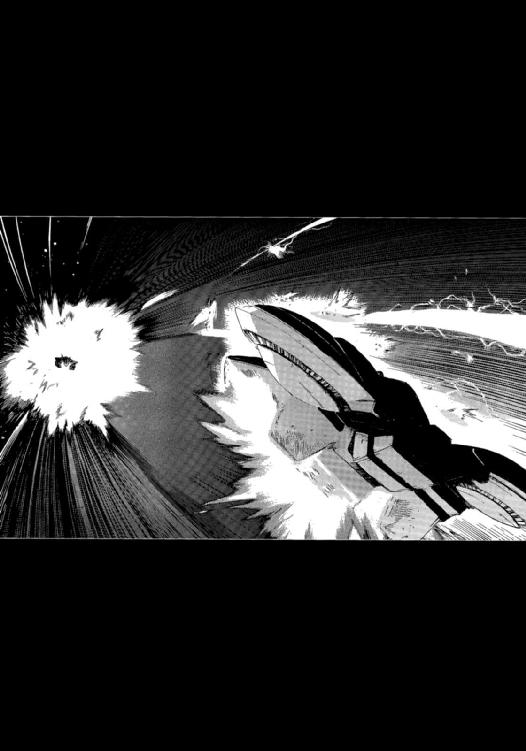
ミユリが台本で用意されていた台詞を、ちょっと恥ずかしそうに叫ぶ。
たぶん、〝吹き替え〟られることになるな、とシノンはふと思った。
しかし、次の瞬間、ミユリは顔色を変えて、
「敵艦の艦首から、閃光。プラズマだと思われます」
と、緊張した声を上げる。
「攻撃してきたの？」
シノンは、キスカを振り返って、命令を促す。
この場合、発するべき命令はひとつしかない。
「回避運動を！」
座席から腰を浮かして、キスカは叫ぶように命令する。
「──了解、自動回避プログラムを作動させます」
「──自動回避プログラムを照準プログラムに連動させる」
第三艦橋の三上シントから、第二艦橋のタカイから復唱が返ってくる。
そしてそのとき、メインスクリーンに閃光がひとつ輝いた。
「今のは、なんだ？」
一瞬、硬直してから、キスカはミユリに訊ねる。
「双方のプラズマ砲弾が、爆発したみたいです。正面からぶつかったのか、互いに干渉し合ったのかは分かりませんが......」
「もしかして、それが敵艦のプラズマキャノンの目的なのかしら。攻撃用じゃなく、相手のプラズマ兵器を無効化するための防御用の兵器だとしたら......」
シノンがつぶやく。
「敵は最初から、レーザーキャノンで殴り合うつもりだったということか......」
宇宙戦闘艦どうしの戦いは、中世の騎士の戦いに似ているとも言われる。
一対一の戦闘が基本と考えられていることや、真正面から接近しながら、戦闘を行うことなどが似ているからだ。
正式名称『ヘンリエッタ星域惑星同盟』を〝王国〟と称する理由のひとつも、そこに由来する。〝王国〟は現実に、この宇宙時代において封建主義を復活させているようにも見える。
衛星軌道上で睨みを利かしている宇宙艦が領主＝騎士であり、惑星表面で暮らしている人人が、領民というわけだ。
宇宙艦を騎士とするならば、プラズマキャノンや軌道式電磁加速砲、さらには〝魚雷〟といった比較的、射程距離の長い武器は飛び道具にたとえられる。
そして命中精度は高いが射程距離の短いレーザーキャノンは、剣や斧、あるいは槍などといった近接戦闘用の武器にあたる。
レーザーキャノンを使用しての撃ち合いは、宇宙艦どうしの戦闘の最終段階であり、いずれかが戦闘不能になるまで続けられるのだ。
「どうにかして、敵のプラズマ兵器を回避できないのか？」
キスカが焦ったような声で、シノンに訊ねてくる。
そのとき、シノンは制御盤の小型モニターに、プラズマキャノンを発射してから、消滅するまでの映像を繰り返し、再生していた。
「低速、低出力、大口径のプラズマキャノン。おそらく速射性能は高いはず......」
シノンはひとりごとのようにつぶやいてから、
「難しいと思います」
と、キスカに返答した。
プラズマキャノンの弾道は直線的であり、それを予測するのは極めて容易なのだ。
敵艦は、自由護衛艦がプラズマキャノンを発射するのを確認してからでも、余裕を持って応射できる。
「〝リボルバー〟の準備をするべきでしょう」
シノンは艦長に向かって、そう進言した。
リボルバーというのは、この艦に搭載されている五連装レーザーキャノンの俗称である。艦底部にある〝暴露部〟と呼称される部位にセットされるオプション兵器のひとつだ。この暴露部には、兵器だけではなく、観測装置や実験装置など、様々なオプションの着脱が可能である。
この艦の〝売り〟のひとつだが、それが有効かどうかは実戦で証明してゆくしかない。
「それしかないだろうな......」
不満そうな顔をしながらも、キスカはうなずいた。
レーザー兵器での殴り合いは、彼の望むところではなかったのだろう。
（やはり、王国の戦闘艦は、実戦経験に基づいて設計されている）
この自由護衛艦は万能型であるが、王国の戦闘艦は何かを特化させているように感じられる。前回、戦った砲艦など、その典型と言える。
「この敵艦は、ビームキャノンを主武器にしている戦闘艦と戦うために設計された艦なのでしょうね......」
だからこそ、あえて一騎打ちを挑んできたのだ。
賭けではなく、十分な勝算があっての挑戦だったのだろう。
（でも、まだ負けたわけじゃない。新造艦の実力ってやつを思い知ってもらうわ）
シノンは心のなかでつぶやきながら、メインスクリーンに映る敵艦を睨みつける。
そう、勝負はこれからなのだ。
６
「......相対距離三五万。相対速度二〇万。双方等速運動です」
秋里ミユリの緊張した声が、第一艦橋に響く。
主砲の発射から、すでに二時間近くが経過している。
その間、〝王国〟に所属する戦闘艦トラファルガーもレーザーキャノンの射程圏内まで接近をはかるだけで、攻撃は行っていない。
一方、自由護衛艦のほうは番組を〝盛り上げる〟ために、〝マネージャー〟の荻野セイが、ピーター・スパイクスとぎりぎりの交渉を行いながら、主砲の二連射と一発の〝魚雷〟の発射を行っている。
主砲の連射は、敵艦のプラズマキャノンの応射によって簡単に阻止されてしまった。
敵艦の大口径プラズマキャノンは、自由護衛艦の主砲以上の速射性を持っていることが、証明されたわけである。
また高度なステルス性を有する対艦ミサイルである〝魚雷〟も敵艦まで五万キロというところで、近接防御兵器により破壊されてしまった。一発、うん十億円という花火となったわけだ。
その事実はまた、敵の観測装置が十分に優秀であることを示している。
これらの結果（最初から予測されたものだったが）を受けて、自由護衛艦はレーザーによる砲撃戦を受けて立つことを決定した。
そして、自由護衛艦の艦底にある〝暴露部〟に〝リボルバー〟と呼称されている五連装レーザーキャノンがセットされたのである。
「......まもなく、敵の射程に入るものと思われます」
香月シノンは、艦長である神崎キスカに向き直って報告した。
高出力のレーザーを収束させるのは、技術的に難しく、有効射程距離は最長でも一光秒──三〇万キロというのが定説となっている。
敵艦の艦首に配置された二門のレーザーキャノンは間違いなく「主砲」だから、射程距離は最大に近いと考えるべきだった。
いつ攻撃がはじまってもおかしくはない。
「対レーザー防御システムを作動させよう」
神崎キスカが命令をくだす。
教科書にも載っている対応策なので、迷う様子はなかった。
「対レーザー防御システム、作動させてください」
通信員である氷坂アレイが、第二艦橋に向かって、キスカの命令を伝達する。
そして第二艦橋からの復唱の声が、第一艦橋に響いた。
それから第二艦橋において、一連の手続きが行われ、自由護衛艦の艦首からミサイル発射口が開き、二発のミサイルが続けざまに射出される。
ミサイルは人間が全速で走るぐらいの速度でゆっくりと自由護衛艦を離れ、二〇秒後と一〇秒後に弾頭を開く。そしてそれぞれの内容物を、そっと吐き出した。
最初のミサイルから吐き出されたものは、電磁波反射薄片。〝カスミ〟というコードネームがつけられている。
ひらたく言えば、反射率が極めて高い、薄くて小さな鏡ということになる。
レーザーを反射して、その威力を軽減する効果がある。
有効な対レーザー兵器ではあるが、効果時間が一〇分と短く、高純度の銀から作られるため、高価であるという欠点がある。
そして、二発めのミサイルからは、電磁波高吸収繊維。
コードネームは〝イカスミ〟。〝魚雷〟の表面にもコーティングされている電磁波吸収素材を特殊繊維に吸着させ、綿飴状に展開するという兵器である。
〝カスミ〟と比べれば、効果時間も長く安価ではあるが、レーザーの威力軽減効果はかなり劣っている。
これらに自由護衛艦の多機能装甲板〝スカラベ〟に組み込まれた耐熱システム〝ホタル〟を加えれば、レーザーキャノンの攻撃を大幅に軽減させられるはずだった。
あくまで「はず」である。
実戦データがほとんどないから、有効に機能するかどうかは分からない。
しかし、これらの対レーザー防御システムを開発したアリマ・ジェネラル・インダストリ（ＡＧＩ）は、かなりの自信を持っているらしく、試験航海のとき乗り込んでいた技術者のひとりが、レーザーキャノンの撃ち合いになっても負けることはないと豪語していたのを、シノンは耳にしている。
（問題は〝リボルバー〟の射程距離が短いということよね）
〝リボルバー〟の有効射程はカタログデータで二八万キロ。しかも、テスト射撃の結果が思わしくなく、二六万キロ以内での使用が推奨されている。
射程距離の差は、最大四万キロ。このまま、等速度で接近してゆくとして、最大一二分間ものあいだ一方的に攻撃されることになる。
そのあいだは、ひたすら耐えるしかないのだ。
〝カスミ〟と〝イカスミ〟の二次的な効果として、敵艦の（当然、自艦もだが）観測装置のいくつかが機能しなくなっているはずだった。
実際に、メインモニターに映る敵艦の画像も悪くなっている。
〝南十字〟の光学観測能力と光素子人工脳による補正が加わってもだ。
当然、観測装置に依存しているレーザーキャノンの照準精度も衰える。
もっとも、現実的に何パーセントの命中確率があるかは見当もつかない。
（シメイなら計算してくれるでしょうけど......）
それを聞く気にはなれなかった。
確率がどうであろうと、もはや戦術の変更はできないのだ。
「ただ今、画像が乱れておりますが、これは放送事故ではありません。電磁波に障害を与える兵器を使用しているためです。繰り返します......」
ディレクターから指示を受けたのだろう。番組の進行役ディータ・ミルコフが、ＴＶカメラに向かって、アナウンスを行っている。
戦争マニアの人々には、たまらない映像かもしれない。一般の人々には、なんでそうなるのかまったく分からないだろうが。
そして、その映像は、次の瞬間にさらに乱れた。
「何が起こったんだ？」
キスカがあわてたような声を上げる。
「敵艦のレーザーキャノンです。〝カスミ〟に命中しました」
主任観測員の秋里ミユリが、すぐに報告を行う。
「敵艦が、レーザーキャノンを撃ったの？」
ディータがきょとんとした顔をしながら、艦長のキスカの側に可動式の座席を走らせる。
「でも、敵艦のレーザーキャノンからは光るようなものは、なにも発射されていないじゃない？」
「光速で飛んでくるんですから、見えたときには、もう命中しているんです。しかも、高出力のレーザーはナノ秒......、ほんの短時間しか照射できませんから。だから、ビームではなく、キャノンなんです」
キスカが丁寧に説明した。
戦争中なのに律儀なことだと、シノンはそれを見て思う。
「......だ、そうです」
片耳を手で押さえながら、ディータがマイクに向かって話しかける。
通信制御室にいるディレクターだか、放送作家だかから文句が来たのだろう。
「キスカ君さあ。艦首からレーザーが発射される映像と効果音をこちらで合成してもかまわないかしら？」
妖艶な微笑を浮かべながら、ディータがキスカに顔を寄せてゆく。
「今の映像じゃ、迫力に欠けるのよ」
「ご、ご自由にどうぞ」
キスカはわずかに身をよけ、声を震わせながら答えた。
そのとき、メインモニターの画像が、ふたたび大きく乱れ、
「レーザーキャノン、ふたたび発射されました」
と、ミユリが報告する。
「発射間隔およそ三〇秒です。二〇発は覚悟しないといけない計算ですね」
シノンは冷静に追加の報告を行う。
二門のレーザーキャノンを同時に撃っているのか、交互に撃っているのかは不明だが、エネルギーの充塡と増幅器の交換に、それだけの時間がかかっているということだ。
レーザーキャノンの速射性能としては、標準以上と言うべきだった。
しかし、シノンが期待していた以上に、ＡＧＩ開発の対レーザー防御システムは、効果を発揮しているようだった。
「〝カスミ〟と〝イカスミ〟の密度には気をつけてください。多めに発射しても、かまいませんから」
シノンは第二艦橋に向かって、艦長命令として通達してから、ディータに気を取られているキスカを振り返った。
そして、
「いいですよね？」
と、にっこりと微笑む。
「そ、そうだな」
キスカは不満の表情を見せながらも、シノンの行動を追認し、今更ながらに被害状況を訊ねる。
「全システム、すべて正常に作動しています。カスミで乱反射させられたレーザーキャノンの〝破片〟は本艦にも命中していますが、耐熱装甲が防いでいます」
今頃、自由護衛艦の船体は放射システム〝ホタル〟が放つ青白い光に包まれて、クリスマスツリーのように輝いていることだろう。
「リボルバーの射程到達まで、およそ一〇分です」
個人用のモニターを見つめながら、ミユリが報告する。
「わたしたちにできるのは、それまで装甲が耐えてくれることを祈るだけね」
シノンが苦笑混じりにつぶやく。
「長い一〇分間になるでしょうね......」
７
「リボルバー暴露部に装着完了しました」
第二艦橋に勤務する副砲術士である若菜サンリは、緊張した声で、砲術長の桐生タカイに報告を行った。
第二艦橋勤務は、副艦長でもあるタカイ以下、若菜サンリ、神谷イマリ、七瀬ユキノの四名である。
イマリは今、遠距離防御管制として対レーザー防衛システムを担当していて、ユキノは近接防御管制として〝魚雷〟に備えて、Ｘレイ・パルスレーザー防御システムと観測器を担当している。
それで、サンリはキスカのサポートに入っているのだ。
「照準装置との連動は大丈夫なのかよ」
タカイが忌々しそうにつぶやく。
レーザー兵器は直撃させないことには、まったく効果がないのだ。たとえ、数メートルの誤差でも無意味になる。
「それは撃ってみないと......」
この艦がこの五連式のレーザーキャノンを装着し、発射テストをしたのは一回だけ。
そのときは有効射程距離がカタログデータより短いことを確かめただけに終わっていて、照準装置についての問題点は提起されなかった。
しかもサンリはそのとき別の部署に配属されていて、テストには直接かかわっていない。
「今度、実弾射撃訓練を申請してみるか......」
艦長のキスカはともかく、資材管理の荻野セイを説得するのが大変かもしれない、とタカイは思った。
なぜなら、このリボルバーは一発撃つごとに、高価なレーザー増幅器を使い捨ててゆくからである。
リボルバーの名前の由来でもある。
それこそ拳銃を撃ったあとの空の薬莢のように、増幅器（言うならば、巨大な合わせ鏡だ）を宇宙空間に排出するのだ。
使用後の増幅器は巨大な宇宙塵となるわけだが、戦闘艦が別に宇宙環境に優しい必要はないのである。
五発撃ったあとは、増幅器を再装塡することになる。そのために、必要とする時間は、一〇分。
「最初の五連射で仕留めないと、また一方的に攻撃されるんだからな......」
カスミで乱反射されたレーザーキャノンの破片が命中しているという報告は、第一艦橋から送られてきている。
多機能装甲板がなんとか保っているようだが、無限に耐えるものでもない。
「照準プログラム起動してくれ」
「起動します」
タカイの命令を復唱して、サンリは制御盤を操作する。
敵艦がいるのは、三〇万キロも彼方である。そして回避運動を行っている。
カスミとイカスミの影響で観測装置の精度も悪くなっているので、命中させるのはなかなか因難な状況だ。
「敵艦のレーザーキャノンの発射間隔は三〇秒だったよな」
タカイは照準用モニターを睨みながら、サンリに訊ねた。
「そう報告を受けてます」
「その隙を狙って、カスミとイカスミの前方に艦を出してくれと申請してくれ。一〇秒で照準、射撃を行ったあと、ふたたびカスミとイカスミを艦前方に展開する」
「了解しました」
サンリは答えて、第一艦橋と連絡を取る。
「......申請、許可されました。期待してますと、シノンから伝言です」
「それは、はずすわけにはゆかないな」
タカイは思わず苦笑を洩らす。
この自由護衛艦を購入し、王国と戦うという計画が立ち上がってからというもの、香月シノンは人が変わったように、存在感を示すようになっている。
これまではどちらかと言えば、目立たない女性だった。
そんな彼女が計画に反対の立場をとって、神崎キスカや間宮リオらと激論をかわすのを、タカイは警きの目で見ていた。
計画に反対していた同期生は、他にもいる。
しかし、彼らは自分たちは計画に参加しないと言っただけで、計画そのものに反対はしなかった。しかも、計画に反対した同期生たちがすべて艦を降りるなか、彼女ひとりは艦に残ったのである。
今でも計画そのものに、賛成しているようではなさそうだ。しかし、王国との戦闘において、彼女は誰よりも積極的に見える。
戦闘においては、敵艦の性能を冷静に分析し、その対応策を提案する。
この艦の実質的な艦長は、彼女であると誰しもが認めるようにもなっているし、期待するようにもなっている。
今のほうが、大学にいた頃より生き生きとしているようにタカイには見えるのだが、おそらく気のせいではないだろう。
防衛大学では、彼女は本気を出していなかったのだ。しかし、今の状況では、そういうわけにはゆかない。そのため、自然と存在感を見せるようになったのだろう。
今、タカイが提案した作戦も、シノンは思いついていたはずだ。
だから、即座に承認が返ってきた。
キスカにはあとで、追認をもらうのだろう。強引なやり方だとは思うが、現場よりも官僚に向いているキスカにとっても、そのほうが助かっているはずだ。
「期待している」というシノンの言葉は、お世辞でも励ましているのでもなく、最初の五発で直撃させてくれと暗に言っているのだ。
彼女がそう言うことは、命中させないと、かなりヤバイ状況なのかもしれない。
リボルバーの長所は五連射が可能ということだ。逆に言えば、再装塡に時間はかかるし、射程距離も短いのだが、その長所を生かすしかない。
「自動照準に手動補正を行って、一秒おきにリボルバーを発射する」
「了解しました。あと三分で有効射程に入ります......」
サンリがタカイに返答した、ちょうどそのとき、彼女がつけているヘッドセットに、科学士官の結城シメイから突然、通信が入った。
「──シメイだけど、今回に関しては手動補正は行わないでほしいんだ」
その言葉に、サンリは思わず、驚きの声を洩らす。
「どうしてでしょうか？ 砲術長は自動照準に対し、プラス一三ポイントの命中率を......」
「──それは承知しているよ。でも、敵艦の回避プログラムが意外に単純だったみたいでね。光素子人工脳がパターンを読み切ったみたいなんだ。五連射したら、かならず一発は命中させられるから」
「わ、分かりました。砲術長に伝えます」
サンリはシメイにそう返答すると、隣の座席のタカイを振り返った。
「科学士官からの要請なのですが......」
「手動補正は行うな、ってか？」
「はい......」
うなだれるようにサンリはうなずく。
それはタカイに仕事をするな、と言っているようなものなのだ。
「手動補正を行う、行わないは、砲術長の権限じゃないか！ そんなもん無視しちゃえばいいのよ!!」
近接防御管制の七瀬ユキノが、激昂したように叫ぶ。
「ユキノに賛成。わたしは電子の賢者の助言より、タカイの勘を信じるね」
神谷イマリがユキノに続く。
「五連射で、一〇〇パーセント......」
それは敵艦の存在予測位置を五カ所に限定するということである。助言というより、予言なのである。
「この艦の人工脳って、最大の軍事機密だったよな」
タカイはサンリに確かめるように訊く。
「ええ、ＡＧＩの技術者も、人工脳についてはキビ政府から提供されたものだと言ってました......」
「キビ政府から、な......」
しかし、惑星国家キビに人工脳を設計・製造するような技術があるとは思えない。
自国の技術力では戦闘艦の建造も不可能であるからこそ、新進の星間企業であり、積極的な売り込みをかけてきたＡＧＩに、建造を委託したのだ。
「結城シメイも、謎の多い人物だけどな」
一五歳の若さで科学士官になっている。優秀な生徒は飛び級するのが当たり前になっている今の教育制度においても、ちょっと考えにくいキャリアである。
しかも、それほどの天才なら、自衛隊に所属するのではなく、大学の研究室に残るのではないだろうか？
科学・技術の振興は、惑星国家キビにおいて、最優先事項のひとつでもあるのだ。
「今回は、科学士官と電子の賢者の助言に従うとしよう......」
タカイはそう言って、手動照準装置から手を離した。
「もし、自動照準で五発ともはずれるようなことがあったら、戦いが終わったあと、人工脳制御室に殴り込みにいくからな」
タカイが冗談めかして言うと、イマリとユキノのふたりから、ほとんど本気のかけ声が返ってきた。
第二艦橋はノリが体育会系だと言われる所以だった。
（しかし、もしも予言どおりに命中したとしたら......）
そのときには別の目的で、人工脳制御室に行かないといけないな、とタカイはひそかに思った。
「リボルバーの有効射程に入りました」
サンリが報告を行う。
しかし、タカイの任務は、自動照準による攻撃と決めた時点で終わっている。あとは、第三艦橋の航宙長三上シントと自動照準プログラムを監視するサンリの仕事だ。
タカイは座席に深くもたれながら、第二艦橋のメインスクリーンを見つめる。
カスミとイカスミによって障害を受け、ひどく乱れている敵艦の映像が映っている。
イカスミは赤外線領域の光なら透過するし、カスミにもちょっとした隙間がある。そのわずかな光を集めて、画像処理を施した映像なのである。
「敵艦レーザーキャノンの発射を確認しました。リボルバー発射二五秒前、二四、二三......」
サンリの緊張した声が、艦橋内に響く。
そのとき、ちょっとした重力をタカイは感じた。
第三艦橋の航行管制の三上シントが艦を加速させたのである。
「発射一〇秒前......」
サンリがそうカウントしたとき、敵艦の映像がいきなりクリアなものになった。
タカイが一〇秒で照準をつけると、宣言したからである。
まさにジャストのタイミングだが、タカイはすでにその任務の放棄を決定している。
サンリがカウントし終えたとき、リボルバーは、自動で発射されることになる。
「五秒前、四、三、二、一、リボルバー発射されました」
小さな振動が第二艦橋に伝わり、放送用の効果音が流れる。
それは一秒の間隔をおいて、五回繰り返された。
そして──
「リボルバー、命中確認しました！ 敵艦レーザーキャノン一門、損傷。大口径プラズマキャノン破壊!!」
興奮したようなサンリの声が、タカイの耳に届く。
（命中したか......）
タカイは第二艦橋のメインスクリーンのなかで艦首装甲が熔融し、小爆発を繰り返している敵艦を複雑な思いで見つめた。
「主砲の発射許可を第一艦橋に求めてくれ」
「ちょうど、今、シノンからその要請が......。お見事でした、との伝言もあります」
「その伝言は、科学士官殿に回しておいてくれ......」
タカイは憮然として言うと、主砲である四六〇〇ミリ・プラズマキャノンの発射準備をサンリに指示する。
敵の対プラズマ兵器防衛システムが機能しなくなった以上、とどめをさすのは簡単だった。
費用対効果からも、プラズマキャノンのほうが安上がりで済む。
「プラズマ媒質も、決して安いものじゃないけどな」
プラズマ媒質として使われる超重元素を融合する材料は、重粒子加速器を回っている金の原子核なのである。
この自由護衛艦は、乗り組んでいる防衛大学の女子たちよりも貴金属が好きなのだ。
「一発で仕留めるぞ！」
自分自身を奮い立たせるために、声に出して言うと、タカイは自動照準に手動補正を加えるため、照準装置に手をかけた。
そして、三〇秒後、彼は宣言どおりに、敵艦に四六〇〇ミリのプラズマスフィアを直撃させたのである──
８
「敵艦の撃破を確認しました。乗員の脱出は認められません......」
香月シノンは感情を抑えた声で、艦長に報告を行った。
戦闘に勝ったということは、敵艦の乗員を殺したということでもある。しかし勝利の喜びは、罪悪感をはるかに勝っていた。
（今、ここに、お父ちゃんがいたら、いったいなんて言うのかな......）
シノンは惑星キビにいる家族のことを、ふと思った。
優しい──優しすぎる父。その父親を深い愛情をもって受け入れている母。そしてそんな両親を心の底から尊敬している妹。
シノンの父は、正真正銘の天才だった。それも万能型の天才で、なにをさせても高いレベルでそれをこなした。
しかし、父はその才能を自分のために使おうとはしなかった。
大学を卒業すると、父は保父の資格を取り、小学校修学前の子供を集めた教室を開いた。
父はそれこそどんなことでも、教えることができた。だが、決してそれを押しつけようとはせず、子供が興味を抱き、進んで覚えようとしたことだけを教えた。
たとえば、父の教室に通ったミユリは、星空に興味を持った。
だから、父は彼女に、天文学の初歩を教えた。彼女が将来の職業に天文学者を選ぶほど、夢中にさせるような教え方で......。
しかし、そんな父の教え方に理解や共感を抱く親はほとんどいなかった。
だから教室の生徒は毎年、数人ほどで、生活はいつもどん底だった。母がパートで得てくる収入が、四人家族を支えていた。
母は、それが幸せだと言った。妹も自分の暮らしに不平を言うことはなかった。
ただ、シノンひとりが、父に反発を覚えた。
才能というものは、金に替えられるものだし、またそれこそが社会に貢献することだと、彼女には思えたのである。
才能もあり容姿にも恵まれていた父が、貧乏暮らしに甘んじているのが、どうしても理解できなかったし、許すこともできなかった。
シノンは父に反発を覚え、いつも抗議ばかりしていた。
そんなとき父は悲しそうな微笑を浮かべるだけで、ひと言も反論しなかった。あの人は決して叱らないのだ。いや、諭すということさえしない。
父はただ、すべてを認める。
まるで聖職者のようだが、父は宗教とは完全に無縁の人だった。
シノンは一〇歳で中高等学校に入学し、一四歳で卒業した。父ほどではないにせよ、その才能を少しは分けてもらっていたということだ。
そして防衛大学に入り、四年が過ぎた──
卒業したら星間企業に就職し、好きな相手ができたら、シノンが考える普通の（すなわち中流の）家庭をつくろうと心に誓っていた。
しかし、今、自分はこうして戦争に身を投じている。
（それでも、お父ちゃんは、許してくれるんだろうね）
シノン自身、こんな自分を想像したことは一度もない。
一〇年も前からヘンリエッタ星域は紛争を続けているわけだから、戦争は決して縁遠いものではなかった。だが、宇宙時代の戦争は二〇世紀のそれとは異なり、一般の国民に犠牲者が出るようなことはほとんどない。
犠牲になるのは、宇宙戦闘艦に乗り組んでいる職業軍人だけなのだ。
そして宇宙戦闘艦に乗り組むのは、すべて志願者であり、そのなかでも選ばれた者なのである。志願もしない、選ばれるような資格も持っていない自分が、宇宙戦闘艦の乗員になるはずなど決してなかったのである。
（そのはずなのに......）
メインスクリーンに映っている映像は、王国宇宙軍に属する戦闘艦トラファルガーの最期の姿である。
まるで悪夢でも見ているような気分だった。
（なぜ、わたしはこの艦に残っているのだろう......）
シノンは何度となく、そう自問している。
その答えは、いまだにはっきりとは出ていない。
ただひとつ分かっているのは、降りなかったのではなく、降りられなかったのだということ。
（わたしはこれまで、家族の生き方に、反発して生きてきただけだから......）
自分という人間は、物事を否定的にしか発想できないのかもしれないとシノンは思った
今回のことに関しても、そう。
この艦に残りたくもなかったのだが、降りることもできなかった。艦に残った同期生たちは無謀に思えたし、艦から降りた同期生たちは卑怯だという気がしたのだ。
そんな感情の板挟みになって、何も行動できないでいるあいだに、時期を逃してしまっただけなのかもしれない。
ミユリのように強い目的意識があったわけでも、厳しい覚悟があったわけでもない。
しかし、シノンは今、この艦の乗員となっている。
その事実は、もはや動かしようがないのだ。
（王国を倒したいなんて意志はない。しかし自分は死にたくないし、ミユリや他の同期生たちにも死んでほしくない......）
今の自分には、そういう考え方しかできない。
いつの日か、自分が本当にやりたいこと、なりたいものを見つけるまでは、それでもいいとシノンは思った。
「ドラマではない、演習でもない」
生き延びたければ、それこそ奇跡を起こすしかないのである。
（だったら、起こしてあげようじゃないの......）
シノンは心のなかでひそかに誓った。
銀河ネットのオンラインゲームでは、一度ならず、それを起こしてきたのだから。
覚悟は決まった。
彼女にとって、これからが〝はじまり〟なのだ。
この戦闘があった翌日、視聴者からの公募で、自由護衛艦の名称が「アマテラス」と決まった......
あとがき
西暦二〇〇一年一月二〇日 東京・メディアワークス編集部──
どうも、水野良です。
僕はこれまで、基本的にはファンタジーしか書いてきませんでした。
それもフォーセリアというひとつの世界を舞台にして、時代を変えたり、場所を変えたりしながら、『ロードス』なり、『クリスタニア』なり、『リウイ』なりといった作品を展開してきたわけで、「フォーセリア・サーガ」と僕自身がくくっているぐらいですから、ひとつの作品だけを書いてきたと言えるかもしれません。
でも、この『スターシップ・オペレーターズ』は違います。
時代は未来で、場所は宇宙。完全無欠の新作です。
でも、ファンタジーという言葉は、最近、ずいぶん広い意味で使われているので、僕的には本書のことを「スペース・ファンタジー」と呼ぼうかなと思ってます。それでもＳＦと略せますしね。
宇宙小説も幻想小説も架空世界という点では同じだし、両方とも僕の好きなジャンルです。高校生の頃、創作の真似事をしていたときには、ファンタジーとスペオペの世界設定をあれこれ考えていたものです。
そのうちのファンタジーのほうは、フォーセリア・サーガの原型だったりします。もっとも、スペオペのほうは残念ながら、本書の原型というわけではありません。
でも、構想をはじめたのは一〇年くらい前ですから、最近、思いついた作品というわけでもありません。構想といっても、宇宙戦闘艦どうしの一騎打ちが書きたいという漠然としたもので、それから時間をかけながら、いろいろなアイデアを加えていって、ようやく作品として日の目を見ることができました。
正直に言って、好きな事をやらせてもらってます。
美少女と素粒子は、僕にとっては完全に等価であって、どちらも僕を燃え（萌え？）させてくれるものです。自分でも不思議な感性だと思っているのですが、おかげで小説家を続けていられるのでしょう。
ただし、僕は純粋の（関西ふうに言えばバリバリの）文系なので、科学考証は専門家のタカノシンゴさんにお願いしました。
それでも、噓とか間違いとかいっぱい書いています。それは小説家である僕の意識的、無意識的な創作活動の結果であることをお詫びしておきます。本書はあくまで娯楽小説なので、そこのところは大目に見ていただければと思います。
科学考証だけではなく、この作品はイラスト／キャラクターデザインの内藤隆さん、メカニックデザインの山根公利さんにも、設定段階からいろいろとアイデアを出していただいてまして、集団作業をしているような楽しさがあります。
このような仕事の機会を用意していただき、まとめていただいているフィールドワイの吉田隆氏、メディアワークス社の有永真仁氏の両氏には、この場を借りて謝辞を贈らせていただきます。
好きな事をやっている以上、僕自身が楽しめるような作品にすべく、全力を尽くすつもりでいます。まだまだはじまったばかりですが、読者のみなさんには長い付き合いをよろしくお願いします。また、専用のホームページも開設されていますので、興味のある方はアクセスしてみてください（アドレスはhttp://www.starshipoperators.com/です）。
それでは、また──
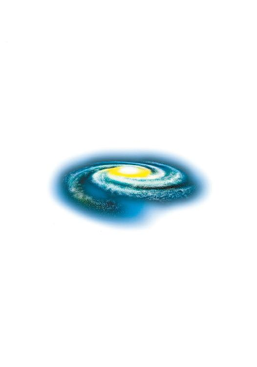
水野 良
１９６３年、大阪に生まれる。大学在住中にＲＰＧに熱中し、ゲームデザインを中心とした活動を開始。『ロードス島戦記』『クリスタニア』などファンタジー小説の旗手として多数の作品を発表する。高校時代はＳＦ同人誌に参加しており、長年のＳＦのファンでもある。

内藤 隆
キャラクターデザイン、イラスト担当。１９７５年、長野県に生まれる。２０００年初頭に小社刊『コミック電撃大王』で漫画家としてデビュー。イラストはこの『スターシップ・オペレーターズ』がデビュー作となる。
山根公利
メカニカルデザイナー。１９６６年、島根県に生まれる。代表的な参加作品『バブルガムクライシスシリーズ』『ガルフォースシリーズ』にはじまり、『機動戦士ガンダム第08ＭＳ小隊』『カウボーイビバップ』『無限のリヴァイアス』など多数。アニメーションメカデザイナーの第一人者である。
 電撃文庫
電撃文庫
スターシップ・オペレーターズ①
水野良
発 行 2013年12月27日
発行者 塚田正晃
発行所 株式会社KADOKAWA
〒102-8177 東京都千代田区富士見2-13-3
03-3238-8745（営業）
http://www.kadokawa.co.jp/
プロデュース アスキー・メディアワークス
〒102-8584 東京都千代田区富士見1-8-19
03-5216-8399（編集）
http://dengekibunko.dengeki.com/
本書（電子版）に掲載されているコンテンツ（ソフトウェア／プログラム／データ／情報を含む）の著作権およびその他の権利は、すべて株式会社KADOKAWAおよび正当な権利を有する第三者に帰属しています。
法律の定めがある場合または権利者の明示的な承諾がある場合を除き、これらのコンテンツを複製・転載、改変・編集、翻案・翻訳、放送・出版、公衆送信（送信可能化を含む）・再配信、販売・頒布、貸与等に使用することはできません。
(C)2001 水野 良
※この電子書籍は2005年2月10日発行の電撃文庫『スターシップ・オペレーターズ①』5版に基づき制作